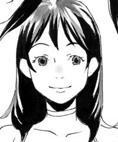
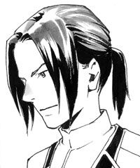

| wonder wonderful 上・１ (レガロシリーズ) | |
| 河上朔 | |
| (2013) | |
wonder wonderful
ワンダー ワンダフル［上・１］
河上朔
◆人物紹介
○こかげ
ごく普通の社会人。妹ひなたの危機に異世界へと飛び込む。
○ひなた

こかげの妹。ザキの恋人。
○ザキ

ディーカルアの若き国王。
○ディレイ
ザキの異母弟。
○ダイラン

呑気亭の料理人。
○ルカナート
近衛隊の隊長でザキの側近。
○ラシュ
蜂蜜色の髪の近衛隊隊士。こかげの護衛のひとり。
○シーリー
赤毛の近衛隊隊士。こかげの護衛のひとり。
○ヨーサム
灰色の瞳の近衛隊隊士。こかげの護衛のひとり。
○ティル
ひなたの侍女。リルとは双子。
○リル

ひなたの侍女。ティルとは双子。
一章 異世界
１
「こかげちゃん？」
母親から電話があったのは夜の九時前だったと思う。
（ウチの両親は昔から私のことを「お姉ちゃん」と呼んだことがない）
残業で帰りの少し遅かった私は家の近くのスーパーで夕飯の買い物をして、その袋をぶらぶらさせながらひとり暮らしのマンションまでの道を歩いていた。
月のすごく綺麗な晩だった。
「ねえ、ひなたちゃんからなにか連絡来てない？」
ひなたは、八歳下の妹だ。三年前当時は高校二年生。
「いや？ なにも聞いてないけど」
呑 気 にそう返事をした私に、携帯電話の向こうで母親が小さく動揺したのが分かった。
「え？ どうしたの？ ひなたになにかあった？」
嫌な予感が背筋をすっと這って慌てた私に、母親はまるで自分に言い聞かせるように言った。
「ううん。ただ、まだ帰ってこないから、こかげちゃんの所にでも行ってるのかと思って」
私が今住んでいるマンションは実家から電車で三十分の位置だ。
「連絡は？」
「今日はまだなにも聞いていないの。ううん、でも、ひなたちゃんだってお友達と話してて遅くなってるのかもしれないし。あの子にも付き合いがあるものね」
「ひなたが、なんの連絡もなく遅くなったことないでしょう？」
「そうよね。うん、そうなの。だから、お母さんちょっと心配になっちゃって......。でも、高校生だもの。九時ぐらいで......」
母親の静かな心配や恐怖が携帯電話の小さな穴から伝わってきて、それに呑まれそうになったのを覚えてる。
なにかあったんだ。ひなたに。
一瞬の間に目まぐるしく脳内を駆け巡った「なにか」はどれもこれも血の気が引くような想像ばかりで、そんな自分にまだなにも事件だって決まったわけじゃない、と言いきかせ、とにかくお父さんに連絡して、とりあえずひなたの心当たりの友達に連絡とって、それで誰にも確認がとれなかったら警察に電話しようと告げた。
「闇雲に心配するのもどうかと思うけど、いつものひなたを考えたらやっぱりおかしいと思うから、打てる手は打とう。ね、お母さん。大丈夫？ 私もすぐにそっち帰るから。いい？ 変な想像ばっかりしてちゃ駄目よ。そうこうしてるうちにひょっこり帰ってくるから」
私の放った「警察」の一言にあからさまに怯えた母親をなんとか励まして、でも実は私だって大差なかった。「普通」高校生が夜九時に帰宅しなかったからって、そんなの大したことじゃない。ひなただって、遊んでくるときには夜中まで遊んだりするわけだし。私だってそうだった。
でも、ウチでは、家に連絡もなく遊ぶことはありえなかった。
大丈夫だって、と何度も言いながら頭の中ではひなたになにかがあったんだと、足ががくがくした。
（どうしよう）
真っ白になって、勝手に怖くて泣けてくる。
事件だとか事故だとか、そういうの全部他人事だと思ってた。
どうしたらいいんだろう。
考えたけれど、なにもかもどうしようもなかった。
結局、ひなたは帰ってきた。
それから三日後のことだ。
ひなたは、どこに行ってきたのか。ほんの少しだけ日焼けして、背の半ばまであったはずの髪を肩のラインまで綺麗に切って、にこりと笑って帰ってきた。そうして、どこへ行ってなにをしていたのか、誰にも語らなかった。
警察や、学校や、友達や、もちろん私たち家族が死ぬほどの気持ちで心配をして、無事を喜んで、そうして一体なにがあったのかと問い詰めて、けれどそのどれにもひなたは静かに笑って、時々悲しそうな顔をして言った。
「少し、遠い所へ行ってきたんだ。心配かけてごめん。本当に、それはごめん。でも、お父さんもお母さんもお姉ちゃんも信じて。なにか危ないことに巻き込まれたり、傷つけられたりしたんじゃない。これだけは絶対だから。黙って出かけたことは何回でも謝る」
まっすぐに顔を上げて、ぐいと唇を引き結んだひなたを見たときに、どきりとした。
名前の通り、明るくて元気なひなたは、一方で自分でこれと決めたら恐ろしく頑固で、決して曲げない。それはわがままと紙一重だと、私たち家族の間では少しの笑いと共に認められていることだった。けれどそのとき、私たちの目を逸らすことなく見つめてきたひなたには、甘えも、気負いもなかった。
だから、家族の誰もが分かってしまった。
ああ、この子は自分のやりたいことをしてきて、それを語る気はないのだと。それはほんの少しだけ寂しいことだった。
あとで、あの子がどこへ行ってなにを見てきたのか知らないけれど、段々大人になっていっちゃうわねぇとお母さんと話した。
ひなたは、我が家ではいつだって「小さな子」なのだ。きっと、それはこれからどれだけ年を重ねてもそう思ってしまうだろう。だから、不意にあんな風に大人の目をして見返されると、どきりとするのだ。そう私が言うと、「あんただって、お母さんにとってはずっとずっと子どもなんだからね」と笑われたけど。
でも、実際その三日間がひなたのなにかを変えたのだということはそれからよく感じた。
ものの考え方や、捉 え方、言い方。ごくごく小さなことばかりだけれど、それは、私が昔からよく知っている「妹のひなた」とは別の側面だった。
「ひなたの旅」と我が家で呼ばれているその真相を私が聞いたのは、それから一年もしてからのことだ。
会社の昼休み。ブゥンという携帯の振動に気付いたのは幸運だったというべきだろう。鈍いのかどうか、私はあまりこれに気付くことができないのだ。画面に表示されている「ひなた」の名前に少し驚いて、慌てて会社の外に出た。
「お姉ちゃん、お姉ちゃん、お姉ちゃん!! 」
もしもし、と出るなり、びっくりするようなけたたましさに思わず携帯を耳から離す。
「な、なに、いきなり！」
「時間が無いの。ねえ、お願い。本当の本当にお願い。これから三日間くらいまた私旅に出ると思う。だから、お姉ちゃんとこに行ってることにして欲しい」
「は、はあ？ あんたいきなりなに？ ちょ、ちょっと待って。旅？ 出ると思うって一体なに？ 『ひなたの旅』第二幕ってこと？」
「うっわー！ さっすがお姉ちゃん。どんぴしゃだよ。それそれ！ そんな感じ！」
「そんな感じ、じゃ分かんないでしょ？ どういうこと？」
「うわ、待って、やっぱり行きそう。つか、行ってくる。ごめん、お姉ちゃん。でも絶対帰ってくるから心配しないで。お母さんたちにはもう心配かけられないから、ね？ お願い！ じゃ......」
「ひなた？ ちょっと、ひなた!? ひなたってば!! 」
ぶつ、と明らかに怪しい感じで切れてしまった携帯を手に、私は呆然としてしまった。
あの馬鹿はいきなりなにを言っているのだ。
咄 嗟 に応酬してしまったけど、咄嗟に「ひなたの旅」第二幕とか言ってしまったけど、はあ？
しかも、あのひなたの言葉はなんだったんだろう。
旅に「出ると思う」から、「行きそう」に変わり、「行ってくる」になった。現在進行形で事態がめまぐるしく変わってるとでも言いたかったのか。
即座にもう一度かけなおしたけれど、「お客様のおかけになった電話はただいま、電波の届かないところにいらっしゃるか......」のアナウンス。おかしい。電源切った？ おかしくない、それ？
なんか変。
思ったけれど、ひなた本人に問い詰めることができない以上私はどうしようもなく。
親に心配をかけたくはない、という心意気に免じてとりあえずは「アリバイ」作りに協力することにした。
そうして、四日後に帰ってきたというひなたからの電話に、とりあえず私の家に来なサイ。という姉強 権 を発動し、やってきたひなたの腕に薄い切り傷の痕 のようなものを発見して驚き、怒り、一体なにがどうなってるのかきっちり説明しないなら、今後二度とアリバイ作りに協力はしないと、半ば脅すようにしてすべてを白状させたのだった。
こ こ ではない場所に、ディーカルアという大国がある。
一方を海に、三方を山に囲まれ、鉱山を有し、大変肥 沃 な土地に恵まれた、豊かになるべくしてなった幸せな国らしい。
ただ、ディーカルアという国の隣にはザカリアというこれまたそれなりに大きな国があって、ずっと昔から仲が良いとは言い難い。ザカリアの土地はディーカルアのそれに比べると数段痩せていて、農作物を育てるのにすごく厳しい場所らしい。でも代わりと言ってはおかしいけれど、あっちにはびっくりするくらい良い鉄が採れる鉱山があるとかで。軍隊が強いお国柄らしい。それでつまり、まあ、隙あらば食料に困らないようにディーカルアを取り込んでしまいたいと思っていると。
けれどディーカルアの王様は強くて賢かったので、上手に緊張関係を保って向こうに手出しできないように外交してたそうだ。が、問題はこっからね。
なんと流行り病でこの王様が死んでしまったっていうから、国中大混乱に陥ったらしい。
もちろん、王様にはちゃんと次代を継ぐ息子がいて、王太子としての披 露 目 も済んでいたわけだけど、この王太子が当時なんと十七歳。（若っ！ 怖っ！）そんでもってありがちだけど、彼にはお母さんの違う弟、っていうお家騒動の王道パターンみたいな存在がいて、彼がまたたった一歳しか年が違わないって言うから、家臣たちが兄派と弟派に別れて一 触 即 発 状態。
ザカリアはこの混乱に乗 じてディーカルアの国土を一部だけでもかすめとろうと嬉々 として準備しはじめて、ディーカルアどうなんの？ やばくね？ という状態のところに、ひなたが飛びこんだと。
........................。
ええ。うん、まあね。
まあ......私もそれなりの年なのでね。
まさかそんな奇抜な話が妹の口から飛び出してくるとは思ってもみなかったわけですよ。
「信じてないでしょう」
じ、と目の前で少しだけ拗 ねたように私を見るひなたは、それでも決して目を逸らさない。私がこの話を聞いてどう言うのか待っている。
しばらくくらくらするような頭で今の話をもう一度反 芻 して、またひなたを見て、思わず溜 息 をついた。いや、なんだかそうせずにはいられなかったというか。深い意味はないんだけど。
「信じるよ」
「......」
「だって、あんたがそんな話作れるとは思わないし、そもそもそんな話作って私を騙 す必要ないでしょ」
例えば、この話を全然別の人が話したなら私の反応だって違っただろう。
すんごい作り話するな、とか。小説でも書けよ、とか色々ね。
でも目の前にいるこの子は私の妹で、そうして、私はひなたが私に妙な嘘をつかない、ということを「知って」いるのだ。それは、なんて言うのか。信じる信じないっていう信頼の問題ではなく、事実だ。
だからこの子が真剣な表情で私に向かって話したなら、私のすることはそれを受け入れるだけ。
それに。
ふ、とおかしくなってきた。いや、嬉しいのか？
昔から、本が好きだった。
異世界への扉を開いて冒険に出る。小さい頃、確かに私はそれを信じていたし、自分にその幸運が訪れるように願ったこともあった。段々と現実の世界が見えるようになって、物語の中の出来事を「空想」と分別するようになったけれど。
本当にそんな世界が存在するというのなら、それは......なんて楽しいんだろう。
そうだよね。
だって、「そんな世界は無い」って証拠もどこにもないんだから。そういうのがあったって、ちっともおかしくないって、そういうことでしょう？
「......で、続きは？」
にわかにわくわくとしてきた私は、ひなたを促した。が、私を見ていた大きな目が数度ぱちぱちとしばたかれ、みるみるうちにそこに薄い膜が張る。ぼろぼろぼろ、と彼女の頬をすべり落ちるそれに今度は私が目を瞠 る番だった。
「え、ひなた？ ちょっと？」
「......信じて、くれなかったら、どうしようかと思った......！」
顔を覆って嗚 咽 混じりに呟いたひなたを前に、一体私になにができただろう。
うわもう、あんた、なに余計な心配してんの？ とか、私はあんたのお姉ちゃんなんだからね、とか、この話するのものすごく不安だったんだとか、とにかく色んなことを考えて、久々に見たひなたの泣き顔に動揺もして（昔は喧嘩して泣かせてましたけど）、私はあわあわとひなたの頭を撫でた。
母さん譲りの、どちらかと言えば茶色い髪は、子どもの頃と変わらず柔らかい。
「ずっと黙ってるの、しんどかったね」
ようやっとそれだけ言うと、ひなたはぎゅうぎゅう抱きついてきて泣いた。
あああ、もうこの子は......。
よしよし、と撫でてやりながら、私はひなたがあの旅から突然大人へとなり始めた理由を知ったのだ。
そうして私は、彼女の秘密の共犯者になった。
ディーカルアの話は面白かった。
時間軸はまるで一貫性がなくて、こっちの三日間があっちじゃ三ヶ月だったとか、反対にこっちで一年経ってると思って向こうに行ってみたらまだ半年しか経っていなかったとか。ひなたが向こうに行ってる間はこっちの時間はゆっくり流れていて、ひなたがこっちに帰ってきてる間に向こうの時間が速く流れて、両方の世界の時間の帳 尻 合わせてるみたいだねと笑ったことがある。
城はヨーロッパのお城みたいだ、とか。運良く王宮に落ちて、わけが分からなくて半泣きのときにそこの王太子に拾われたから助かったとか。最初は不審人物と見なされて信用されるまでに時間がかかったけど、皆すごくいい人たちだったとか。
最初の旅でひなたはそのディーカルアの王太子がちゃんと国王の座につくまでを見届けたらしい。その辺の話を私としては詳しく聞きたいところだけど、ひなたの口が重くなるのであまり突っ込まないようにしてる。簡単に、ひなたは「一応うまくいったよ」と言うけれど、隣の大国が武器持って侵略してくるかもしれなくて、内側はお家騒動でびりびり、なんて状態が魔法のように簡単に「うまくいく」ことはありえないだろうから。
なんとなく聞いているとひなたは馬にも乗れるようになったし、実は剣術の手ほどきも受けるようになったとか言う。それって、つまり。
「あんたも戦ってるってこと？」
「......」
まずい、と正直者のひなたの目が言うのを、ちょっとちょっと、という気持ちに私がなったとしても誰も責めないと思う。だって、ねえ！
「私だけひとりおとなしくしてることなんてあの状況でできないんだよ、お姉ちゃん」
きっと私の想像もつかないことをひなたが見聞きして、経験して、そうして選んだことがあって、それに一傍 聴 者 である私が口を挟む権利なんてないんだろう。ないんだろうけど、でも私はひなたの家族だ。
腕や足や、わき腹にまで見つけたなにかで切られたような痕を見て、心配せずにいることなんか絶対にできない。そもそも私たちはこの国で生まれて、戦争なんて知らないんだから。話で聞いているだけじゃ、全然実感なんてない。分からない。
「ちゃんと帰って来てるじゃない、ね」
「帰ってこなきゃ許さないよ」
私を宥 めるように言うひなたはやっぱり私の知らない顔をしていて、ちくしょうディーカルアめ、私のかわいい妹になにをさせてくれるか、という気持ちにもなるわけだけど。
ひなたが、話をしてくれればくれるほど彼女がディーカルアという場所を好きで、そこにいる人たちを好きなことが伝わってきて、それならばいいかと。
結局のところ私は、ひなたが幸せならそれでいいのだ。
どうやら二度の異世界旅行で、ひなたを拾ってくれた若き王太子......あ、もう国王なのか。その王様といい感じになっているようだし（からかうと物凄く怒られた。いいじゃんねぇ。つか、もうこの素敵王道っぷりにお姉ちゃんはめろめろですよ）ひなたの周りにいる人たちもすごくひなたを大事にしてくれているみたいだし、世の中不思議なことも起きるものねぇとそれは私の中に現実として落ちてきた。
それからひなたがディーカルアに行くときには必ず私がフォローするようになった。
ひなたがあっちに呼ばれるのに一体どんな周期や条件があるのかはよく分からない。けれど、あちら側に行くと大抵大きな出来事をひとつは乗り越えて帰ってくるみたいだから、そういう時期に呼ばれるようになっているんだろうか。
行ってしまうと、帰ってくるまではやっぱり心配で、無事帰ってくるとその話を聞くのが本当に楽しかった。
でも、それはあくまでも「ひなたに起こる出来事」だった。
私はひなたの理解者であるその位置に満足していたし、自分が異世界へ行くかもしれないとは考えたこともなかった。
なんて言えばいいのか。異世界へ行くのはいわゆるそれ向きの「選ばれた人」であって、ひなたはそういう意味で納得のできる子だった。
つまり、明るく、天真爛漫で、まっすぐで、前向き、愛嬌がある、とか。
私は自分がそういうタイプではないことを自覚していたので、考えもしなかったのだ。
けれど、その日、私はどうしようもなく願った。
とにかく、なにがなんでもディーカルアへ行くのだと。
むしろ連れていけ、と誰かに怒鳴りつけるようにして願った。
そこからなにかが始まるなんて、思いもせずに。
２
また、向こうに行きそう。
そう、ひなたからメールを貰ったのが二日前のこと。月末で、仕事にばたばたと追われていた私は合間に「気をつけて」とメールを打った。前回ひなたがあっちに行ったのが半年前だから、呼び出しスパンが短いと言えば短い気がする。ぼんやりとそんなことを思いながら、ひなたも彼に会うのは嬉しいだろうからまあいいか、とすぐにまた目の前の仕事に戻った。
いつも通り実家に「ひなたは今日からウチに遊びに来てるから」と連絡を入れ、やっとの思いで辿り着いた週末に小さく万歳して家に帰った金曜日。
本当はこの一週間忙しくて放っておいた洗濯や掃除をしなければと思っていたんだけど、家に帰った途端一気に力が抜けてしまって、テレビをつけたまま倒れこんだベッドで、このまま寝ちゃうと風邪ひくなぁ。駄目だ駄目だと思いつつもついうっかり眠ってしまった。
夢を見たのはそのときだった。
知らない場所を私は歩いている。
左右に扉の続く、長い廊下の真ん中を。
（ディーカルアの城内）
あれだけひなたから色々話を聞いていたにもかかわらず、私がディーカルアのことを夢に見たことはこれまでに一度もなかった。けれど、何故だろう。夢の中の私はこれが間違いなくディーカルアだと確信していた。
夢の中の私は両脇に連なる同じ形の扉の中から迷いなくひとつの扉を押し開ける。
少し薄暗いそこは、ひなたが私に教えてくれたように、中世ヨーロッパの城内のような雰囲気だ。つまり、深い色の柔らかそうな絨 毯 。壁に施されたレリーフ。天井から吊り下げられている花をモチーフにしたシャンデリア。バルコニーに面する装飾の施されたガラス窓。猫足のこれまた細かな彫り物がしてあるかわいらしいテーブル。その奥の天 蓋 つきふかふかベッド......。
「ひなた!? 」
物珍しく部屋をぐるりと見ていた私は、ベッドで眠っている人間にそのときようやっと気付いて思わず叫んだ。
そこに、明らかに苦しそうな顔のひなたがいたから。
観光気分でぼんやりとこの状況を楽しんでいたのに、一気にすべてがリアルになる。
「ど、どうしたの？ なにがあったの？」
咄嗟に駆け寄って顔を覗きこむと、驚くほど赤い顔をしている。手を伸ばして額にやると、信じられないくらい熱い。
「ちょっと......ひなた、すごい熱」
側に私がいることが分からないのだろうか。
荒い息をしているひなたはちっとも目覚める様子がない。一体、いつからこんな風になっているんだろう。頬や首筋にぺたぺたと手をあてがい、少しでも冷やしてやらなきゃと焦って部屋を見回して、役に立ちそうなものがなにもないことにキレかけた。そもそも、ひなたがこんな状態なのに周りに誰もいないってどういうことだ!!
話に聞いていた侍女とか、それこそ王様とか、どこにいるのよ！
「......お姉ちゃん？」
とにかくタオルのようなものを、と部屋中をばたばた探していたら、不意にかすれた声がした。
「ひなた！ 気付いた？」
枕元に駆け寄ると、ぼんやりした表情でひなたが目を開けていた。
熱で辛いのだろう。目が潤んでる。
「お姉ちゃん......どうして？ ここ......ディーカルアだよね......」
「あんたこそ一体どうしたの？ いつからこんな状態なの？ 他の皆は今なにしてるの？」
矢継ぎ早に質問すると、ひなたはよくその質問が飲み込めないらしくしばらくぼんやり黙っていたけれど、ゆっくり答えはじめた。
「なんか、よく分かんないんだけど、こっち来て一週間くらいで急にしんどくなっちゃって。熱が出たのは三日くらい前からなんだけど、全然下がらなくて。ザキくんがすごい心配してくれて、皆にもめちゃくちゃ迷惑かけてて......」
ごほ、と咳き込むとひなたは眉間に皺 を寄せて涙ぐんだ。喉も相当痛いらしい。
「ごめんひなた喋らせて。分かった。じゃあ、皆あんたを放ってるわけじゃないんだね？」
とりあえずそれだけ確認すると、ひなたは私の怒りに気付いたのかこくこくと頷いた。
「お医者さんとか、こっちどうなってるの？ 薬とか、ちゃんと飲ませてもらってる？」
ベッドの端に跪 いてひなたの額から髪を撫でてやりながら、私はどんどん不安になった。
だって今まで聞いていた限りじゃ、ディーカルアという国は、私たちの世界で例えるならそれこそ「中世ヨーロッパ」なわけで、医療にしたって現代医療のレベルではもちろんないのだ。
「......お姉ちゃん、どうしよう。熱、全然下がらないんだよ......」
目を閉じて静かにしていたひなたが、もう一度私を見た。
「ただの風邪だと思うんだけど、でも、全然下がらない」
ひなたの感情が伝わってきた。
こわい。
私はだだっ広いこの部屋を見回して、最後にひなたを見て、すごくその気持ちが分かる気がした。
部屋の大きさに比してベッドはあまりに小さく、そこに眠るひなたは更に小さく、心細そうだった。
何度ここに来ていたって、ここはひなたの住み慣れた世界じゃない。
同じ地球上でだって、外国で病気になったら不安になるのだ。
小さく差し出された手をぎゅっと握ると、ひなたが泣きそうな顔で私を見た。小さい頃から変わらない。泣くのをこらえるときに、下唇をぐっと噛む癖。
たまらず、私は言った。
「待ってな、ひなた。私そっち行くから。いい？ あったかくして、おとなしく待ってるんだよ？ 絶対すぐ行くから！」
わはははは、と遠くで誰かが下品に笑う声で目が覚めた。
（しまった、テレビつけっぱなし......）
思いながらまたまどろみかけて、夢を思い出した。
（ひなた！）
一気に目が覚めて身を起こすと、眩暈 がした。
夢と片付けるにはあまりに生々しいそれに、心臓がどくどくと音を立てるのを感じる。
熱くなったひなたの手の感触がまだ自分の右手に残っていた。束の間それを見つめて、立ち上がる。
変に考え込むと、よくない気がしたのだ。
あれは夢の出来事だとか、そういう「常識的」なことを。
時計を見て、近所のドラッグストアがまだ開いてるのを確かめると財布を持って飛び出した。
考えられる限りの薬を手当たり次第に買いこむとスポーツバッグの中に投げ入れ、その上にどさどさと着替えやらタオルやらを放り込む。スポーツ飲料とか、ゼリー飲料とか、栄養剤とか。
一時間もしないうちに全部を終えると、バッグを背負った。
異世界への行き方なんか、私は知らないのだ。
でも、行かなきゃいけない。
だから、連れていけ。
不思議と、向こうに行けなかったら、とは思わなかった。あんなにもリアルにひなたを感じていたし、ひなたが私を必要としていると信じていたから。
頭の中で、不安そうな顔で泣くのを我慢していたひなたを一生懸命思い出しながら、叫んだ。
「ひなた、呼んで。そっちに行くから、呼んで！」
ぐい、となにかに全身を引っ張られるような感覚がしたのは一瞬だった。
自分で望んだことだったのに、その瞬間だけは「早まった」とどこかで思ってしまった。
３
どん、と痛みを感じたのは一瞬で、視界に飛び込んできた青い空の眩 しさに思わず目を閉じると、土の匂いがした。
「い......った......」
どうやら仰向けにひっくり返っているらしい。
なんとしても放すまいとスポーツバッグを抱き締めていたせいで、思いきり背中を打ちつけたようだ。じんわりとした痛みを感じながら、そろりともう一度目を開けた。
間違いなく、青空。
つまり、昼間。
手をつくと、その感触が明らかに地面だということが分かる。
「ちゃんと、着いてるんだろうね......」
さっきまで家の中で、しかも夜だったはずなのに、あまりに世界が一気に変わりすぎていて、私はちょっと怯えていた。勢いだけで来たのはいいけど、本当にちゃんとここはディーカルアなんだろうか。
よっこらせ、とおばさんくさい掛け声をかけて起き上がり、ゆっくりと辺りを見回す。
目印になるものは。
つまり、城は。
私が落ちてきたところは（ひなたはこっちに来ることを「落ちる」といつも言ってたけど、今回その意味がとってもよく分かった）庭のようだった。きちんと手入れのされた芝生に、大人の肩の丈 ほどに刈り込まれた植木の壁が私の前後に連なっている。顔を地面につけて、その隙間から遠くを見ると、離れた場所に花が咲き乱れているのが分かる。しかし、よ。
「ここは、どこ」
バッグを肩にかけ直すと、お尻や背中の土をはらって、四つん這いになってゆっくり動いた。ほら、急に知らない人に出会ったりすると怖いじゃん？
立ち上がると顔が出てしまうので、少しのあいだ耳を澄まして辺りに誰もいないことを確かめてからこそこそ動いた。木々はどこまで行っても柔らかな丸みを見せて綺麗に刈り込まれ、両脇を固める植木によって作られる道は散歩するにはなるほど気持ちが良さそうだ。ああ、これがいつぞやテレビで見た英国のガーデニングみたいなものかぁなどとどこかで思いながら、しばらく行くうちに少しずつ混乱してきた。
迷路かここは！
隙間なく並ぶ植木でできた道は右に折れ、左に折れ、どこかへ続いているようだけど、行けども行けども視界が開けない。
庭は庭らしくしてろ！
知らない場所で四つん這いで動いていた私は少々平常心を欠いていたわけで、だから少しくらい妙なことを口走ったとしても許されると思う。うん。
疲れて、ちょっと休憩、とその場に座りこんだところで自分の言葉を思い出した。
（迷路......？）
バッグを開けて、一番上に突っ込んでおいたノートを取り出す。
ノートを開いて、そのページを見つけて小さくガッツポーズした。
ひなたからディーカルアの話を聞いていると、どうしても国の名前とか、お城の構造とか、ひなたの言葉だけだと意味の分からないことが出てくる。だから話を聞いているときにはいつもひなたの前には紙とペンが置いてあって、すぐに「図解」するのが暗黙の了解だった。
このノートは私がそれを元に少しずつまとめていたものだ。
ディーカルアのお城の地図やら、ひなたがうろ覚えで教えてくれたこの世界の地図やらが乱雑にまとめられている。ここに来るのに絶対要る、と思ったから持って来たんだけど。
確かひなたの話にあった。
上から見ると迷路みたいな庭！
開いたノートには、東側庭、と私の字で走り書きがしてある。
ディーカルアの城は南を正面に立っていて、背後である北を除いてそれぞれに庭がある。東側がひなたも好きだと言っていた迷路のような庭で、確か中央には薔薇で囲まれた噴水があるはず。その噴水はディーカルアの女神であるなんとかって人が壺を肩に抱えているとかなんとか。
（噴水が見つかれば、完璧）
ノート片手に、こっそりと中腰になり、植木から顔を出す。......よし、誰もいない。一か八か、私は一気に立ち上がって植木から頭ひとつ分抜け出した。
「あった！」
思わず叫んでしまい慌てて口を押さえてしゃがみこむ。でも今確かに私が進もうとしていた方向の中央に噴水があることに気付いた。ノートをばさばさめくってもう一度確かめる。
大丈夫。ここはディーカルアの城の東側だ。間違ってない。
そうと分かればあとは早い。
ノートをめくってひなたの部屋までの順路を頭に叩きこむ。うん、多分大丈夫。大丈夫のはず。
思いながら、足は段々急ぎ足になり、小走りになった。
早く行かなきゃ。ひなたが待ってる。
逸る気持ちをなんとか押さえつつ進み、やっと庭を抜け出したところでまず一息。
目の前に現れた薔薇のアーチの向こうに、間違いなく、城の入り口。
ちらりと見上げて、すぐに首が痛くなりそうでやめた。城って......でかいのね......。
東側のその庭は国王やその妃たちが楽しむ場所でもあるため、出入りすることができるのはごく限られた階級の人間だけで、王宮内部に直結しているその庭に私が落ちたのはある意味運が良かったのだけど、もちろんそんなことはそのときの私は知らない。
薔薇の門を一気にくぐりぬけて、城内への扉に手をかける。
ばたん、と開くときにはもう、とにかくひなたの元へ駆けつけることしか考えていなかった。
（入った最初は通り抜けの部屋）
右手のノートを横目でちらりと確かめて、目の前の現実と照らしあわせる。
（まっすぐ進んで、もうひとつ通り抜けの部屋。そこから出たら廊下を右側へまっすぐ）
つきあたりを左。それからまたひたすらまっすぐ。
知らない場所だけれど、何度も何度も話で聞いた場所。子どものように手書きの地図を作って、何度もここを想像した。不思議なほど私には迷いがなく、見ず知らずの景色は、決して私を困らせはしない。
だから私は、異世界に飛んできたその興奮とひなたのことで完全に忘れていた。
一般常識というやつを。
大広間までは、なんの障害もなくやってこれた。
そのときには日頃の運動不足が祟 って肩で息をしていたけれど、上階へと続く見事な大階段を見上げて、あと少し、とそこを駆け上がった。この大階段を上ったら右側の通路へ行ってその奥の階段を......。
「きゃああ！」
甲高い悲鳴と共に、衝撃があり、走っていた私はその誰かを突き飛ばした。
「ごめんなさい！」
反射的に謝って手を差し出し、相手がまだ若い女の子だということに気付く。
「大丈夫？ ごめんなさい、急いでいて......」
すみません、とその子が顔を上げた瞬間、思わず息を呑んだ。かわいい子！
服を見るに、この城の侍女だろう。濃紺のワンピースに白いエプロン。金髪を綺麗に結い上げて、ぱっちりとした目は驚くほど青い。ビスクドールみたいに白い肌。うわあ。お人形さんだ......。
私が一瞬呆けていると、向こうの空気が一変した。
私の姿を見て、びくりと体を強張らせた。
「あなた......この城の者ではありませんね」
すっと、少女の目が私を探る。
やばい。
なにかの予感に背筋が伸びる。
その子が叫ぶのと、私が走り出すのは同時だった。
「誰か！ 曲 者 です！ 誰か！」
曲者ってー！
心の中で叫びながら、でもなんだかとってもまずいということだけは理解した。
お人形さん声でかい！
「誰か、捕まえて！ 曲者です！」
ばたばたばた、とにわかに辺りが騒がしくなる。
ち、ちょっと待って。ちょっと待ってちょっと待って。
焦りながらちらりと振り返ると、なんか追いかけてきてる！ 追いかけてきてるよ！
人って危機に陥ったときには余計なことを考えるものだけど、そのときの私がまさしくそれだった。
危険に陥ったときこそ平常心です、とか、まず誤解を解くよう努力しようとか、そういうのってお互いがきちんと落ち着いて話しあいの席につかなきゃまず無理だと思うんだよ。きっとあの人たちだって私がどうしてここに来たか話せばきっと分かってくれると思うんだけど、でも今捕まったらなんだか色々終わりそうな気がする。終わる？ 終わるってなに？ 命的なものが、ね。終わりそうな気がするよね。ひしひしとね......！
明らかに衛兵と思われるものが背後から追いかけてくるのが視界に入ったとき、私はもう「捕まったら殺される」としか考えられなくなっていて、死に物狂いで走った。
「あちらにはヒナタ様のお部屋が！」
後ろでまたあのお人形が叫んでる。
背後から迫り来るのは明らかに殺気。多分、殺気とか今まで生きてきて感じたことないけど、これってきっと殺気だよね。
ひなた、お姉ちゃんはあんたの部屋に辿り着くまでに死ぬかも......！
それでももちろん私はこんなところで死ぬわけにもくじけるわけにもいかないので、半泣きでもう一度階段を駆け上って廊下を突っ走り、一番奥から二番目の、つまりひなたの部屋の扉を遂に開こうとした、その瞬間。
だん、と背中にものすごい衝撃が走り、一瞬息が詰まった。
「死にたくなかったら動くなよ」
壁に押さえつけられた私の耳元で、低い声がした。
なにかが首筋に当たっている。
押さえつけられた恐怖で膝が笑いそうになりながら、恐る恐る振り返った。
「っ！」
ふ、ふざけんなー！
死ぬ！ そんなもん突きつけられたら死ぬでしょう!?
どっと、血の気が引いた。
首筋に、剣先。
一気に頭が醒める。
......妹が他人の家で倒れたからって、家人に断りなく上がりこんでいいわけじゃない。
常識。
勝手に上がるとどうなるか。
不法侵入。つまり犯罪。私がしてることって、そういうこと？
......そういうことだよ。
辿り着いた答えに脱力しかけたけれどもちろんこの状況でそんなことが許されるはずもなく。
「どこから入り込んだ」
首を押さえ込まれ、壁に更に押し付けられる感触。声が喉の奥に張りついている。
さっき視界に入った剣が天井の光を反射して目に入る。
ここは、私の住んでいた世界じゃない。
ディーカルアっていう全然別の国で、しかもここは王宮と呼ばれる場所だ。
王宮に入った不審者ってどうなるんだっけ？
現実逃避を図る脳内はどうしようもないことばっかり考える。
「答えろ」
ぐい、と頬が潰れるほど壁に押し付けられる。息ができない。
ばたばたと人が私を取り囲む気配がする。さっき私を追ってきていた衛兵たちだろうか。今の自分の状態が信じられなくて、気が遠くなりそう。
「調べろ、なにか妙なものが入っているかもしれん。気をつけろ」
けれど、肩からスポーツバッグを乱暴にとられたときに我に返った。
「やめて！ ひなたの薬が......！」
これはとられるわけにいかない。
反射的に私は自分の肩から離れていきそうになったバッグの紐を自分の体の前で両手で握り締めた。
「放せ」
「いや」
容赦のない力が更に加わり、男の手が私の手首を掴んだかと思うとものすごい力でねじり上げられた。
「いっ......！」
あまりのことに声も満足に上げられない。あっさりとバッグを奪われ、後ろ手に拘束されたまま壁に向かって立たされている。
どうしようどうしようどうしよう。
焦りと、恐怖とでくらくらする。
どう考えても冷静に話のできる空気じゃないし、なにより私自身が今の状況で冷静に話ができるとは思えない。
「......ひなたに、会わせてください」
「ああ？」
ごめん、ひなた。
私、なんにも考えずに飛び込んできちゃったよ。
あんたに迷惑かけるつもりじゃなかったのに。
ちゃんと、普通に正面から名乗って、事情を話して、そうやって入ってくればよかったんだ。どうしてそんなことが頭から飛んでたんだろう。
「勝手に入ってきてすみません。言い訳しても仕方ないんですけど、悪気があったわけじゃないんです」
自分の言ってることが「私は怪しいものじゃありません」と同じくらい説得力のないことを感じる。ああ、でも。今初めて知った。そう言うことしかできない状況ってあるんだ。それ以外になんて言えばいいのか分からない。
「私、ひなたの姉です。あの子、病気なんでしょう？ ひなたに会いに来たんです。会わせてください」
目の前の白い壁のざらざらした感じを、どこか遠いところで見ている気がした。
私の後ろにいる人たちがどんな顔をしているのか、全然分からない。
どうか、話を聞いてくれますように。
祈るような気持ちで言ったのに、言い終わるや私を掴んでいた腕に力が込められた。
「っ！」
上から、押さえつけられる。
突然の圧力に、私は膝からその場に崩れ落ちた。膝立ちになった瞬間、頭を前に押さえ込まれ、磨きぬかれた床にほとんど額づくような姿勢になる。
「誰から聞いた」
男の気配が近付いてきたかと思うと、さっきと同じように耳元で囁くように言われた。低い声には、殺気。
（いやだ......！）
「ひなた！ ......ひなたひなたひなたっ！」
「黙れ！」
口を覆われそうになり、私はかぶりを振ってそれから逃れ叫んだ。ひなたの部屋だと思われるその扉に向かって。
「ひなた！ 来たよ！ 私、来たよ！ ひなたっ!! 」
まともに話なんかできやしない。
私の存在を認めてくれるのはここにはひなたしかいないのだ。
「ひなっ......」
狂ったように叫ぶ私の口を男が大きな手で塞ぐ。私はそれから逃れようと立ち上がり、めちゃくちゃに足を振り回して後ろの男の脛 を蹴った。
「ひなた！」
「お前......」
ちっ、という舌打ちが聞こえたと思ったのは気のせいだったんだろうか。
気がつけば、私は床に押さえつけられ、今度こそ完全に這いつくばらされていた。
「誰か、布持って来てかませろ」
向きが変わったために開けた視界に映るのは私の方に向けられているいくつもの黒いブーツたち。
見知らぬ場所でこんな目にあっている自分があんまりに信じられなくて、笑い出しそうになる。それでも、誰かの足が私に近付き、頭上で私を押さえ込んでいる男に向かってなにかを差し出しているのが分かると、なにも考えることができなくなった。
顎を掴まれ、布をまわされる。
猿ぐつわ......？
（いやだ、いやだ。いやだ！）
「おい、暴れるな！ 自分の状況をよく考えろ」
「やだ、やめて、や、い......や......ひなた!! 」
「お姉ちゃん！」
もう駄目だ、と目を閉じかけたその瞬間、右側の扉が開いて、欲しかった声が落ちてきた。
視線を上げると、まだ赤い顔をしたひなたが目を丸くして私を見ている。
ああ、ひなた。
「ヒナタ様！ 不審者です。お部屋にお戻りください！」
「ヒナタ様、駄目です。お戻りになってください」
誰かが口々に言う声が、随分遠くで聞こえる気がした。
「......お姉ちゃん」
「ひなた」
未だ床に這いつくばったまま、それでも、ようやっと知った顔に会えて私は泣きそうになった。
笑うと、ひなたの顔が崩れた。
「た、隊長、なにしてるの。お姉ちゃんを放して。大丈夫、この人は大丈夫だから」
「でも、ヒナタ様！」
後ろの男とは別の人間の諌めるような声がする。
「早く！」
けれどひなたの毅 然 としたその声は、その場の誰よりも拘束力を持ったものだった。
了解、という小さな声と共に背中からようやく圧迫が消え、私は大きく息をついた。......助かった。
「ご、ごめんねお姉ちゃん。ごめんね。大丈夫？ 怪我してない？ あの、皆その悪気があったわけじゃなくて、ここお城だし、その、お姉ちゃんが来るって私思ってなくて皆にも言ってなくて、......ああでも、怖かったよね、ごめんね。本当にごめんね」
ひなたが慌てて私の側にしゃがみこんで、その場に座りなおした私の手を握りながらまくしたてる。押さえつけられていた私の背中を何度も撫でて、私のあんな姿に動揺したんだろう、目は涙でいっぱいだ。
「......いや、私もごめん。なんだか焦っちゃって、勝手に入ってきたから」
なにから言えばいいのか分からず、それでも、ひなたが言いたいことは分かった。色々考えると物申したいことは山のようにある気がするけれど、今はそんなことどうでもいい。
握られていた手を握り返して、ありがとうと呟くと、ひなたは少し息をついて、それから食いいるように私を見返した。
「でも、本当に、お姉ちゃん来てくれたんだ」
「来たよ」
「私、あれ、夢だと思って......」
「でも、来れた」
「部屋の外でお姉ちゃんの声がして、まさかと思って」
「出てきてくれて助かった」
「また、夢かもしれないと思って」
真向かいで話していても、ひなたの熱い体温が伝わってくる。
夢のときと同じようにその頬を撫で、額に触れた。
「夢じゃない。来たよ、ひなた」
騒がせて、ごめん。
ぎゅ、と手に力を込めると、熱で潤んだ瞳からぼろりと涙がこぼれた。
ありがと、と呟きながら、こてんとそのまま私の肩に額を押し付けるから、よしよしと頭を抱いた。
ものすごく、疲れていた。それでも、この為にここに来たんだと思ったらほっとした。
周りでこの事の成り行きを何事かと目を瞠っているギャラリーたちの存在を、そのときばかりはすっかり忘れて。
時間にしたらそれはわずかの間のことだったのだろう。
安心して私にもたれかかって眠りに入ったひなたの体温を感じたまま、私はもう一歩も動きたくなかったし、なんにも考えたくなかった。先送りにできることならなにもかも先送りにして、このままひなたと一緒に眠ってしまいたかった。
「眠ったのか？」
だから、目の前に誰か近付いてきたことにすらそのときの私は気付いていなかった。
不意に降ってきた声に、驚いて顔を上げた。ざわり、と皮膚が粟立つ感覚。
呆然とその場に座りこんでいた私は、さぞや呆けた顔をしていただろう。ひなたを抱き締めていた腕に、知らず力が入った。
無造作にひとつに束ねられた黒髪に、はっきりとした意志を持った翡翠の瞳。気の強そうな細い眉に、美しい鼻 梁 、（そのときまで私は男の人の美しい鼻梁、というやつをよく理解していなかったけど、彼を見て深く理解した）薄い唇は、まるで女の人のもののよう。それなのに、それらのパーツを組み合わせたその顔は、まぎれもなく美しい男のそれ。
「......大変、お騒がせを致しました」
なんとか言葉にしながらも、私は彼から発される空気に圧倒されていた。
（「ザキくん」だ）
ひなたから、何度も何度も聞いた。
ディーカルアの若き王。
ザキ・ディーカルア。
一体、いつからこの場にいたのだろうか。
「部屋に運ぼう。まだ熱が下がっていない」
「え、あ、はい」
私の言葉には答えず、ザキくんはひなたに視線を移す。
すっとしゃがみこんで、なんの迷いもなくひなたの肩を抱いて体の向きを変えると、膝裏に手を差し入れて抱き上げ......。
「......」
私の背中に巻きついていたひなたの左手が、まだしっかりと私の服を掴んで、私とザキくんの間を繋いでいた。
「ヒナタ、手を放せ。部屋に連れて行く」
ザキくんはひなたの耳元に口を寄せると、穏やかな声で言った。私は目の前で行われたそれに照れて少しだけ視線を外した。
ザキくんの声が聞こえたのかどうか。ひなたの指がゆっくりと私の服から外れて、ザキくんが再度立ち上がる。まるでひなたの重みを感じていないような、自然な動き。
（姫抱っこだよ......）
見ちゃいけないような気もしたんだけど、なんの衒 いもなくそうするザキくんが映画のワンシーンのようにかっこよかったので思わず見とれた。ザキくんはひなたを物凄く大事そうに抱えて部屋の中へと入って行く。
慌てて立ち上がりついて行こうとして、足に力が入らないことに気がついた。
「なにをしているんだお前は」
「っ！」
さっきまで私を拘束していた男の声にびくりとして振り返ると、こちらを見下す馬鹿にしたような視線にかちあった。
「そんなところに座りこんでないで、早く立て。邪魔だ」
「立てないんです。動けるようになったら勝手に動きますから、放っておいてください」
言いながら辺りを見回して気付いた。どうやら私を取り囲んでいた衛兵たちは解散させられたらしく、今この長い廊下にはこの男と私だけしかいない。
嫌だ！
慌ててもう一度起き上がろうとしたけれど、どうしても力が入らない。
「腰が抜けたのか？ 忍び込んで来たわりに、大したことないな」
「誰のせいだと......！」
せせら笑う声にかちんとなって睨みつけると、腕を掴まれて無理矢理立たされる。さっきまで強く押さえつけられていた恐怖がまた湧き上がって、私はその手を振り払った。
「や、やめて。触らないで」
壁に背中を張りつけてなんとか体を支えたけれど、やっぱり膝が笑っているのが分かる。ああ、ほんと最悪。
「起こしてやっただけだろ。それにさっきのはお前の自業自得だ。この階までなんの許可もなく忍びこんできて、ヒナタ様の部屋へ侵入しようとした。命があるだけマシだと思え」
ついてこい、と顎 で促されて私はその背中を信じられない思いで見ていた。
「......」
確かに、この男の言うことは正しいのだろう。
それでも。
まだ力の戻らない膝をなんとか両手で押さえながら、どうしようもなく不快だった。
あれだけのことを、「お前が悪いのだから当然だろう」の一言で済まされてしまうことが。
「ひなたの側にいたいんですけど」
「先に聞くことがある」
まったく有無を言わせない調子だ。私がついていかないことに気がつくと「隊長」とひなたが呼んだ男は片眉を上げて肩越しに振り返った。
「引きずられたいのか？」
「......」
仕方がないので返されたスポーツバッグを抱えてついて行くと、ひなたの部屋の隣、廊下の突き当たりのそれに入るよう促された。
ぱたんと乾いた音を立てて扉が閉まると、不意に静けさが漂った。
窓から昼の光が入り込んで、部屋の中にはっきりとした陰影を作り出している。ぼんやりとした空気だ。部屋に入ってすぐに目についたのは、正面の壁に掲げてある国旗のようなもので、濃い赤地の布の中央に、上下の赤よりも少し細い金の帯が横に入っている。旗の左右下からは長剣が対角に掲げられ、切り結ぶように交わっていた。その前にはどでかい執務机があって、映画の中でしか見た事のない羽ペンやインク壺が置いてある。ライオンの形をした鈍い金色の文鎮で止められた書類の束を見て、来週にまわした未処理の仕事書類のことをふと思い出した。こんなことになるなら、今日中にやっておけばよかった。窓の外は、雲もないほどの快晴だ。
（青いな）
そんなこと、今考えてもどうしようもないか。
あまりにすべてが目まぐるしくて、それこそ夢の中の出来事のようで、「私」がいまひとつこの現実についていけていない。
ザキくんを待っているのだろう。隊長は、私を机の前に立たせて自分は机の脇に立って外を眺めている。
金茶の短髪に、同色の眉。ダークブルーの瞳は野性的な印象だ。骨格をはっきり感じさせる鼻梁は無骨というよりはすっきりとしていて、その下の人を小ばかにした笑みを浮かべる唇は少し乾いていた。形の良い、厚めの唇。ザキくんとは別のタイプの、男前だ。美形じゃないけど、男前。
......顔のいい男って、苦手だ。
背......高いな。私も女の子の平均でいくと身長ある方だけど、少し見上げるくらいある。袖のない無地の生成りの裾長シャツに、深緑のパンツ。ウェストを黒い皮のベルトで締めて、左側に細い剣が下げられている。黒いブーツはさっきちらりと見た衛兵たちのそれと同じに見えた。衛兵たちが深緑の揃いの制服を着ていたことを考えると、随分軽装だ。と言うより、ラフすぎる。剥き出しになっている腕は確かに鍛えられた人のそれで、そりゃあ私なんかひねるのはさぞや簡単だったろうと思うと腹が立った。
（この人が隊長かあ......）
ディーカルアの話をひなたから聞くときに必ず出てくる名前があって、隊長の話だって何度だって聞いていた。この国に溶け込んで自分の居場所を確保しているひなたの話に出てくるのは、皆やさしくて面白くて親切な人たちばかりだ。
よく話が出てくる人に関しては私なりにイメージができ上がっていたりしたのだけど。
（この人が......ねえ）
第一印象というものがいかに大切か。
ひなたに聞いていた様々が私の中で霞のように飛んでいく。
知らず、睨みつけていたみたいだ。いつの間にか隊長の顔がこちらに向いて私を見ていた。
「なんだ、じろじろ見て」
「別に。私の前にいらっしゃるので視界に入っているだけですけど」
「見てただろ」
「視界に入っているだけです」
「それを見てる、って言うんだろ」
うるさいな、本当に。
「ひなたに聞いていた『やさしくて頼もしくて楽しい隊長』さんにはとても見えないなあと思っていただけです」
ええ、ええ。大人気ないと言ってもらっても構わないですよ。
でも暴力の恐怖はそう単純に忘れられるものじゃないんです。初対面の人に小ばかにされる覚えもちっともないんです。
「ヒナタが？ へえ」
腕組みして、隊長はその青い目に興味の色を浮かべた。こっちに向き直った拍子に光を反射したのだろう。彼の耳元でピアスが光る。けっ。かっこつけやがって。
私だってピアスくらいしてるけど、なにかにつけけなしたい気分だ。
「さすがヒナタだな。よく分かってる」
「人を見る目を養うよう伝えておきます」
苛々と言い返すと、隊長はぴくりと眉を動かして、ゆっくりと近寄ってきた。
「な、なんですか」
また押さえつけられるのかと後ずさると、腕組みしたまま大股で私の前に立ち、覗き込まれる。上から下まで、じろっと視線を流されてたまらなく感じが悪い。
青い瞳が、完全に私を見下した。
「不法侵入者に『やさしくて頼もしくて楽しい隊長』である必要がどこにあるんだ？」
「......！」
体が、かっと熱くなるのが自分で分かった。
彼の言うとおりだからだ。
自分のしていることの矛盾をつきつけられるほど恥ずかしいことは、無い。自覚しているのなら尚更。
生まれて初めて剣を突きつけられたとか、壁に押さえつけられたとか、頭鷲 掴 みにされたとか、床に力任せに這いつくばらされたとか、日本じゃ考えられない。それでも。
「......ご迷惑をおかけしてすみませんでした」
色んな気持ちを呑み込んで、頭を下げた。
頭を下げたときに、自分がまるで価値観の違う世界に来たんだとやっと、漠然と思った。
ただ話に聞いているだけなら、見知らぬその世界を想像して楽しんでいればよかった。
けれど、私はもうその只中にいる。
気を、引き締めなければいけない。
なにに対してかはっきりとは分からないまま、私は顔を上げた。
隊長はなにも言わなかった。ただ、じっと探るように私を見ていて、その居心地の悪さに先に視線を逸らしたのは私の方だった。
４
ザキくんが部屋に入ってきたとき、この部屋の空気に気付いたのかどうか。彼は机の前に少し俯いて立っている私と、またどこやら眺めていた隊長をちらりと見て、なにも言わずに席に着いた。
「あの、ひなたは......」
「よく眠っている」
ぴしゃりと、遮るように言われて思わず姿勢を正す。
正面から先ほどの隊長よりも更に厳しい瞳を向けてきたザキくんを前にしたときに、ひどく嫌な予感がしたのは確かだった。
歓迎されていない。
それだけは、感じ取れたから。
机の上に軽く両手を組んで真正面からこちらを見る彼と、私。まるで、校長室に呼ばれて叱られる学生のようだ。
私の部下よりも年若い彼からのそんな視線は、普通だったら随分と生意気に感じるのだろうけど、彼にはそうし慣れた雰囲気があった。年齢差などものともしない、圧倒的な空気。そう、私と同年代であろう隊長を脇に従えてまったく違和感を感じさせない上に立つ人間のオーラというやつだ。
「先ほどは、ご迷惑をおかけしてすみませんでした」
私に視線を向けたまま口を開こうとしない彼に内心圧されながら、それならばと先に喋ることにした。
「ご挨拶が前後し申し訳ありません。ひなたが、こちらで大変お世話になっています。姉の、こかげと申します。色々よくして頂いていると話を聞いています。ありがとうございます」
「お前にヒナタのことで礼を言われる筋合いはない」
「......」
一瞬、なにを言われたのか分からずザキくんを見返した。
「ザキ・ディーカルアだ。お前の話もヒナタから聞いている。シャシンというそっちの絵も見たことがある。その格好も、ヒナタの格好とよく似ている。先ほどのヒナタの様子からしても......お前がコカゲだというのは、嘘ではないだろう」
「......は、あ」
私が姉だということは了解してもらっている、ということでいいんだよね......？
事務的に話をするザキくんがなにを言いたいのかよく分からず、私はとりあえず頷く。
コカゲ、といきなり呼び捨てにされたことと「お前」呼ばわりには盛大に引っかかったけれど、まあ今はそんなことをとやかく言っている場合ではない。
ザキくんは、話の展開が見えていない私にまるで構わずにさらりと続けた。
「ここになにをしにきた。コカゲ」
「え？」
「ここに、なにをしにきた」
できの悪い生徒に言って聞かせるような言い方。
私は、ぽかんとしつつも答える。
「ひなたに呼ばれて......」
「ヒナタに？」
綺麗な眉間に皺が寄った。
「私もよく分かりませんけど、夢であの子がここでうなされているのを見たんです。高熱が下がらないって不安そうで......。今までひなたがこっちにいるときに夢なんか見たことがなくて。それで心配になって来たんです。私はこちらへの来方は知らないので、ひなたが呼んでくれたんだと思うんですけど」
「ヒナタが、不安だからお前を呼んだと言うのか」
ぐっと、ザキくんの声音が下がったような気がした。
「ええ」
「何故。ヒナタには専属の医者も、侍女もつけてある」
何故ってあんた......。
思わず突っ込みそうになったけれど、あまりにザキくんの瞳が険しいので思いとどまる。
「だから、知らない場所で病気になって心細かったんじゃないですか。病気のときって誰でも気弱になるものだし」
「ここは、ヒナタの知らぬ場所ではない」
「いやそういう問題じゃなくてね......」
呆れた口調を隠せなかった。だって、つまりこの青年は、私に焼きもち焼いてるってそういうことでしょ？ じろりと睨まれても、そういうことなら怖くない。一気に目の前の青年が年相応に......いや、もっと幼く見えてきた。
「別にひなたがあなたたちのことを信頼していないとかそういう話じゃないわ。あなたがひなたの恋人だってことも知ってる。でも、家族はそれとは別でしょう。気を遣う必要もないし。私だって全然知らない場所で病気になったら、大好きな友達に囲まれてても、やっぱりひなたや父や母が側にいてくれる方が安心すると思う。そういうものじゃない？」
やっぱり王子さまは感覚が違うのねーなどと、内心どこか微笑ましさすら感じていたのだけど、言い終わってから見たザキくんの表情に引いた。
「血縁にあるというだけで、何故そんな呑気な発想ができるのか俺には理解ができんな」
口元は綺麗な弧を描いているのに、目がこれっぽっちも笑ってない。綺麗な翡翠に嘲りの色すら浮かべている。びっくりしているとザキくんは笑ったまま立ち上がった。目線は私より少し高いくらいだ。見えないなにかに押されて知らず一歩後ずさる。
「本当のことを言え、コカゲ。ヒナタが不安のあまりお前を呼び寄せたなどと見え透いた嘘をつくな」
「はあ？」
「仲の良い姉妹だということはヒナタから聞いている。だがな」
ふ、と笑ったザキくんの表情の皮肉気なこと！
「俺は血縁ほど信用に値しないものはないと考えている」
「それは、どういう......」
「今までどれほどヒナタが危険な目にあってきたと思っている。そのどれにも現れることのなかったお前が、今この段になって現れることの意味を計れぬとでも思ったか」
いや、ちょっと。ザキくん。なに言ってんの。意味分かんないよ。
「どうヒナタを言いくるめてこちらに来たのかは知らんが......」
どうしてそう自分勝手に話進めるかな。
唖然としている私に向かい、ザキくんは今や完全に敵意をぶつけてきた。
「先に警告しておく。ヒナタが俺の妃となるからといって、血縁にあたるお前への二次的な益などなにひとつない。ヒナタはゆくゆくは国王妃となる身。これは全国民の了解事項だ。お前とは、姉妹といえど絶対的に身分が違う。それを自覚せぬ振る舞いはお前自身の首を絞めるということをよくよく理解しろ」
え？ な、なに？ なに言ってんのこの子？
て言うより、どこから突っ込んだらいいのか分からないくらい突っ込みどころ満載なんだけど！
ぽかんと口を開ける私を前に、王様はケツゼンとした態度でこうおっしゃった。
「ヒナタがお前を慕っていることは知っている。その信頼を裏切るような真似は、決して許さん」
はああああああああ？
５
真っ白なシーツの上に、陽が伸びている。一見真っ白に見えるこのシーツには、しかしその端に繊細で計算し尽くされた配置の小花と絡み合う蔦 の刺繍がびっしりと施してある。開け放たれた窓から入ってくる風がこれまた冗談みたいにドレープの多いカーテンを揺らして、ひなたの前髪をすくう。穏やかな昼下がり。
そういえばこっちに来て、まだ一度も雨の日がない。そういう時期なのだろうか。
日本でいう春か初夏のような気持ちのいい日ばかり。
ほんの少し薄暗い室内から目を細めて空を見て、ひなたに視線を戻した。
熱が下がって、失った体力を取り戻すかのように熟睡している。子どもみたいだ。
こんな風にひなたの寝顔を見るなんて、随分久しぶりのことのような気がする。
子どもの頃は、ふたつ布団を並べて、顔を見合わせて眠っていた。
形の良い卵形の顔に、二 重 の大きな目。柔らかい、女の子らしい曲線を描く眉に、少しだけ本人が気にしている小さな鼻。リップなんか塗らなくても不思議なほど艶のある桃色の唇。ほとんどシミやそばかすのない白い肌。あるときから伸ばしはじめた髪は今や背中に届くほど。これって、きっとザキくんのためなんだろう。美人と言える顔立ちではないけれど、十分かわいいと思う。身内贔屓 でなければ。
（十九歳か......）
前髪を触るでもなくふよふよと撫でながら、それでも私にとっては「幼い」気がする顔を眺めた。
自分が十九の頃、一体なにをしていただろう、なんて思う。どんな顔をしていただろう、とか。
ひなたと私は、年が離れているせいもあるけれど、元々あまり似ていない姉妹だ。同じ年の頃の写真を並べてみるとよく分かる。
私の肌はひなたと違って日に焼けるとすぐに黒くなってしまうし、二重の目は大きいけれどつり気味で、睨むときつい、と時々言われる。眉もそれに合わせて割合すっきりと整えてるから、女性らしい、と言うよりははっきりとした印象らしい。大きな口は笑うのにはいいけど、色気とは無縁だ。似ているとしたら、髪の色と質くらいかな。気が付けば肩の辺りまで伸びてしまって、鬱陶しいからいつも後ろでひとつにぎゅうぎゅうとしばっている。
似ていないね、と言われることは昔から多かったし、言われてまったく気にならなかったわけじゃない。ひなたを羨む気持ちだってある。でも、そんな感情は大人になって自分の世界が確立されていけば徐々に薄れていく類のことで、どんな姉妹だって大なり小なりそうやって互いをライバルにして成長していくものだろう。
親は私を生んでくれた大事な人たちだけれど、妹は、同志だ。
同じ環境で、同じ親の元で一緒に生きて、成長してきた。誰よりも近い場所で。
喧嘩だって八つ当たりだってしたし、されたし、ひどいことだって言い合う。でも、妹は妹だ。
ひなたが段々と大人になり、もちろん私も社会人になって家を出て、きっともう子どもの頃のようにお互いのことをなんでも知っている、なんてことはない。それでも、私は自分が誰よりもひなたの味方だと言い切ることができるし、逆にひなたはなにがあっても私を絶対に信じてくれると言い切ることができる。
（「血縁ほど信用に値しないものはないと考えている」）
......ひなたとザキくんが互いに幸せならそれでいい、と私が思っていることは、決して彼には伝わらないのだろうか。
否、彼らには。
あれからザキくんの言葉を私なりに考えてみたけれど、要は彼は「お前はヒナタにたかりに来たんだろう」と言っていたんだと思う。
どうして「私がここに来た」イコール「ヒナタにたかりに来た」になるのかは理解できないところだけど、ええと、つまり、将来国王妃になるひなたちゃんのおこぼれに与 ろうと、私が颯 爽 とやってきたと思われているという解釈で間違いはない、はず。「二次的な益」って、そういうことだよね。
（そんなことより、国王妃ってなんだよ。そっちの方がお姉ちゃんには驚きだよ。そこまでもう話進んでるの？ 聞いてないよひなた！）
理解できないことを理解できないなりに理解しようとすると余計に混乱する。
「ひなたちゃーん早く元気になってお姉ちゃんとお喋りして......」
熱が引いて、落ち着いてきたひなたの寝顔を見ながら、思わずその側に顔だけつっぷした。このベッド、きっと羽毛だと思うんだけど、ほんっと信じられないくらいふかふかで気持ちいい。私の部屋のベッドとは大違い......。
「コカゲ様、ヒナタ様はお休み中です。話しかけるのはおやめください」
「......」
即座に背後から飛ぶ声に、答える気力もない。
こちらに来てから三日。私は自分の置かれた状況にストレスが溜まる一方だった。
あの日、ザキくんから一方的になされた通告に対して、私はろくに反論しなかった。
いや、できなかった。
彼と私の立ち位置のあまりの違いに唖然としたというか、なに言ってんだろうこの子という衝撃が大きすぎたというか、とにかく、慄 いたわけ。色んなことに。
あまりにものの考え方が違うと、かえってどう反応したらいいのか分からなくて呆然とすることってあるでしょ？
自分の言いたいことはもう言ったと判断したのか、ザキくんは黙り込む私を気にすることなく、その後も事務的に私の滞在許可を認めることと、ひとりで城内を歩きまわるなとかそんな注意事項をいくつか告げて、細かいことはルカナートに任せると締めくくった。
「ルカナート？」
聞きなれない名前にそこだけ聞き返すと、ザキくんはちらりと視線で隊長を示した。
ああ......あなたルカナートさんていうお名前なの......。
そこで彼の名前を知ったからといってなにがどうなるわけでもなく、私の中ではひなたに聞いていたとおりに隊長でしかない彼は、話の間中微動だにせずその場に立っていたんだけど、ザキくんの言葉に頷いて私にまたついて来るようにと示した。
「ねえ......あの、隊長......さん」
一応、さん付けで呼んでみる。
「なんだ」
「あの、ザキくん、あの子どうしちゃったの。あの人間不信ぷりって半端じゃない......」
「ザキ様、と呼べ。そんなことを不用意に周りの人間に漏らしていると、不敬罪であっという間に牢獄行きだ」
そうだった。こいつも言葉通じないんだった。
......オーキュウってソーゼツ。
ぼんやりとそんなことを思っているうちに隊長はすたすたとひなたの部屋の前を通り過ぎ、階段を下りる。全部同じに見える扉の前をいくつか通り過ぎて、そのうちのひとつをノックした。
「俺だ。ルカナートだ」
「はい」
部屋の中からかわいらしい声がして扉が開かれると、お人形さんが出てきた。さっき私がぶつかった子だ！
「ああ！ さっきは大丈夫だった？ ごめんね？ 怪我してない？」
思わず声を上げると、その子は怪訝そうな表情をしてひとつ瞬きをした。あれ......？ 人違い？
「ええと、さっき、私角でぶつかったよね......？」
「それは私ではありません。妹のリルではないでしょうか」
妹？
「私と妹は双子です」
......双子の姉妹......。
「もしかしてあなたひなたの友達のティルとリル？」
うわあ！
知ってるよー。ひなた付きの侍女の双子ちゃん！ 聞いてる聞いてる。そうか。物凄く二人ともかわいいんだってひなたが自慢してたの分かる。こりゃ美人だわ。んでもって二人ともそっくり！
「と、友達だなんて恐れ多い......」
私の言葉にティルは一瞬嬉しそうに頬を赤らめる。ぎゃああ。なにこのかわいい生き物。
思わずじたばたしそうになったら、またもや隊長が台無しにした。
「ティル、こちらはヒナタ様の姉君のコカゲだ。しばらく滞在することになると思う。狭いだろうが、その間お前たちの部屋に泊めてやってくれ。くれぐれも間違いのないように、とのザキ様のご命令だ。詳細はまた説明する。時間が空き次第俺の部屋にリルと来てくれ」
「......！ はい、ルカナート様。確かに、承りました」
い、いやな感じ......！
あんた、今の会話の流れで「くれぐれも間違いのないように」ってどういう意味よ。
暗になにかティルに伝えたでしょう？
一気にティルの顔に緊張が走って、私を見る目が冷たくなった。
うわああ。ちょっともう、ここどうなってんの、本当に。
それじゃ頼むわとひらひらと手を振って隊長がその場を去ると、ティルはすかさず私の全身を一瞥。ねえそれここの挨拶？ すごい感じ悪いよあんたたち。
「......よろしくね」
げっそりとした気分でそれでも挨拶すると、ティルはつんと顎を上げたまま「宜しくお願いいたします」と非常に機械的に答えてくれた。おねーさんはねぇ、基本的に若者の生意気な態度に寛大なんだけど、そういうのは好きじゃないなあ。
どうぞ、と促されて入ったその部屋には小さなベッドがふたつ、左右の壁に沿うように置いてある。明り取り用の窓がついている以外には、衣装ダンスのようなものと小さな木の机がひとつずつあるだけの簡素な部屋。
「ここは私とリルが賜っている部屋になります。コカゲ様のベッドを至急用意させましょう。食事は私たちと一緒にしていただきます。ヒナタ様のお部屋へ行かれるとき、城内を歩かれるときには必ず私かリルのどちらかに声をおかけください。なにかご質問は」
「......結構です」
言葉のキャッチボールがしたい。切実に。
「とりあえず、ひなたのところへ行ってもいい？」
「ルカナート様に、確認をとって参ります。それまでこの部屋からお出にならないようお願いします」
ばたんと扉が閉じられ、ひとりになるとどっと疲れが押し寄せてきた。片側のベッドを背に、床に直接座りこむ。急に喉が渇いた気がして、バッグの中からひなたのために買ってきたスポーツドリンクを取り出して一本飲み干した。
頭が全然働いていないのがよく分かる。なにから考えたら良いのかさっぱりだ。
（ええと。こういうときは、基本に返れ......）
私は、ここに、ひなたのために来た。
そう。これこれ。これが基本。
だから、ひなたに会って、薬飲ませて、ひなたが元気になったら帰る。
そういうことだよ。それでいいんだよ。うん。
しばらく天井を見つめてぼけらっとしていたけど、あまりにしんとしたその部屋にいるのが不安になってきて、四つん這いのまま扉まで行ってみる。ひとりで出歩くなって言うわりに、いきなり私をひとりにする方が無用心なんじゃない？
思いながら、そろりと扉を開ける。
「なにか、御用ですか？」
「い、いえ！ なんでもありません！」
うおお。びびったーびびったー。
扉の真ん前に、衛兵立ってるよ。ティル抜かりない......！
私を見下ろす衛兵さんにあはははと笑って、扉を閉める。
（......なんか）
ティルが今聞きに行ってる隊長への確認にしろこの監視状態にしろ、つまり私はさっきザキくんが言ってたみたいに、ひなたにとって要注意人物って扱いなわけだ。
なんか......そういうのってさー。
（考えるの、やめよ）
突き詰めると、随分とヘコむことになると分かっていたのでやめることにした。
「当初の目的を果たして、迅 速 に帰還しよう」
私の休日は土日の二日だけだ。日曜の夜までに向こうに帰れなかったら無断欠勤になる。
こっちと向こうの時間のズレとか、ひなたにちゃんと聞かなきゃ。
そのためにもさっさとひなたのとこ行って薬飲ませて、回復してもらおう。
こっちの人たちの考えてることにいちいち付き合ってたら神経おかしくなりそうだし、とりあえずは、彼らはすべてひなたの為に色々用心しているわけだから、あんまり波風立てないようにしよう。
私が妙なことして、またひなたに迷惑かけてもいけないし。
そう、心に決めて臨んだわけだけど。
私の心意気なんかは所詮、物事の本質を理解しない中での自分なりの気合みたいなもので、向こう側の徹底した方針の下に繰り広げられる現実の前には、ただただ圧倒されるしかなかった。
ティルとリルのひなたへの心酔ぶりは、私がひなたから聞いて想像していたそれを遥かに超えて軽く盲信レベルだったし、おまけに二人はひなたに気安く接する私に対する多少の嫉妬心もないまぜになってか、異常なほど私の動向を気にした。
薬を与えようとすれば毒ではないかと大騒ぎになり、ひなたと呼びかければ「ヒナタ様に向かってなんという口の聞き方を！」と悲鳴が走り、ひなたの頬やら髪やら撫でていると「不敬な！」と怒られる。
ひなたがそれに気付いて「お姉ちゃんの持ってきてくれた薬だから大丈夫」だとか「お姉ちゃんにそんなこと言わないで」とティルとリルを諌めると可哀相なくらい落ち込んで、申し訳ありませんとひたすらひなたに謝っている。おいおいそっちかよ、と思わず突っ込みたくなるのを押さえつつ、一体ひなたとこの子たちの間にはなにがあったんだろうと思ってみたり。
後になって知ったことだけど、ひなたやザキくんの部屋のあるこの階には、一部の人間しか入ることができないらしく、そこに私が出入りしているということも城の人間にとっては腹立たしいことらしかった。医者も、ティルやリルではない他の侍女たちも、身辺警護にあたっている護衛兵たちも、私のことをなんと聞いているのやら。とにかく彼らとの間にも会話というものが成り立たない。皆が手分けをして一生懸命私を監視していることだけがひしひしと感じとれる。
それでもね！
私は大人ですから。
努力はしてるわけですよ。やっぱりそこにひなたのために働いている皆さんがいるわけですから。
挨拶は基本として、お疲れ様ですとか、ありがとうございます、とか。
毎日交代でひなたの部屋の前に立ってくれている衛兵さんにも、こんにちはとかいつもすみませんねとか、ちょっとおばちゃんみたいだけどまあめげずに話しかけて。ティルやリルたちにしたって、どれだけつんけんしてても私より十も年下だと思えば、真剣に怒るのも気が引ける。なにより彼女たちの部屋に居候の身だ。ひなたがティルたちを信頼していることも知っていたから、姉としてはやっぱりこれ以上心証を悪くしてはならんな、と彼女たちの仕事の邪魔にならないよう気遣って、言われた通りにどこへ行くにもきちんと報告して、なにか手伝えることがあれば手伝うけど、と申し出たりもする。実際、見てたら彼女たちは本当にくるくるとよく働くんだもの。もちろん、手伝いの申し出は軒並み断られたけどね。
ただ、本当に、ひとりになる時間はなくなった。
ひなたと二人で話がしたいと思っても、部屋には必ず誰かが控えている。自分たちの会話を誰かがじっと聞いてると思うと、無造作に話ってできないものだね。例えそれがどれだけくだらないことでも。
ティルやリルと一緒に食事をとは言われてたけど、そんな息の詰まる状況でご飯なんて食べたくないから、食事はひなたの側でとらせてもらって、それでもザキくんがいらっしゃるときには問答無用で遠慮しろと部屋から出された。まあ、私だってそんな野暮はしたくないから特に反抗しなかったけど。
一番嫌なのはお風呂使わせてもらうときと、お手洗いに行くときかな。
お風呂は、ひなたが皆の前で「ここのお風呂、大きくてすごく気持ちがいいんだよ」と言ってくれたおかげで、ひなたが使っているお風呂を使わせてくれたけど、それもまた「ヒナタ様のご温情です」とかなんとかかんとか前置きが長いのなんの。そんなことぐちぐち言われるくらいなら、別に普通のお風呂でいいよ！ と怒鳴りそうになるのをなんとか押し止める。確かに石造りのだだっ広い素敵なお風呂でしたよ。普通の旅行だったら、歓声上げてどっぷり長風呂しちゃうよっていうくらい。
「ね、お姉ちゃん、すごかったでしょ？ ゆっくりできた？」
翌日ひなたに聞かれて思わず目を逸らしそうになりましたよ。
「ああ、うん......」
見張りの侍女さえいなければね！ 別に日本人ですから？ 他人と風呂に入るのにあまり躊躇はないですけど、でも見知らぬ他人にあからさまに自分が見張られていると感じながらのんびりできる神経は持ち合わせていないんですよ。しかも見張りだから服着てやんの。ええー。私ひとり裸？ 無駄に恥ずかしいんですけど。結局そそくさと体を洗って、こそっと湯船に使って、どうしても背後が気になってカラスの行水になる始末。ああああ。ひなたと入りたい。ゆっくり入りたい。
お手洗いに関しても、とにかくついてくる。お手洗いの入り口で待ってる。やめて！
やーめーてー！
ついに頭痛がしはじめたのは七日目。元々忍耐強い方だと思ってたけど、相当頑張った方だと思わない？
結局のところ私がそれでも気を緩めることができるのはひなたの側でしかないから、基本的には毎日朝からひなたの枕元にいた。もうその頃にはひなたもすっかり元気になって、早く外に出たいと医者に文句を言うようになっていた。
ザキくんがひなたに専属でつけているというその医者は、サイラさんという見るからにインテリ系で、若い。三十半ばくらいじゃないだろうか。栗色のくせのない髪に同色の細い瞳。やせていて、ひょろりとした体躯。どうかすると眉間に皺が寄りやすいらしくて、その度にかけている眼鏡がぴくりと動くのでちょっと神経質にも見える。
王室付きの医者である彼が自分の仕事にプライドを持っていることは少し見ているだけでも容易に分かるから、彼がひなたのために薬を持ってきた私をひどく嫌っているのは仕方のないことだと思った。しかも、その薬を飲んだひなたの熱が翌朝下がったものだから尚更。彼の仕事に横槍を入れたそのことに関しては、申し訳なく思っている。けれど、どれだけ悪いと思ってもこれに関しては絶対に譲れなかったから、謝っていない。謝ったとしても、今の状態で素直に受け入れてもらえるとも思えないし。
サイラさんは、大事をとってもう少しだけ安静にしていてくださいと小さな子に言うようにひなたに告げていた。皆ヒナタ様のことをとてもとても心配したのですからと。その声は、やさしい。だからひなたは結局おとなしくベッドの中で過ごしている。退屈だ退屈だと言いながら。
ひなたは基本的に一日中部屋にいるのだけど、なんとなく私と彼らの間に漂う微妙な雰囲気というものは感じとっているみたいで、「お姉ちゃん、なにか困ったこととかない？」と時々周りを気にしながら窺うように訊いてくる。
私は、なんと答えたらいいのか分からずに、なにも困ってなんかないよと笑うしかできなかった。
だって、見てたら分かるのだ。
彼らが、どれほどひなたを大事にしているのか。
ひなたのことをどれだけ好きなのか。
ティルとリルは必ず交代でひなたの側についているし、サイラさんたちもひなたの熱が下がったときにはおざなりではない喜びを見せていた。私の差し出した薬についてはもちろんいい顔はしなかったけれど、最終的にはひなたが良くなるのであればと許してくれた。
扉の前に一日立っている兵は、ティルとリルが出入りする度に必ずひなたの容態を訊く。
隊長は忙しい人らしいけれどやっぱり半日に一度のペースで部屋を覗いていくし、心配、と顔中に書いてやってくるザキくんは言うまでもない。
そこにあるのは、彼らのひなたに対する確かな親愛の情だった。
それは不思議な感覚だった。私の知らない、ひなたと彼らだけが育んできた世界がそこにはあって、自分の妹だけれど、自分の知らない人間がそこにいるような。
ヒナタ様。
そう彼らが呼ぶあの子は。あれは、私の妹だろうか。
それとも。
だから、私はなにも言えなかった。
彼らが彼らのルールに則って私を危険視する。そのことに不快感はあるけれど、なにか理由があるのだろうと。
あの子にずっとここの話を聞いていたから、本当を言うと、単純に友達になれるような、そんな気でいた。でも、あの子と私は違う人間で、あの子が育んできた人間関係を、違う人間である私が受け継いだりできるわけがない。
それは、寂しいことではあったけれど、彼らがひなたを大事にするのであれば納得できた。
だって、私がひなたを大事に思うのと一緒だと思ったから。
あの子を大事にする気持ちが一緒なら、それはいつか必ず伝わるだろうと。
「早く遊びに行きたいな。せっかくお姉ちゃんが来てくれてるのに。お姉ちゃん、ずっと前に話してた場所、元気になったら案内するね。一緒に行きたい所がたくさんあるんだ」
「うん、そうだね」
「特にあそこは絶対お姉ちゃん気に入ると思う。出てこなくなっちゃうよ、きっと」
「どこ？」
「内緒。行ってからのお楽しみ。でも絶対気に入るね」
「うわ、気になるな」
「お姉ちゃん、いつまでいられるのかなあ。一緒に向こうに帰れたらいいのにね。寝込んでる場合じゃないのに。ああ、でも今回これのお陰 でお姉ちゃんこっちに来れたんだもんね。そう考えたら、ラッキーだったかな。不思議だよね。こんなことが起きるなんて思ってもみなかったな」
「ねえ。私もびっくりだよ」
「私が言ってた〈引っ張る〉感じ、分かった？」
「分かった分かった。あれ、本当にどこかに引きずり込まれる感じした！ 一瞬、こわって後悔したもん」
「そうそう。怖いよねぇ。慣れたらそうでもないんだけど」
普段だったらティルやリルに「もうお控えください」と言われるまで日がな一日話したりしていたんだけど、その日はどうにも頭が痛くて、昼過ぎには眩暈までしてきた。
「ひなた、ちょっと私部屋に戻るね」
「え、お昼ご飯ここで食べないの？」
「うん。ちょっと用事思い出した」
じゃあね、と側を離れると、控えていたティルとリルが何事かと視線で訊く。
「少し、部屋に戻ります」
リルが部屋までついてきたので、気分が悪いから寝ていると告げると出て行った。持ってきた薬の中には頭痛薬もあったから、とりあえずそれを流し込んで簡易ベッドに寝転ぶ。
頭痛、久しぶりだなぁ......。
そのまま眠ってしまいたかったのに、あまりに痛いわ眩暈はひどいわでそれもできない。三十分くらいそうやっていただろうか。とうとう寝るのを諦めて、私は部屋の扉を開けた。
「なにか？」
当たり前のように扉の前にいる衛兵くんはひなたと同じ年くらいの若者だ。彼らの間にも当番があるらしくて、私がいる部屋の見張りにつくのは若い人が多い。ひなたの部屋の前についてるのは隊長とかと同年代ぽいけど。ちゃんとあの人たちも選ばれてるんだろうなぁ。
いつもだったら、ひなたの所に行きたいとかお手洗いに行ってきますとか言うんだけど、今日初めて別のことを頼んだ。
「どこか、外の空気吸えるところに連れて行ってください」
「......は？」
「どこでもいいんで、とにかく外に出たいんです......」
「ご気分が悪いのですか？」
「そう。だから外の空気吸いたいの」
「医者を呼んで来ましょうか」
「いい。そんな大げさなことじゃなくて、頭痛いだけだから。ひとりでうろうろしなきゃいいんでしょ？ 案内してください」
言いながら、もうたまらなくなって廊下に出る。あああもうぐらぐらする。気持ち悪い。風が要る。緑が要る。
最初にここに来たときに落っこちた庭なんて最高なんだけど、綺麗に整備されていた場所だし、また許可がどうのとか言われるんだろう。
「勝手に歩かないでください。今隊長に聞いてきますから。動かないで」
「待てない」
「ちょっと！」
壁に片手をついて歩きはじめると、彼は慌てたようについてきた。悪いね、若者よ。
「お願い。ほんの少しだけでいいから。ベランダ......違う。なんて言うんだ。バルコニー、そう、バルコニーで通じる？ そんなとこでいい。それか、あなたたちだって外で息抜きしたりするんでしょう？ そこ連れてって」
いーたーいー。
歩くと、その振動がずきんずきんと頭に響いてぐらぐらする。大人しく寝てればいいんだろうけど、これ以上建物の中にいたくない気分でいっぱいだ。よくよく考えれば、一週間もまともに日の光を浴びていない。問題。人として問題があるよこれ。
よろよろ歩いていると彼も観念したのか、とりあえずそれじゃあ突き当たりの窓へ、と案内してくれた。
後ろからついてくる衛兵くんは私の様子が少しおかしいことは感じているみたいで、余計なことを言わないから助かった。
廊下は突き当たりで二股に分かれていて、彼は左側に折れるよう促した。その突き当たりに、ガラス扉があった。
「そこからバルコニーに出られます」
「ありがとう」
扉を開けると、ざっと風が入ってくる。一瞬目を閉じて、その風と緑の匂いにほっとした。
デッドスペースなのだろうか。小さく突き出した石造りのそこは、私が住んでいるマンションのベランダくらいの広さだ。こんな所に誰も来ないだろうに、手すりの石たちにはきちんと彫刻がされている。城って本当にどこもかしこも手抜きがない。左右を見てみると、この階でバルコニーがあるのはここだけのようだった。上を見ると、ここと同じ形をしたバルコニーがある。この筋だけに作られているんだろうか。他はすべて、はめ込みの窓が等間隔に並んでいる。ひなたの部屋はこちらとは反対側にあるから、きっとこっちはお城の裏側になるのだろう。
下にはこれまで見たことのない庭、正面には塔が見えた。正面と言っても大きな庭や、他の大小の建物も挟んでいるから距離にするとかなりある。あそこには誰が住んでいるんだろう。
一通り眺めて、私は右端の手すりを背に座りこんだ。頭を軽くもたれかけさせ、石と石の間から見える景色をぼんやりと眺める。
（きもちいい）
塔の向こう、遠くに山が見える。
そう言えばこの国は三方を山で囲まれていたんだっけ。じゃあ海はどこだ。
目を閉じると、風の音とどこかで鳴いている鳥の声しかしなくなって、やっと、久しぶりにひとりになれた気がした。ちらりと薄目で確かめれば、私をここまで案内してくれた衛兵くんがそこに待機していたけれど。それでも、窓一枚隔てているだけで世界が随分と違って感じられた。
普段から誰も使うことのないらしいその場所は、それから私のお気に入りの場所になった。
６
「ヒナタ様がお休みになられていた間予定されていたご教育、行事等に大幅な遅れが出ております。もちろん、あまりご無理のない範囲でと王より仰せつかっておりますが、取り急ぎ、ヒナタ様があちらへ戻られていた間の国内情勢等はお伝えしたく思っております。休憩をお取りいただけるのはご昼食と、夕方からご夕食までの間になります。サイラ様より正式に許可を頂 戴 致しましたので、明日より早速行わせていただきます」
その日、異様なほど背筋の伸びた中年女性が足取りもきびきびと部屋に入ってくると、ベッドから解放されたばかりのひなたは正直に眉間に皺を寄せた。
四十くらいだろうか。後れ毛ひとつなくまとめられた髪と薄い化粧に、無駄なものを省いた潔さのようなものが漲 っている。ダークグリーンの長袖のワンピースは、細身のその人にとてもよく似合っているけれど、正面に立つと知らずこちらが緊張してしまう雰囲気の持ち主だ。
ナジルさんといって、ひなたの教育係のひとりだそうだ。思わず納得。
そのナジルさんは、やっと遊びに出られると計画を立てていたひなたに、穏やかに告げた。
側でそれを聞いていた私は、心の中で呟いた。
（お見事）
いや、実際、ひなたが元気になったらこの人たちどうするつもりなんだろうって思ってたんだよね。
私と遊びまわりたいひなたは問答無用で私を引きずって行くだろうし、でもザキくんたちはできることなら私とひなたを離しておきたいんだもの。
なるほどねえ。お勉強か。まあ、ひなたはこの国で衣食住面倒みてもらってるわけだし、やるべきことはしなきゃ駄目だよな。
ひなたも流石にそのことは分かっているのか、ナジルさんの言葉にしょぼくれた顔をしながらも、
「休憩になったら遊びに行くから、暇潰ししててね」
と言った。
ある程度は予想してたから大丈夫、とも言えず、私はまあ頑張ってお勉強なさいとその頭をかき混ぜた。
私にはそれよりも気になることがあった。
「ねえひなた、私っていつ頃帰れるんだろう」
「え？」
ひなたの病気がきっかけでこの世界に来たのだから、ひなたが元気になったら帰れるんじゃないかと勝手に思っていたのに、ひなたが完全復活を果たしても、元の世界に戻る兆候がまるで見られない。
「こっちに来てもう一週間になるし、向こうの時間がどれくらい流れてるのかよく分からないから。会社始まってたらアウトだもん。自分の意志で帰ることはできるの？」
「......いや、自分の意志で帰れたことはないな。これまでは」
「えっ。本当に？」
「うん。帰るときになると、ああ、もうそろそろ帰るんだなって分かるんだけど、そのときになるまでは分からない」
「曖昧だね......」
うわ、がっかり。
「え、お姉ちゃんもう帰りたい？ やばい？」
思わず顔に出てしまったみたいだ。
ひなたが不安そうにするから慌てて笑ったけど、正直そのお知らせは残念だなぁ......。
「こっち来るときになんの準備もせずに来たから、もし会社始まってたら無断欠勤になるんだ。向こう出たのが金曜の夜だったから、戻ったときに日曜なら完璧なんだけどな。月曜一日くらいなら、なんとかごまかせると思うんだけど、それが何日も続くと当然ウチにも連絡行くだろうし、まずいなぁと思って」
「うわ、そっか......ご、ごめんね」
「ううん、私が自分でこっちに来たんだもん。後先考えなかったのは私のミスだから、気にしないで」
とは言ったものの、その後、明日からの「ご教育」とやらの打合せに行ったひなたの背中を見送りながら、私は盛大にヘコんだ。
期限付きだと思ってたから頑張れてたんだよね。そういうの、自覚してたんだよね......。
そんな私に気付いたのかどうか。
ひなたは、打合せから戻ると早速私の手を取って城を案内してくれた。
うろちょろするなと言われていたので今までろくに自分がどんな場所に住んでいるのか知らなかったけれど、お城は大きかった。本当に。話に聞いていたのと実際見るのとでは印象が全然違う。
ここのことをまとめていたノートを手にして、まるで小さい頃みたいに手を繋いで歩いてまわると、ここに来てから久々に気分が高揚した。
お城は、本来はいくつもの塔と小さな建物全体を総称して「城」「王宮」と呼ぶのだそうだ。
中央の建物を基点に東西南北で大雑把に関係者の居住空間が区切られているらしい。
けれど通常「王宮」と呼び示すのは、ザキくんの執務室兼居住スペースのある、つまりひなたも住んでいる中央の建物のことで、舞踏会や晩餐会が開かれる大広間や、議会のための会議室もすべてがこの建物の中にある。要人をもてなすためのいくつもの客室は、それぞれ部屋に名前がついていて、テーマに沿って意匠を凝らしている。ホテルのスイートルームみたいじゃない？ とひなたとくすくす笑いあって、あれと比べちゃまずいだろうと、更におかしくなる。
建物から建物へは大抵廊下でつながれていた。西側には近衛隊の宿舎と練兵場があり、その向こうには使用人の居住する宿舎がある。雰囲気としては非常にくだけていて、気取っていない感じ。
東側は、現在貴族や、王宮に出入りを許された芸術家たちの社交場や、行儀見習いの為にやってくる地方貴族の子女や領主の子女たちの為の宿舎が連なっている。行儀見習いとか、本の中でしか読んだことないけど本当にあるんだ!? 彼女たちは侍女として働きながら、王宮で一通りの作法を学び、郷里へと帰って行く。もちろん、下働きの侍女たちとの身分は比べ物にならない。貴族たちを直接もてなすのも彼女たちの仕事で、西側の侍女たちは本来決して上流階級の人間とは触れ合わないようになっているらしい。ティルやリルも、侍女、と呼ばれてはいるけれど実はいいとこのお嬢さんだってこと。
よって、東側の雰囲気は、西側とはまるで違う。空気がね、こう、おほほほほ。うふふふふ。って感じで。
リアル高貴、などと馬鹿丸出しの感想を思い浮かべるしかない自分が情けない。空気としてどっちが馴染みやすいかと言われれば、断然西側。ラブ庶民。アイアム庶民。
練兵場に行ってみると兵士の皆さんがたくさんいて、剣を打ち合っている。すんごい男臭い。ひなたはまるで気にせず皆に手を振って、すると、気付いた兵士たちが皆一様に満面の笑みでヒナタ様ヒナタ様と声を上げる。
「......あんた、アイドルなの？」
「ちがうって！」
どこに行ってもひなたの人気がすごいものだから、思わず突っ込むとひなたは非常に恥ずかしそうだった。
丁度そのとき、
「見学か、ヒナタ」
「あ、隊長！ うんそう。お姉ちゃんに王宮ツアーしてるの」
練兵場の角にある建物から出てきた男に気付いて私はひなたにさとられないように一歩下がった。隊長とは、最初にやりあってからほとんど会話をすることもなく今まで来ている。できることなら今後も関わりたくない人物ナンバーワンだ。もちろん私の動向は全部、監視の兵たちから筒抜けなんだとは思うけど。個人的に関わらないで済むなら、そうしたい。
隊長の視線が私に寄越されるのを感じながら、まるで気付いていない風を装って、剣を交える皆を見ていた。若い男の子はいいね。鍛えられた体がかっこいいね！
「ヒナタ、北の奥はやめとけよ」
「え、なんで......」
言いかけて、唐突にひなたは口をつぐんだ。二人を見ていない私は会話の意味がよく分からない。
「ああ、うん。そうだね。まだ、お姉ちゃんに見せたいところあるし」
「へえ、どこ？」
なんであんたが訊くんだよ。
「絶対お姉ちゃんが喜ぶところ！ 行こ、お姉ちゃん！ またね、隊長！」
「え、あ、ちょっと待ってひなた」
突然私の手を取って走り出したひなたのお陰で、どうにか隊長と接触せずに済んだ私は、ほっと溜息をついた。
「ねえ、隊長って、普段はひなたのこと呼び捨てだね。使い分けしてんの？」
「うん。だってあんな年上の人に敬語使われたり、様付けで呼ばれるのって慣れなくて。最初っから隊長は仲良くしてくれてたし、頼んだら分かってくれた。人前ではケジメだから駄目だって」
へえ。
ひなたは早く早くと、外に面した石造りの廊下を走って行く。
王宮って場所は基本的に土地が余ると庭にするらしい。一体庭師がどれだけ雇われているのか、廊下に面した中庭には色とりどりの花が咲き乱れ、連なり、横目で見ているだけでもちょっとした景色だった。
そうしていくつか廊下に沿って道を折れ、人通りが少なくなってきた頃、ひなたは立ち止まった。
「北側？」
ここもまた、独特の雰囲気が漂っている。東とも西とも違う。なんだろう、こういうの。感じたことあるんだけど。特有の静けさ。
「うん、そう。こっちは学問所とか、専門機関の建物ばっかりだから、いつもあんまり人がいないんだ」
「ああ」
なるほど。
頷きながら何気なく見ると、目の前にあるいくつかの建物の向こう側に塔の先端が見えた。
あれ。見覚えがある。思わず振り返って頭上を確かめて納得した。この前教えてもらったバルコニーが随分端っこにだけれど、見える。私が見ていた景色はお城の北側だったんだ。
ひなたはそんな私に気付かず、ひとつの建物を示した。
円形の、古そうな建物。
「ここ？」
「うん」
大きな両開きの扉の前で立ち止まると、ひなたは嬉しそうに私を振り返った。
「お姉ちゃん、開けてみなよ」
「？」
場所を譲られるままに扉の中央、真 鍮 の取っ手に手をかけて、私はゆっくりと引いた。
外の光の中にいたから、一瞬、中の様子が真っ暗に見える。ひなたにもう少し中まで来てと手を引かれる。
次第にその暗さに慣れたとき、私は言葉を失くした。
（図書館............）
円形の建物に沿って、ぐるりと。見渡す限りの書棚。列の奥は暗闇に溶けて見えない。
二階、三階はここからではほんの入り口しか見えないけれど、それでも一階と同じだけのスペースがあるのならば、ここがどれほど膨大な数の書物を抱えているのか分かるというものだ。
少しかびた紙の独特の匂い。
様々な人の想いを閉じ込めて開かれる日を待っている、図書館特有の静けさ。
ああ。図書館って、どこでも同じ匂いと空気なんだ。
「王宮専用なんだって。お姉ちゃん、羨ましいでしょ」
「羨ましいっていうか......ありえない。これ、ザキくん独り占め？」
「ううん。王宮関係者なら誰でも利用できるんだって」
ふらふらと歩きながら、なんとなく本の背表紙に手を触れる。
どこまで行っても本があるって、なんて素敵な場所だろう。
「言葉は通じてるからどういう仕組みになってるのかよく分からないんだけどね、文字は違うんだよ。だから、ここの文字を覚えないと読めないんだけど」
「え、そうなの？」
「暇潰しに、なる？」
「......なる」
そこまできて、やっと私はひなたの意図に気付いた。
「知らない場所で、ひとりで遊ぶのも難しいよね。ごめんね、私が忙しいから」
この子は、私に気遣ってくれてるんだ。
「ううん。ありがとう。もう一日中ここにいてもいい。むしろいたい」
「お姉ちゃんならそう言うと思った」
笑うひなたを見ながら、ふと、この子は実は私の状況に気付いているんじゃないかと思ったけれど、結局私はなにも言わなかった。
ひなたが教えてくれたこの場所は確かに私には願ってもないような素敵空間だった。それに、図書館という場所はひとりになりたい人間にとっていつだって最適なのだから。
７
月曜から金曜までとりあえず働いていた人間が、唐突に暇を与えられて、尚 且 つ自分にとっての時間潰しの方法がない場合、本当に困る。これが日本ならね、この突然の休暇に大喜びで旅行に行ったり、映画観に行ったり、一日家に閉じこもってＤＶＤ鑑賞したり、友達と毎日飲み倒したり、好き放題したと思う。でもここはディーカルア。しかも私には監視つき。
だから、図書館でこの国の文字を覚える、という課題は自分のためにありがたかった。
こんなことなら、向こうで勉強してた資格試験の問題集でもバッグに放り込んどけば良かった。今ならがっつり勉強し放題なのに......！
まあ、外国語のお勉強だと思いましょ。
元の世界に帰っても役に立たないと思うと腹立たしいけれど、他にやることもないから仕方がない。
ひなたのお勉強生活と時を同じくして、私も図書館通いをはじめた。ほんの少し学生気分で、楽しい。
図書館にはきっとひなたから話がいっているのだろう。図書館職員らしき人たちに、多少緊張しながら、こんにちはと声をかけて入って行くと、特になにも言われなかった。
円形の図書館、という私には胸躍る姿をしたこの建物は、一階から三階までが完全に吹き抜けになっている。球体の天井には一面に神話のような絵が描かれていて、最初にそれに気付いたときにはしばらく口を開けて見入ってしまった。一階中央には大きな机が並べられているけれど、私は各階の窓際に据え付けられた一人用の小さな机と椅子が気に入っていた。あまり利用者のいない図書館のようでも、ジーパンにＴシャツといった向こうの姿のままでいる私は目立つ。
三階、一番奥の窓際の席まで行くと、もう表からは簡単には誰にも見られなくて隔離された空間のようだった。王宮だけあって窓の外は優美な外見の建物とその合間を埋める緑たちで、毎日見ていても見飽きない。
（環境としては上々じゃないですか）
ディーカルアは表音文字、つまりローマ字のように一文字一文字そのものには意味のないものを使用している。この文字はこちらの世界での公用文字らしく、周辺国でもおおよそこれを使っているらしい。
意思疎通はできているのに、本を開けば知らない字が躍っている。この不思議さ。
けれど、まったく見も知らない文字を覚えていくという作業は、小さい頃何度も何度も絵本を読んで文字を覚えていった事を不意に思い出させた。
ひなたが最初の頃勉強の為に使っていたという子ども向けの練習帳を見せてもらうと、ディーカルアの文字で書かれた単語の下にひなたの字で日本語訳が書いてあって助かった。私にはひなたのように教師がつくわけではないから、いちいちこれはなんていう意味ですか、と訊くことができないからだ。
毎日、朝食が済むと図書館へ行って、ひなたに借りた練習帳をめくって文字を書いていく。
知らない国だから、とりあえず日常会話に必要そうな単語だけでも先に覚えようと思って、数を表す文字と、主語と動詞、食べる、歩く、走る、逃げる、助ける、とかこの国で想定される様々なシチュエーションを考えてそれを文字で表せるように、練習帳から拾っていった。
申し訳ないなあと思うのは私についている衛兵くんたちで、彼らは私がこうしている間もずっとつかず離れずの距離に立って監視していないといけないのだ。私につけられている衛兵は三人で、交代制になっている。最初はろくに顔も見ていなかったけれど、さすがに毎日なんとなくでも側にいる子たちだから、私としては顔見知りの気分になってきている。
蜂蜜色のさらさら短髪にアイスブルーの瞳というなんとも素敵な配色のかわいらしい顔立ちのラシュに、赤毛で茶色の瞳のちょっとやんちゃそうな雰囲気のあるシーリー。橙色に近いような赤毛で沈着冷静そうなグレイの瞳のヨーサム。因みに、私をバルコニーに案内してくれたのはラシュ。
彼らが互いの名前を呼びあったりするのを聞いていて勝手に覚えただけだから、私自身が彼らをそう呼ぶことはまずない。
勤務態度を見ていると、それぞれの性格がなんとなく感じとれて面白い。おはよう、とかこんにちは、とか言うと小さくでも会釈を返してくれるようになったのはラシュで、シーリーはいつも何故かにやりと笑う。それは挨拶なの、どうなの。ヨーサムは目礼。わずかだけど、目が動く。これに気付いたときはおかしかった。どういう態度とればいいのか分かんない、みたいな感じが。
私の一日は大体、朝食、図書館、昼食、図書館、バルコニーでぼんやり、ひなたと遊ぶ、夕食、風呂、就寝になっていて、彼らは日替わりでその私に付き合うわけだ。お仕事って大変。
ある日私は、「お腹が空いたので、食べ物をください」という文章を作ろうとして四苦八苦していた。かなり単語を覚えたから、そろそろ文章作成だ、と意気込んでいたわけ。
単語はそれらしきものを並べられたんだけど、それが合っているのかどうか自分で判断がつかない。
これがひとりで勉強する難点だなぁ。そんなことを考えていて、はたと後方に立っている人間のことを思った。いるじゃん、判断できる人。
その日はシーリーが当番で、彼は図書館のいつもの席に私がつくと非常に勤務態度がだらける。よくあくびもしている。うん、その気持ちは分かるよ。
今まで必要事項しか話していなかったけど、まあこれくらいはいいだろう、と振り返り、書棚に腕を組んでもたれているシーリーに向かって手招きした。彼は一瞬自分が呼ばれたとは思わなかったらしく、軽く後ろを振り返って誰も周りにいないのを確認してから、かなり怪訝な表情で私に近付いてきた。
まあ、そう警戒するな。若者よ。
「ねえ、これで意味通じる？」
私は側まで来たシーリーに今作ったばかりの文章らしきものを見せた。
瞬間、シーリーはぶはっと吹き出した。
「え、おかしい？ 通じない？ どういう意味になってるの、これ」
慌てて手元の一列を見返しても、私には分からない。
シーリーは、ぶくくくと奇妙に笑いを噛み殺して、私を見下ろした。
「いや、通じるのは通じるけど。あんた腹減ってんの？」
「あ、合ってるの？ なあんだ。なにか変なこと書いたのかと思った。合ってるならいいんだ。よしよし。いや、これは例文だからお腹が減ってるわけじゃないよ」
口を開けば、シーリーはやけにくだけた調子だった。見かけを裏切らない奴だな。
「例文って、こんな例文普通使わないだろ」
「いや、いざというときのためにね」
「え？」
「ええと、これは構文としてもこれで合ってる？ それとも、とりあえず意味だけ通じてる感じ？」
「意味だけ。文章にするなら、この『食べ物をください』が先で、『お腹が空いた』が後」
私の手からペンをとって、シーリーは私の文章に矢印をつける。
なるほど、英語の構文みたいなつくりか。
「ええと、じゃあね、『この肉はいくらですか？』だとこれで通じる？」
「......あんた本当に腹減ってるんじゃねーの？」
「ち、違う。例文だって言ってるでしょ」
また吹き出したシーリーに少し腹が立ったけれど、結局彼はその日私の勉強に付き合ってくれた。
「ありがとう、助かった」
別れ際にそう言うと、シーリーは多分初めて少しだけ真面目な顔をした。
「あんた、なんでここの文字なんて勉強してんの？」
「シーリー！」
交代でやってきていたヨーサムがなにかを制するように口を挟むのを、シーリーは無視した。私は彼を見て、少しだけ天井を仰いで、もう一度彼に視線を戻して口を開いた。
「......暇なの」
その答えに納得したのかどうか、シーリーは一瞬虚を突かれたような表情をした後、またすぐにいつもの顔を取り戻して、あっそ、と何事もなかったように去っていった。
ひとり会話から置き去りにされて、事の次第を把握したそうなヨーサムに、私は笑いかけた。
「ここの文字を勉強してるの、シーリーに見てもらったんだ。よければヨーサムも付き合って。ずっとただ立ってるのって暇じゃない？」
ヨーサムはなにも言わなかった。
私が彼の名前を呼んだとき確かに彼は驚いていたし、続けられた言葉の意味も計りかねているようだった。
けれど、その次に一緒に図書館に行ったとき、ヨーサムは無駄口を一切叩かず私の作った数々の例文を採点し、その下に正しい文章を書いてくれた。ありがとう、と告げると非常に気難しげな目をした後、
「仕事ですので」
と言った。
なんだ面白いなこの子！
残るラシュは、元々私に気遣いを見せてくれていたので、いざ喋りかけると、適度な距離をとりつつも親切だった。
「この単語は、複数になると語尾がこのように変化するんです。それにこの動詞は現在形のままになっていますね。過去形にするには、語尾がこうなります。分かりますか？」
「......う、うん。とにかく覚える」
先生として一番やさしくて向いている気がするのも、ラシュだった。
彼らが勉強以外のことで反応することはなく、王宮に戻ってしまえば人目もあるせいか態度はまた頑なになってしまうけれど、ああ、もしかしたら、少しずつでも人間関係うまくやっていけるかもしれない。そんな気持ちにさせてくれるくらいには、彼らとの小さなやりとりは、私に微かな自信をくれたのだった。
８
その青年が私の前に現れたのは、それからしばらくしてのことだった。
その日も私は、バルコニーでゆっくりとした時間を過ごしていた。図書館から借りてきた簡単な絵本のようなものを持ちこんで、のんびり文字を追っていたら、かつん、と音がした。すぐ側の壁に石が飛んできたのだ。
驚いて手すりの隙間から下を見ると、青年がひとり、私を見上げて立っている。
（！）
彼を確認した瞬間、立ち上がって思わず手すりから身を乗り出した。
白いシャツに黒い細身のパンツ。青いジャケット。
「お前、ヒナタの姉妹のコカゲだろ？ 毎日そこで何してんの？」
黒い髪に、緑の瞳。この色の組み合わせもそうだけど、それよりなにより、ただ、似ていた。
ザキくんに。
「あなた......！」
青年は私の驚きを予測していたようで、肩をすくめてせせら笑った。
「俺のこと、聞いてないんだ？」
「ザキくんの兄弟？」
ひなたが言ってた、異母弟？ そっくりじゃない。
彼は私の質問に答えず、ひらひらと手を振った。
「ろくな目にあってないんだろ。さっさとここから出てった方がいいぜ」
「ち、ちょっと待って」
じゃあな、と彼はあっさり私に背を向けると、北側に向かって歩いて行く。
え？ なに？
混乱してその背中を見送っていると、背後で音がした。振り返ると、ガラスの扉越しにラシュが険しい顔で青年の方を見ている。
「ね、ねえ、彼ってザキくんの兄弟だよね？ この建物で一度も会ったことないんだけど、ここに住んでるの？」
扉を開けて訊いた私に、ラシュは慎重に言葉を選んだようだった。
「......ディレイ様は、こちらにお住まいになっておられませんので」
「どういうこと？」
「これ以上は、私から申し上げることは許可されておりません」
ディレイくんのことをもっと訊きたかったのに、ラシュはそのかわいい顔を能面のようにして、
「あの方について、ヒナタ様や他の方々にお訊きすることのないようお願いいたします」
とびっくりするほど真剣な顔で迫った。
彼がそんな顔を見せることはなかったので、その静かな迫力に私は分かった、と頷くことしかできなかった。
だけど......！
余計に気になるでしょ!?
ザキくんや隊長あたりにはすぐに報告がいくだろうから、呼び出されてなんやかんやとまた訊かれるんじゃないかと思っていたのにそれもないし。あいつらなにか企んでるんだろうか（どうにも彼らに関してはやさしい心持ちになれない。嫌だ嫌だ。こんな人間じゃないはずなのに、私！）。
バルコニーに座っていた私を知っていた、ということは彼はどこかから私を見ていたんだと思い至って周辺の建物を見回してみたけど、よく分からなかった。そんなに期待もしてなかったけどね。
私の頭の中には、ザキくんが王位を継いだときに異母弟と「揉めた」というかつてひなたから聞いた情報があるだけだから、漠然と、ザキくんとさっきのディレイくんの間には溝があるんだろうと感じるくらいしかできなかった。
あれ、でもお家騒動があったときって、敗れた方は普通どうなるんだっけ？
殺されたり、幽閉されたりするんだっけ。でも、彼、自由に動き回ってたから幽閉されているわけでもなさそうだし、私みたいに側に監視がついているわけでもなさそうだった。
ものすごく簡単に「お家騒動」ってひなたが説明したし、あんまり細かい話までしたくなさそうだったから今まで聞いたことなかったんだけど。
（「さっさとここから出てった方がいいぜ」）
あの一瞬だけ、彼が真剣な目をした気がしたのは、やっぱり気のせいだったんだろうか。
二度目に彼が姿を現したとき、私は驚かなかった。
出てきてくれないかなと思っていたし、もしかしたら現れるかもしれないと思っていたからだ。
図書館で、いつもの席に座ってヨーサムに勉強を見てもらっていたんだけど、ふと、ヨーサムの体に緊張が走った。つられて顔を上げると、ディレイくんが私の方にやってくるところだった。
「あんた、いつまでここにいるの？」
こんにちは、と私が言うより早く彼は私の向かいにある椅子に腰を下ろした。
ちらりとヨーサムを見上げると、いつも通り無表情ながらも、目つきが険しい気がする。彼の様子を窺いながら私は視線をディレイくんに移した。
「ええと、ディレイ、くん？」
「ディレイでいい」
あ、そ。
真向かいに座ったディレイは、やっぱり驚くほどザキくんに似ていた。
前回見たのとは違う、濃紺のジャケットを軽く羽織っている。ジャケット、とか気軽に呼んじゃいけないのかもしれないけど、私にはそれ以上衣服を呼び分ける知識が無い。残念。合わせのシャツが白なのは、決まりなんだろうか。前も白いシャツ着てたよな。ザキくんもよく着てるし......。深い紺色に、金色の糸で袖と襟に刺繍してあるそれは、見るからに気品に溢れている。けれど、その服のとおりにディレイくん本人から「品」を感じるかと言われると、頷けない。この子の発している雰囲気は、ザキくんが発しているものとは別だ。どこか、軽くて不安定。この服を、「軽い」印象にしてしまうくらいには着こなしているんだけど。
身体的な特徴での彼らの違いは、若干ザキくんより大きく見える目くらいだ。そこで、彼の方がザキくんより柔らかく、幼く見える。髪は同じように長いみたいだけど、彼はそれを長い一本の三つ編みにしていた。なんかかわいいな。身長は......よく分からないな。隣に立ってもらわないと。
「あなた、ザキくんの......」
「ディレイ様、コカゲ様は只今お勉強中です。お引取りくださいますよう」
突然、ヨーサムが一歩踏み出し、ディレイに向かって慇懃に頭を下げた。
「ヨーサム」
反射的に責めるような口調になってしまった私を、ヨーサムは完全に無視してディレイを見ている。そして私は密かに、初めてヨーサムが私の名前を呼んだことと、それが「様」付けだったことに動揺していた。うわあ。様って呼ばれた......！
「出すぎるな。俺がコカゲと話をしているんだ。どうせルカナートに全部報告するんだろ。聞いていけばいい。必要なら筆記しろ」
そう言えばこの坊ちゃんは最初から呼び捨てだね。まあいいけど。
笑いながらディレイは私の手元の紙をいくつか手に取り、ほら、とヨーサムの足元にばら撒いた。
うわ。
「な、なにしてんの、あんた」
思わず立ち上がって私の足元にまで飛んできた紙を拾うと、慌ててヨーサムも拾い始める。
「コカゲ様はお座りになってください」
「あの、コカゲで、お願いします」
ヨーサムは多分私が紙を拾うそのことに動揺したんだろうけど、「コカゲ様」の不意打ちと、ディレイの行動に、私の方がもっと動揺している。強い口調でお願いすると、ヨーサムは眉間に皺を寄せた。あ、これは困った顔だ。最近だいぶ表情読み取れるようになってきてる。
「お願いします」
もう一度言って全部紙を拾うと、机の上に戻して座りなおした。
その様子を面白そうに眺めていたディレイにも、もう一度。
「どうしてこんなことするの？ 感じ悪いよ」
「どうして。俺の方が訊きたいね。どうしてルカナートの犬に俺が指図されなきゃならない。身分を弁 えていないのはどっちだ」
い、犬。
犬って言ったよ、今この子......！
その表現方法にどっきりして恐る恐るヨーサムを見ると、彼は直立不動でその場に控えている。怒ってるんじゃないの、これは。
漂う空気がどん、と重くなったような気がして、慌てて私はディレイに向き直った。
なんだ、あんた一体なんの用でここに来たの！
「身分って、つまりあなた、ザキくんの弟なんでしょ？ 一緒の建物に住んでないの？ 一度も会ったことないけど。あなたのこと、誰も教えてくれなくて」
「だろうな」
「どうして」
「あんた、本当になんにも知らないのか？ ヒナタからもなにも？」
「え、うん。まあ」
揉め事、程度の認識じゃ、なにも知らないのと一緒だろう。
ディレイは、ふうんと私を眺めまわして口の端を上げる。この嫌な笑い方、ザキくんに似てるなあ......。
「じゃあお前、なんにも知らずに今の状況受け入れてるってこと？ バカ？」
「初対面の人間にバカって言われる筋合いはない」
そもそもお前は私よりいくつ年が下だと思ってるんだ。王様の弟だかなんだか知らないけど、目上の人間に対する礼儀がなってない！
「なに、あんた喧嘩売りに来たの？」
「買うのか？」
ディレイの目が面白そうに輝いた。
「買わない」
「どうして」
「そんなに暇じゃない」
「毎日ぼけっと窓際で寝てる奴の言葉か」
「あ、それ！ あんた、一体どこから見てんの？ 私探したんだけど分かんなくて。私の休憩場所が見えるところに住んでるんでしょ？ じゃないと、毎日あそこに行ってるとか普通気付かないはずなんだけど」
「お前、だからあんなにきょろきょろしてたのか。本当にバカだな。いい年してんだろ」
くくく、と笑ったディレイの表情に、一瞬気を抜かれた。
年相応だよ、その顔。いや、ごまかされるな。この小僧、今さらっととんでもないこと言った。
「年、関係ないし」
言い返したものの、なにやらツボにはまったらしいディレイはまだ笑っている。
うーん。なんだか色々方向がずれている気がする、と未だに直立不動のヨーサムを見ると、彼も困惑の表情を浮かべている。こんなことまで報告しなきゃならないなんて、いっそ不憫。
ただのおかしな会話だもんね、これじゃ。
「で、私がなにを知らないって？」
ひとしきり笑った後、呼吸を見計らってそう切り込むと、ディレイはぐ、と私を見た。
「お前がここまで疎外される理由」
「......」
痛いとこざっくり突いてくるなあ......。
私はなんとなく姿勢を正して続きを待った。
疎外。そうか、やっぱり疎外なのか。どこかで針が刺す感じがしたけれど、考えないようにする。鈍くなれ。鈍くなれ私の感覚。
「王に近寄る〈姉妹〉は、今この国で最も忌まわしいとされる言葉だ」
「は？」
「......ディレイ様！」
耐えられず、といった風に踏み出したヨーサムを、ディレイは完全に無視した。
「ひとつだけ、ヒントをやるよ。お前、俺が兄上の弟だとどうして分かった？ 周りの奴が言ったわけじゃないんだろう？」
「いや、だってそっくりじゃん。ザキくんと」
瞬間彼の瞳をかすめた笑みは、初めてここに来た日、ザキくんが浮かべたそれと同じだった。
（「血縁にあるというだけで、何故そんな呑気な発想ができるのか俺には理解ができんな」）
背筋が、ぞっとする。
あの日のザキくんと同じように、口元に壮絶な笑みを浮かべたまま、ディレイは続けた。
「俺の母上と兄上の母上は違う。けれど、俺と兄上に流れる血はまったく同じものだ」
「......え？」
「ま、さっさと出て行けってことだよ」
ディレイは、疑問符を飛ばしまくっている私を見ながら立ち上がった。
「ち、ちょっと待って。意味分かんないんだけど」
「じゃ、仕方ない」
この前と同じように振り返りもせず去って行く彼の後を追いかけようとしたとき、手を取られた。ヨーサムだった。
「おやめください」
なにをー!?
振りほどこうとしたけどもちろんヨーサムの力の方が断然強いわけで、びくともしない。それに彼がこんな風に私に接するのも初めてで、結局私は彼に従った。
「ねえ、どうしてそんなこと教えてくれるの？」
最後に、階段を下りようとした背中に声をかけると、一瞬ディレイは動きを止めた。肩越しにこちらを見たけれど、図書館の中は薄暗く、彼の顔はちょうど陰になっていてよく見えなかった。
ただ、こう言ったのは、聞こえた。
「ヒナタには借りがある」
９
隊長に呼び出されたのはその日の夕方だった。
いつもなら、定位置になっているバルコニーでお茶でもすすってぼけっとしてる時間なのに、私はヨーサムに連れられて隊長の簡易執務室の前に立っていた。
隊長の本来の執務室は西側の練兵場の中にあるらしいんだけど、ザキくんの側近でもあるため、ザキくんの執務室の近くにも簡易の部屋がしつらえてあるらしい。
「ディレイ様に会ったらしいな」
机、椅子、以上。と言って差し支えないような殺風景な部屋に入ると、隊長は書類に目を通している最中だった。
お連れしました、とヨーサムが敬礼するのを横目で見ながら、久しぶりにまともに対峙するその人に、私は静かに緊張していた。
ひなたの側にいるときに、ザキくんの側にいる隊長とか、ひなたに用事のある隊長とかを見ることはあっても、基本的に私は図書館に閉じこもりっぱなしで会うことはなかったのだ。
手にしていた書類を投げ出すと、ヨーサムに下がるように告げて隊長が座ったまま私を見上げた。
ああもう。嫌な構図だな、これ。最初に来たときと同じじゃん。
「会った、と言うよりは、彼が一方的に私に会いに来たという感じですけど」
「なにを聞いた？」
「......報告、上がってるんじゃないんですか」
ヨーサムがあれだけがっちり側にいたのだ。一部始終をこの男が知らないはずがない。それもあって私が呼び出されているに違いないのだから。
隊長は私の返答ににやりとしただけで、まあいい、とひとりごちた。
じゃあ最初から聞くな、つの。
まあいい。
隊長の口調を心の中で真似して、私は小さく深呼吸した。呼び出してくれて少しだけ感謝している。
「ラシュやヨーサムたちには権限がないそうですから、隊長に質問してもよろしいですか」
「なんだ」
「ディレイと、ザキくんのお母さんは、ご姉妹なんですか」
「......」
隊長は私の顔を見つめたまま、ぴくりとも表情を動かさなかった。それでも、部屋の温度が下がったことは、確かに感じた。
あの後ディレイが去ってから、一応また机についてみたものの、頭の中は疑問符だらけだった。
こちらを窺っているヨーサムへのカムフラージュで文字を綴ってはいたけれど、恐らく私がディレイの言葉を考えていることなどヨーサムにだってお見通しだっただろう。
（ディレイの母親とザキくんの母親は違う。だけど、ディレイとザキくんに流れる血はまったく同じ......？）
なに言ってんだあの子。
母親が違うってことは、お父さんの血は一緒だけど、お母さんの血が違うわけだから、それぞれ半分は他人の血が入ってるってことになる。
でも、「まったく同じ」っていうことは、父親と母親が同じじゃないと無理だろう。
無理......じゃないとすれば？ どういうこと？ 代理母とか、まさかこの世界でないだろうしな。試験管ベビーなんて技術が現在のこの国にあるとも思えない。
うーん。
なんだ。
お父さんは、先代国王様。この人は確定。
お母さんは、それぞれ違う。それも事実。
でもディレイの言葉を信じようとするなら、それぞれ違うはずのお母さんの血が同じでなければならない。全然違うはずのお母さんの血が一緒ってなんだよ。母親同士が姉妹ならともかく、他人ならそんなことありえない。
（......！）
びくり、と体が動くのを押さえられなかった。
（え？ 姉妹？）
ち、ちょっと待って。それなんか想像として気持ちが悪いんだけど。待て待て待て。落ち着け私。よく考えなきゃ。想像がグロテスクだよ。
思いながら、でももう心のどこかで、私の中にある符号が一致していくのを感じていた。
（ザキくんとディレイのお母さん同士が、姉妹......）
「えぐ......」
零れた言葉に、隣にいたヨーサムが怪訝な表情をしたけれど構っていられなかった。
ひなたが、ザキくんとその弟のことを話してくれたことはあまりなかった。色々ややこしくて、と言うひなたの表情が楽しげなものではなかったから、話したくないのだろうとそれ以上突っ込んでは聞いていなかったのだ。ただ、ひなたは、
「また、仲良くなれたらいいんだけどね」
と言っていた。
そうだ。あのときひなたは決して、ディレイに対して悪感情を抱いているようじゃなかった。
ザキくんの側 についていたんだから、ザキくんが王位について手放しで喜んでよさそうな場面だったのに。
ひなたが「揉めた」と簡単に私に説明したその内幕で本当はなにがあったのか。
姉妹が、ひとりの男性に嫁ぐ。
それは、この国では許容される事柄なのか、それとも異例な事柄なのか。
私にはそれすらも判断がつかないけれど、ひなたが今まで「ザキくんにはお母さんの違う弟がいるんだよ」としか表現しなかったことを考えれば、やっぱりこの国でもそれは「おかしな」ことなのかもしれない。
姉妹それぞれに生まれた男児による王位争い？
お家騒動で私が単純に想像するのは、本妻とその愛人による跡目争いだったけど、その本妻と愛人、または正妻と側室が姉妹だったと考えると、その醜悪さが更に増すような気がした。
そういうことするか？
姉妹で？
自分の子どもはそりゃかわいいだろうけど、でも、姉妹の子どもだってかわいいでしょう？
ひなたに子どもができたら、そりゃあかわいがるよ？ 私。
と、私は単純に思うわけだけど。そう考えられること自体が幸せなんだということだろうか。
世の中の家族全員が仲良しで信頼しあえるだなんて、そんな無茶は思っていない。友達にだって、どうしても親とそりが合わない子もいるし、姉妹兄弟仲の悪い子だっている。
ザキくんとディレイの母親たちがどういう関係なのか、もちろん私は知らないわけだけど。
ザキくんの言葉や、ディレイの浮かべた表情が頭の中を過 ぎってどうしようもない。
彼らは、家族を信じていない。
そうして、ディレイの言葉の意味に私は辿り着く。
「ザキくんやあなたたちの私への警戒は、それを踏まえてのことですか」
「王に近寄る姉妹」が、最も忌まわしき言葉だと彼は言った。
その構図が現在のこの国におけるタブーであると言うのならば、ほんの少しだけ私は彼らの警戒に納得ができる。
もし彼らがイエスと答えるのであれば、私はおとなしく現在の状況に従おうと。
ザキくんとディレイの母親たちがどういう状況で国王の子を生み、そうして彼らがどんな状況で王位を争ったのか私は知らない。けれど、ひなたの姉として突然この世界にやってきた私を見て、彼らがなにを想像したのかを思うことは容易 い。
その警戒心を非難することは、私にはできない。
それに、私はいずれここを去る人間だ。今回こちらに来たことですら私にとっては不測の事態というやつで、向こうに帰る間まで、あとどれくらいかかるのかは置いておいて、きちんと理由が分かって納得できれば我慢できると踏んだのだ。
無言のまま、隊長が探るような目で私を見るのに怖気づかないよう、呼吸する。
負けるか、このやろう。
「他には、なにを言われた」
「ここから、さっさと出て行けと」
「ディレイ様の言葉を信じるのか？」
「信じない理由もないから」
「根拠は？」
「......あの子、ひなたに借りがあるって言ってたから」
あの言葉だけ、私には意味が分からなかった。
ひなたに借りがあるということと、だから私に自分たちの母親の関係を知らせることが、どうつながるのだろう。
結局彼が私に言ったのは「出て行け」というそれだけ。
私が出て行くことで、彼は「ひなたへの借り」を返すことができると踏んだのだろうか。
どっちにしろ、彼の真意は測れない。
「借り、ね」
「知ってるの？」
「さあ。ヒナタとディレイ様の間に起こったことを俺がすべて把握しているわけじゃない」
役立たずめ。
しかも私の質問にひとつも答えてないじゃん。
心の中で毒づく私に、とんとん、となにかを考えるように軽く人差し指で机を叩いていた隊長は、不意に視線を合わせた。
そうしてこの男は、いつでも私に爆弾を落とす。
「ヒナタが、狙われている」
10
あまりに非現実的なことを告げられると、かえって普通に対応できてしまうものだと思った。
狙われている、という言葉自体にまるで馴染みがないので、なに言ってるんだこいつ、とぽかんとしてしまった。でも、その言葉の意味は把握していたので、ごく当たり前のことを私は言った。
「どういうことですか」
どうもこうも。
表情を変えない私をどう思ったのか、彼は片眉をぴくりとさせて、行儀悪く組んだ足の上に、組んだ両手を乗せてわずかに身を乗り出した。
「言葉のままの意味だ」
いちいち感じ悪い男だな。
「......どうして、そんなことになっているのかということがお訊きしたいんですが。狙われるという言葉ですけど、具体的にはどういう風に狙われているんでしょうか。色々あるでしょう。誘拐目的とか、殺害目的とか」
まるで、他人事のようにその言葉を舌に載せて、初めてどきりとした。
誘拐目的とか、殺害目的。
どうして？
隊長は軽く肩をすくめた。そんな態度だから、いまいちこの事態の深刻さが私に伝わらないのだ。
「細かな理由を挙げればきりがないが、全てを集約すれば、ヒナタが国王の想い人だからだ。目的は知らん。だが危険なことに変わりはない」
「......」
「まあ、よくあることなんだが。今回の情報も信憑性が高い、というだけだ。一応、お前には知らせておけという王のお達しだ。ヒナタには元々護衛がついている。そう心配することもないがな」
「......よく、ある？」
そんな話は、ひなたから聞いたことがない。
あの子は、明らかに危険な目にあっているはずなのに、具体的なことを問うとのらりくらりとはぐらかす。
ああ。そうか。
ひなた攫 ってどうするんだと一瞬考えたけれど、ザキくん国王様じゃん......！
一気にひなたの「利用価値」が理解できて、血の気が引いた。
私の妹であるひなたは一般人だけど、「ヒナタ様」は次期国王妃。それか！
「いや、でも、ね。仮に、そういうことがあるとして、それって問題があるんじゃないの？ 国交問題とか、そいういうこと考えないの？」
そうだよ。一国の要人狙うって、そのくらいのレベルでやばいことでしょ？
「ヒナタの立場が問題なんだ。ヒナタは国王の想い人であって、正式な妃ではない。周囲へ存在は知られているが、ヒナタを快く思わない連中は掃いて捨てるほどいる」
「誰！」
「ヒナタがここに来るまで、ザキ様は側に女を置かなかった。だが、この国に国王妃候補がどれだけいたと思っている。次期国王を娘に産ませ、その外祖父として権力を握るという野心を持っている貴族たちが、そう簡単にヒナタの存在を認めるはずもないだろう。ザキ様がヒナタの存在を公にし、通常正妃に与えられる部屋をヒナタに与えることでヒナタの立場を示したが、なかなか納得できない奴も多いのさ。ヒナタが正式に妃となれば国法に則って裁くことも可能だが、未だにヒナタが承諾しない。つまりヒナタは、事実上の想い人であるだけで、言い方は悪いが、ザキ様が戯れに側に置かれている女だと言われても仕方のない位置にいる。貴族たちが、ヒナタを置くのは構わないが、後ろ盾のきちんとした正妃を置けとザキ様に迫る要因のひとつだ。それに、正妃でないヒナタが他国に暗殺されたところで、ザキ様の一愛妾が殺害されただけのこと。それを理由に戦でも起こせば、こちらが笑いものになる。だが、ザキ様がヒナタを溺愛していることは周知だ。ヒナタを盾にとられれば、ザキ様はヒナタをそう簡単には捨てられん」
「......いや、でもだってあの子まだ学生だし......」
間の抜けたことを言ってしまった。
そんなことよりも、頭ぐらぐらする。
一生懸命考えようとすればするほど映画の話でもしてるみたいだ。
今まで読んだ本の中から似たような例を探そうと脳内フル稼働してるけど、あれは非現実。これは現実。なにを参考にしたらいいのか分からない。
「ええと、つまり、国内だとひなたがいなくなることで国王妃の位置が空くと思っている人たちがいて、国外だと、ザキくんの弱点であるひなたを人質にしてなんらかの要求を通そうとする人たちがいる、ってこと？ どっちにしても、ひなたはザキくんの正式な奥さんじゃないから、万が一死んでも問題無いって、そういうこと？」
口にしながら、事の重大さが、ようやっと理解でき始める。
「理解力がないわけではないんだな」
ほう、と隊長の青い目が少しだけ大きくなる。
「......」
連れて帰りたい。
反射的にそう思った。狙われている、というその言葉の意味がまだどこか遠いところにあるけれど、家に帰れば少なくともそんなものとは無縁でいられる。
命を狙われるって、なんだよそれ。
「ひ、ひなたの側に、います。教えてくれてありがとうございました」
どっと焦りが生まれる。今この瞬間にも、あの子は狙われているって、つまりそういうことだ。背筋を変な汗が流れていく。
一礼して、そのままあの子が勉強している部屋へ行こうと踵 を返したら、扉を開ける直前腕を掴まれた。
「！」
大きな手が私の手首を掴んでいるのを感じて、体が反応する。反射的に皮膚が粟立って振りほどきたくなる。隊長が近寄ると、勝手に体が強張るのだ。これがトラウマというやつか。不必要に大きく反応したことにもちろん隊長だって気付いている。完全に逃げ腰の私を見て、彼はわずかに眉間に皺を寄せた。
な、なに。仕方ないでしょ。
「ヒナタには、言うなよ。こちらで処理できれば、不必要に怖がらせる必要はない。このことは俺やティルたち、ヒナタの周りにいる一部の人間しか知らない」
「......処理って？」
訊きかけて、慌てて首を振った。
「いや、やっぱいい。聞かない。聞かなくていいです。はい、処理。そうですね、処理処理」
なんだか、すごく血なまぐさい感じを受けるんですが、間違ってないですよねきっと。知らなくてもいいことって世の中にたくさんあるよね。
「分かった、ひなたには言わない。でも、あの......」
「なんだ」
脳裏に過ぎったことを、うまく口にすることができなかった。
「処理」を行う人たちは、どうなるの。
それはつまり、ひなたを守ってくれている人たちのことだ。
目の前の隊長をはじめ、それが彼らの仕事だと言うのだろうか。
......危険に身をさらして。
宜しくお願いします、とは言えなかった。
反対に、危険なことはやめてください、とも。
「なんだ、一体」
隊長の顔を見上げたまま呆然としている私に、隊長はもう一度少し苛々したように言った。
「......なんでも、ありません」
その瞬間、目まぐるしく私の中で働いた計算をこの人は見抜いただろうか。
だって、怖いのだ、私だって。
突然ひなたが殺されるかもしれないなどと言われて。ひなたを守る人間にだって同じだけの、もしかしたらそれ以上の危険がつきまとうとすぐに分かる。
それでも、そうして欲しいと思っている。
私の妹を、守って欲しい。
......誰かの命を危険にさらしても？
隊長の部屋を出て扉を閉めたとき、どうしようもなく落ち込む自分を感じていた。
ひなたはザキくんの彼女で、危険に巻きこまれる可能性の高い立場なんだから、要人にボディガードがつくのは当然だと、だからこれは普通のことだと思いたがっている。
（身勝手だ）
どうしようもなく。
「大丈夫、ですか？」
外で待っていたヨーサムが、しばらく足元を見ていた私を不思議そうに見ているのに気付いて慌てて顔を上げた。彼も、もちろんこのことは知っているんだろう。
無口な彼が、私を気遣ってくれたことが嬉しかった。
「大丈夫」
そんな余裕はまったくなかった。それでもそのときの私はそう言うことしかできなかった。
11
いつ、誰が、どんな風に狙ってくるのか分からない。
話を聞いてから、私は図書館通いを一切やめてひなたの近くにいるようにしたし、一緒にいるときはなるべくひなたにくっついて歩くようになった。
「お姉ちゃんどうしたの」
ひなたは私の様子に笑ったけれど、
「図書館、ちょっと飽きてきた」
などと適当なことを言えばあっさり信じてくれた。これまではひなたの側に私がいることをあんまり良く思っていなかった面々も、隊長から話がいっているのかどうか、私がひなたにべたつきであることを許してくれている。勉強中はさすがに同席を許されなかったけれど、外の廊下で、ひなたに気付かれないようにただ座っていた。
寝るときは、色々話がしたいとひなたのベッドにもぐりこんで子どもの頃みたいに一緒に眠った。いや、実際には眠れなかったんだけどね。
考えれば考えるほど不安は大きくなって、見えない敵に恐怖心ばかりあおられて、気持ちがひと時も休まらない。暗い部屋で物音がするたびにどきりとして、誰かが入ってきたんじゃないだろうか、妙なものが仕掛けられていたらどうしようと、枕を抱えたまま起きて部屋を確認する。
実際にそういう危険な人たちが現れたときに自分が対処できるのかどうか、そんなことも何度も考えてシミュレーションしたけれど、いざとなったときにそんなものが役に立たないことは簡単に想像できた。
昔変質者に会ったことがあるけど、あのときの恐怖は今でも覚えている。
声が喉に張り付いて出なくて、足がわななく。逃げようとした足がもつれて、うまく走れなくて怖くて泣いた。あれは子どもの頃の話だけど、今だって同じことが起きれば似たような反応になるんじゃないだろうか。
それでも、ひなたが危険な目にあうかもしれないのになにもせずにいることなんてどうしてもできない。それも本当のこと。
ひなた庇って、私が死ぬってこともありうるんだよな。
そう思うと、ぞっとして、いざとなったら真っ先に自分が逃げ出すような気もした。咄嗟のときに自分がなにをするのか。胸を張って、なにがあっても妹を守りますなんて言う自信はない。
自分が死ぬことを、こんなにもリアルに感じたことはこれまでなかった。
しかも、外的要因で。
隣でくうくうと眠るひなたを見ながら、本当は色んな話をしたかった。
この子は、これまでこんなことを何度も何度も経験してきたんだろうか。いつもいつもすべてが隊長やザキくんたちの都合どおりに、秘密裏に処理されたわけじゃないだろう。私に言わなかっただけで、死ぬような目にも実際にはあってきたんだろうか。
ひなたが体につくっていた痣や傷跡のことを思い出して、どうやって恐怖心と戦ってきたのか、それとも今もずっとそれと戦っているのか聞きたかった。
なにかが胸の中にこみ上げてきて、無理矢理ひなたの頭を抱え込んだ。眠っているひなたが少しだけうるさそうに声をあげるのを、私は無視した。
小さい頃この頭がミルク臭かったのを覚えている。薄い毛がぼんやり温かくて、くすぐったくて好きだった。八つも年の離れた妹はいつでも小さくて、私になんでも話していたはずなのに。
（もう、随分知らないことの方が多いね）
私の知らないひなたが目の前にいる。
怖くて仕方ないけど、ひなたが大事だ。
誰かに殺させたりなんか、絶対にしない。
一週間目に、それは起きた。
連日の寝不足で疲れはピークに達しているはずなのに、異様な緊張が私を保っていた。家から持ってきていた栄養ドリンクにもお世話になりながら、妙にハイテンションな自分はやっぱりどこかおかしかったんだと思う。
昼からの勉強を終えて、夕食までのわずかな時間を、私はいつも通りひなたと過ごしていた。
ここのところは、庭に出ようというひなたをうまく誘導して、なるべくこの王宮の中で過ごすように仕向けていた。外なんかに出たら狙われ放題な気がしていたのだ。
長い廊下を歩いて、歴代の国王の肖像画が飾られている部屋へ行こうと歩いていた。
すべては、一瞬だった。
「ヒナタ様！」
誰が叫んだのかすら、覚えていない。
振り返り、黒い影が迫ってくるのを視界の隅に捉えた瞬間、私はひなたの手を握り締めて抱き寄せ壁に自分ごと押し付けた。ひなたに覆いかぶさるようにして抱き締めて、私の下でひなたがお姉ちゃん！ と叫ぶのを無理矢理押さえつけた気がする。
（死ぬ！）
がたがたと体が震えるのを抑えるように、目を閉じて、ひなたをひたすら抱きこんでいた。
（死にたくない。死にたくない！）
誰かが走る音、ぶつかる音、全部が遠くで聞こえていた。
「お姉ちゃん、放して！ 放して！」
ひなたがなにか言っている。
誰かが、近付いてくる。嫌だ。来るな。来ないで。
「コカゲ様、コカゲ様！」
「おい、もういいぞ、大丈夫だ」
「お姉ちゃん！」
ぐい、と誰かに両脇をとられた。
「コカゲ様！」
「！」
振り返ると、ラシュが真剣な顔で私を抱えている。
「お姉ちゃん、怪我ない？ 大丈夫？」
「ひ......なた......？」
呆然と辺りを見回すと、どこから出てきたのか、その時側にいたティルやリル、ラシュの他にもシーリーもヨーサムも、隊長もザキくんもいた。
みんな、いたんだ......。
「ひなた、無事？」
涙目で私を見ているひなたに気付いて、やっと出た声はかすれていた。
「うん。お姉ちゃん、庇ってくれたし、皆いたから......。ごめんねお姉ちゃん。私のせいで危ない目にあわせて、ごめん」
ひなたは、溢れ出した涙を悔しそうに拭った。
その顔は、ひなたが自分に責任を感じていることを示すもので、随分大人びて見えた。
「どうなったの？」
振り返って、目の合った隊長に訊くと、彼は一言答えた。
「済んだ」
「......そう」
感じた違和感の正体を、そのとき確かめればよかったんだろうか。
隊長が、不審者を「どうした」のか言わなかったこと。「済んだ」という返答の不審さ。
よかった、とどっと力を抜いた私を支えてくれたラシュに「ありがとう」と告げたときに彼が目を逸らしたこと。シーリーとヨーサムが、硬い表情で立っていたこと。ティルとリルが怯えたような表情で私を見ていたこと。
そういうこと、全部全部、ちゃんと疑えていればよかったんだろうか。
ひなたが無事だったんだと、じわじわとこみ上げてきた安堵感でいっぱいだった私にはそんなことを考える余裕はひとつもなく、先に立って歩き始めた隊長を追いかけて小さく声をかけた。
「誰も、怪我とかしなかったんですか？」
「......ああ」
よかった。
ふ、と安心して笑うことができた。誰も、怪我しなかったなら、本当に良かった。
「ひなたのために、ありがとうございました」
初めて、心の底からこの人にいい感情で向き合えた気がする。
私の言葉に、隊長は何故か口元に薄い笑みを浮かべた。私に向けた表情じゃなかった。
その表情の意味を、私は翌日に知る。
12
子どもの頃って、感情と神経回路は直結していて、悲しいと思えばすぐに涙が出たし、腹が立てば怒った。大人になるにつれて感覚は段々と鈍くなっていくし、無意識のうちに鈍くあれ、と自分に命じていったりもする。適当にいくつか経験を積んでいけば、深く傷つくことを回避したくなるのは当然のことだし、その回避本能が人間を成長させたりもするものだ。
感情を上手に抑えることを覚えて、客観的に相手と自分の話を聞くことができるようになれば人とのトラブルなんて減っていくものだし、いかんせん負の感情を持続するには、体力が要る。ただでさえストレスの多い現代社会で生きているのに、わざわざそんなものに私の体力を奪われたくはない。
まあ、そんなことは皆がなんとなく思うことだろうから、大人になるにつれて幼稚な喧嘩は減るし、自分に合わないと思う人間との付き合いはしなくなるから、嫌な感情がわくことも少ない。子どもみたいなことする人って、結局は周りから弾かれて孤立するようになってるし、そうそう深く傷つくほど嫌な目にあうことってない。
だから、少しずつ少しずつ、痛みを感じないようにする機能は磨かれて、感じる機能は鈍くなっていってる。
でも、大人になったからって、傷つかないわけじゃない。
些細なことでダメージを受けなくなっている分だけ、ダメージを受けたと自分が認識したときの傷は、びっくりするほど大きい。
冗談じゃない。
13
久しぶりにぐっすり眠った。
とりあえずは全部無事に終わったんだと思ったらここ一週間の不眠疲れが急に押し寄せてきて、夕食を済ませるや、ベッドに直行して朝まで爆睡。寝返りもうたずに眠ったんじゃないだろうか。
久しぶりにティルやリルの部屋で寝たんだけど、私がベッドに潜りこんだときには彼女たちはまだひなたの世話をしていたし、私が起きたときにはもう部屋にいなかった。どんだけ寝てたんだ私は。
大きく伸びをしながら、明り取りの窓から差し込む光が眩しくて、ああ、生きてるって素晴らしいとひとりごちる。ついでにここ一週間の自分の健闘を密かに讃えてみることにした。
よくよく考えてみれば、ひなたを自分の体で庇うっていう行為は、長剣で串刺しにされたら終わりじゃないかとかそんなことも思い当たったんだけど、とりあえずは、平和の国で育った私が、死ぬかもしれないというおよそこれまで縁の無かった感情と向き合ったのは大きな出来事だった。
いざというときにひなたを庇えたことにも、安心した。
基本的に小心者だから、自分がなにもかも忘れてその場から逃げ出すような気もしていたのだ。後からきっと死ぬほど後悔するだろうけど、咄嗟のときの動きってそれこそ予想できない。
（意外とやるじゃん、私）
とりあえず今日は隊長のところへ行って、昨日の結果をきちんと聞こう。あの人「済んだ」って言ってたし、つまり誰がひなたを狙ったのか分かった、ってことだろう。
長かったなあ、一週間。隊長が突然あんなこと言うからなあ......。大体私はディレイのことを話しに行ったのに、全然関係ない切り返しってありえない。色んなこと一気に吹っ飛ぶし。あんな話私に聞かせるなら、前置きとかするでしょフツウ。
（あれ）
そうだ、そもそも、ディレイのことを訊きにあの人の部屋に行ってたんだった。うわ、最悪。完全にひなたの話で頭から飛んでた......。
ジーパンに片足を突っ込んだままの格好で、しばらく停止。
なんか、はぐらかされた？ ひなたの話とすりかえられたんじゃないの、これ？
（今日ははぐらかされない）
そうだ。
この国のこと、もうちょっときちんと知ろう。ひなたにも、もう少し突っ込んだ話聞こう。
ディレイが言ってたことじゃないけど、本当に私はなにも知らなさ過ぎる。だから下手に動けないし、妙に周りに気を遣ってしまう。
ひなたのこの国における微妙な立場にしたって、あの子はそんなことなにひとつ私に言わなかったけど、私にとっては重要なことだ。今回のことでそういう背景を知ることができたのも、プラスに考えよう。じゃなきゃ今後なにか起きたときに判断材料が少なすぎる。
決意も新たに両足をジーパンに突っ込み、勢いに任せてジャンプしていたらドアがノックされた。
「はい！」
「コカゲ様、ザキ様がお呼びです」
「え？ は、はい！ すぐ行きます！」
昨日のことか。
ヨーサムの低い声に、私は慌ててパジャマ代わりのＴシャツを脱ぎ捨てて、バッグの中から別のＴシャツを掴むとぐいぐい着た。
「おはよう、ヨーサム。お待たせ」
なんだか高揚してきた気分に任せて扉を開く。いつも通り、少し離れた場所に立っていたヨーサムに笑いかけたら、彼はわずかに目を伏せた。あれ、元気なさそう。
どうしたの、なにかあった？
話しかける前に、彼はお急ぎください、と先導しはじめた。
まあ、いいか。
私は背の高い彼の後ろを、元気についていった。
最初にこっちに来たときに入って以来のザキくんの部屋は、やっぱり無言の威圧感というか重厚な空気に溢れていて、一週間前に見た隊長の簡易執務室なんかここに比べると物置みたいだった。
「お連れしました」
ヨーサムが頭を下げるのに合わせて失礼します、と呟き、室内の人間を見てちょっと引いた。
な、なんですか。
だって、隊長とかはいるんだろうなと思っていたけど、ティルにリルも、ラシュもシーリーもいる。それからこれまで会ったことのないようなおっさんも。彼らがザキくんの座る執務机の左側、一列になってずらりと立ち並んでいる。
「コカゲ」
「はい」
彼らの姿にぎょっとしつつもザキくんの前に立つと、彼もまた立ち上がった。
あれ、今日はぎらぎらしてないのね、ザキくん。
彼の目が、初めて私をまともに見たような気がして、その空気に警戒心が緩んだ。部屋の空気だって、そんなに悪い感じではない。
「昨日は、よく休めたか」
「え、はい」
どうしたの。この子今私を気遣うセリフを言いましたよ!?
振り返って、誰かに確認したい。確認したいけど、誰にも確かめられない。えええ！ 嘘、どうしたの、ザキくん。
「あの、ひなたは、どうしてますか」
動揺してなにか喋らなくては、と焦ったわりにはまともな質問が出てきた。よし。
「通常どおりだ。今はナジルと共にいるが。お前は昨日のことがあるから、起きるまで寝かせておけとヒナタが」
「ど、どうも......」
ひなた......あんた、偉いね。あんなことあっても、いつもどおりに生活してるんだ。
「コカゲ」
なんとも言えない恥ずかしい気持ちになりかけたとき、ザキくんが口元を引き締めた。
え、なに？
「昨日までのお前の生活態度、王宮内における行動、ヒナタへの接し方、すべてを総合的に判断し審議にかけた」
「......？」
「お前は昨日、その身を挺 してヒナタを庇ったな。この一週間の態度とその行動に嘘はないだろう。よって、審議においてお前はヒナタに害を為す者ではないとの判断が下った」
なにを言い出したのこの坊ちゃんは。
「今日より、ヒナタの姉として、正式に賓客として遇する。お前の部屋も新たに用意させよう。王宮内における出入りも基本的には自由とする」
立ち並ぶ皆に視線を走らせる。
ティルやリルたちは少し硬い表情でひたすら正面を見ている。ラシュにシーリー、ヨーサムたちはわずかに顎を引いて足元を。初めて見る恰 幅 の良いおっさんと、それに隊長だけが、私の目を見返した。そうして隊長の濃い青の瞳を見たとき、昨日、彼が私のお礼の言葉に対して、奇妙な笑みを見せたことを思い出した。私が初めてお礼なんか言ったから、びっくりしたのかと考えていたけど。
理解したくない、と本能が言っているのに、勝手にザキくんの言葉を拾う耳が脳に情報を伝えて、その意味を理解していく。
鈍くなれ。鈍くなれ、鈍くなれ。
鈍くなれ！
（痛い）
穴が空いたのが、分かった。
今まで想像したこともないような大穴。
なんだよ、これ。意味分かんない。あんたら、なに言ってんの。
「昨日の、ひなたが狙われていたという件は、嘘ですか」
頭の芯がひんやりとする。
ああ、この感覚は分かる。ものすごくショックが大きいと、防衛本能が働いて自分の中で一気に色んなことが冷めていくあれだ。冷静に状況を判断する自分と、痛みに備えようとする自分。いや、もう痛いのか？ それから目を逸らそうとして、頭の中はいっぱいいっぱい。
感情と神経回路をぶった切りたい。
つながるな。こいつらの前で、つながったりするな。
ああそうだ。
昨日、誰かが叫んで振り返ったとき、周りにはティルもリルもラシュもいた。
だけど、彼らは動かなかった。真っ黒な影が、一直線に走ってきていたのに、私とひなたまでの道が綺麗に空いていたんだ。
（試されたんだ）
私がひなたに害を為すかどうか？
「人の内面は、極限状態で出るものだ」
（ああ、そう）
「だが、王宮に席を許されたからと増長することのないよう。あくまでも、お前はヒナタの姉故、遇されているだけだ。ディレイに会ったらしいが、奴の話の示すものを少しでも理解したのなら、俺の言葉の意味も分かるだろう」
「断る」
部屋に響いた私の声は、そんなに大きなものではなかったはずだ。
この天気のいい日に大きな窓は閉めっぱなしで、通常より多くの人間が入っているのだろうこの部屋の空気はよどんで息苦しい。
重くなっているのは、私の体だろうか。
「私が、大人しくあんたたちのルールに従っていたのは、この世界で私が異端者だと理解していたからよ。ひなたから話は聞いてたし、ずっと世話になってるって知ってたから、あんたたちなりになにかしら考えがあるんだろうと思って、従ってきたの。私はここに押しかけてきて、なし崩しで衣食住の世話になってるし」
ただ、この状況に納得する答えを。
私が彼らに要求していたのはただそれだけだ。どうよ、この礼儀正しさ。
「ザキくん、あんた初めて会った日に私に言ったよね。『ヒナタの件で礼を言われる筋合いはない』って」
体が震えるほどの怒りって、何年ぶりだろう。
全然違うところで頭が考えている。
声だって、体内を荒れ狂う感情がすごすぎて震えてる。
「同じだよ。私の、ひなたに対する気持ちを、あんたたちに評価してもらう必要は、ない」
監視されているとは思ったし、その理由も理解しているつもりでいた。
でも、こんなことを他人に評価される腹立たしさが、悔しさが、想像できるだろうか？
この一週間私が味わった恐怖もなにも、すべてがここに集約されるのだ。
ばかみたいだ。
「私があんたたちに従ってたのは、あんたたちがひなたを大事にしてるのが分かったからだし、ひなたがあんたたちを好きだって知ってたから。そんなこと、部外者でも見てりゃ分かるのに。......本当に、あんたたち、頭おかしいんじゃないの」
情けなくて、どっと疲れてきた。
ごめん。これはちょっと寛容にはなれない。ザキくんとディレイのお母さんたちがどうのこうのっていうのとは別問題だ。
初めてここに来た日にも思ったことだけど、あまりにも彼らと私の立っている場所が違い過ぎる。宇宙人と話してるようなものだ。私が真面目に対応すればするほど、ばかみたい。
もう色んなことがどうでもいい。
ここにいたくない。さっさと出て行った方がいい、って教えてくれたディレイが一番正しい。
踵を返す私に、部屋中が息を詰めるのが分かった。
扉までがつがつと歩いて、ふと、思い至る。
「このことをひなたに言ったら、あんたら全員ぶちのめす」
振り返り、私に集中している視線をそれぞれ真っ向から睨み返した。
「ひなたは、あんたたちのことを信頼してる。私を試したなんて、死んでも言うな」
最後に、ザキくんの綺麗な顔に向かってにこりと笑ってやった。
「今回の件は『ヒナタの信頼を裏切る行為』にあたるとワタクシは判断致しますが、その旨ご理解頂ければ大変嬉しく思います」
あんたが、最初に私に言った言葉だよ。覚えてるでしょ。
はっきりと、部屋の空気が変わる。
私がここまで感情を露にしたことに対する驚きなのか、ザキくんへの態度に対する怒りなのかよく分からないけど。ザキくんですら、虚を突かれた顔をしている。
二十七の女を舐めんなよ。皮肉くらい、言おうと思えば言えるんだよ。
扉を開け放つ。
「失礼致しました」
慇懃に礼をして、ご丁寧に両手を取っ手に添えて扉を閉める。
かちゃりと、小さな音がやけに胸の奥に響いて、頭を下げた視線の先のスニーカーの黒が滲む。
（まずい）
無我夢中で、そこから全力疾走した。
とにかく走った。
ここから、出よう。
どうやって？
大人しくこの王宮にいた私は、まだ一度も城の外に出たことがない。
爆発しそうな感情が胸の中を渦巻いているのに、頭のどこかでとにかく冷静に考えている自分がいる。ああ、これだから大人って浸りきれない。常識とか、そういうの全部吹っ飛ばして、子どもみたいに爆発できたら今頃私はどうしてたんだろう。ぎゃあって怒り狂って泣き喚いて、ザキくんあたりに掴みかかっていったりしてたんだろうか。そう想像すると、少しだけ笑えた。
でも現実の私はとにかくこうして猛ダッシュしているわけで、手っ取り早くなにか考えなければならない。下手をすると奴らは後を追ってくるかもしれないし。
正面......は、パス。正面と東側は基本的に貴族、要人が出入りするはず。こんな格好で通り抜けようたって、即行で捕まりそうだ。まぬけすぎる。
てことは、西側。庶民側。
そうだ。城に関係する備品やら食料品関係は基本的には西側から運び込まれる。城に入ってくるものに対しては相当厳しい検問があるらしいけど、一度入ってしまえば、出て行く人間に対しては甘そうだった。入ってくる人たちには王宮から発行された通行許可証があるらしく、それが偽物じゃないかどうか入り口でぎっちり調べられるのだ。入り口と出口の扉は混雑を避けるために分けられていたけど、ひなたと見に行ったときには、出口の人の流れはスムーズだった。
王宮をとりあえず出て、西側出口に向かう石の廊下を走っているところで息が切れてくる。ち、ちょっと、口の中血の味がしてきた。
うあああもう。運動不足！ この現代っ子め！ ぐうたら社会人め！ しんどい......。
物語だと、こういうときに逃げ出す女の子はとにかく颯爽と華麗に走って次の劇的な出会いとか事件に辿り着いたりするはずなのに、現実って私の体に正直すぎる。イマイチどころか、かなりかっこつかない。そもそも、怒りに任せて駆け出すって日本にいたらありえない。この展開が既に私にはドラマだ。帰ったら友達に話しちゃうよ。「すごいムカツクことあってさ、捨て台詞吐いてその場から全力疾走で駆け出したんだ！」って。うわ、これかなりネタとしておいしい。おいしすぎる。昼ドラなみだよ。せっかくだから涙のひとつも見せて、「あなたたちのこと、信じてたのに......」とか言っときゃよかった。そしたら完璧じゃん！ 逃したなぁ。いやいや、そもそもこんなエキサイトした人間だったっけ私。旅の恥はかき捨ててるんだろうか。異国の人々に囲まれて、解放的になってる？ 理不尽だと思ったことには即反論。怒りは的確に率直に素直に表しましょう。......ああなに言ってんだ。これだからいっつも怒りが持続しないんだよ。
恐るべし感情コントロールスキル。なんとかネタに持っていって怒りを笑いの中に埋没させる気満々だ。
アホなことをアホみたいなスピードで考えているうちに、なんとか動かし続けた足のおかげで西門付近に辿り着いた。門から敷地内に入るとまず大きな広場があって、荷台を引く馬車たちが、資材を納品するそれぞれの建物に向かって列を作っている。帰る人たちは、割合ばらけて、出口への門へ向かっている。東側と違って、ここは空気が賑やかだ。顔馴染みの商人たちが挨拶しあう声、侍女や兵たちが知り合いの顔を見つけてお喋りする雑多な声で溢れてる。
それにしても、
（疲れた......）
その場でしゃがみこみたいくらい疲れた。広すぎるよ、城。久々に走ったせいで、どうにも頭がくらくらする。
（なんか、面倒臭くなってきたな色々）
疲れると、色んな事がどうでもよくなってくるのは良くない癖だ。
柱に手をかけて、ぜえはあしながら様子を窺う。この群れに紛れて、自然に出られるだろうか。
自分の格好を見下ろして、少し不安になる。あからさまに、ここの人たちと違うもんなあ......。一番いいのは出て行く人たちの仲間のフリなんだけど。
あまり、考えすぎてもいい知恵は浮かびそうにない。それに、誰か追いかけてくるんじゃないだろうかと背後も気になる。そう思ってふと振り返ったその先に、ヨーサムが見えた。わーお。
「あの働き者め......」
今日はヨーサムが当番なんだっけ？
走って逃げようかとも思ったけど、どう考えても捕まる。それに、もう走る元気がない。こういう場合は......。
（正攻法で迎え撃つ）
腹を決めてヨーサムに向き直ると、彼は相変わらずの厳しい表情のまま、けれど少しだけ彼の方を向いた私に安心したように駆け寄ってきた。彼は、一見無表情に見えて、実は感情豊かだ。目が正直者なんだよね。だから、あんまり彼を見ないようにする。
「コカゲ様、どちらへ行かれるのですか？」
声に特別感情はこもっていないけれど、正面に立って私を見下ろしてるヨーサムは、きっと私に対して申し訳ないと思ってる。昨日も、今朝私を迎えに来たときにも、そうだった。
「ヨーサム、あんたも仕事なんだろうけど、私今本当にあんたの立場とか気遣える余裕ない」
深く考えていけば、きっと私は彼らを許すだろう。それを、知っている。だから、今は絶対にヨーサムの目を見てはいけなかった。もともと同情しやすいのだ。反省してるのとか、自分のしたことに対してすごく後悔してるのとか感じると、駄目。すぐほだされるから。それが年下なら特に。そういう自覚があるから、とにかくラシュやシーリー、ティル、リルにも会いたくなかった。
「夕方には戻ってくる。邪魔しないで」
自分がどれくらいで「正常」に戻れるか。
それを測ることができるようになったのは、いつ頃からだろうか。
「邪魔は、致しません」
「側にいられるのが、邪魔」
やっぱり、異国の地でどっかのネジが飛んでるんだ、私。「邪魔」って、本気で人に投げつけた。きついよ。
直立不動のヨーサムをちらりと見ると、グレイの瞳が小さく歪む。だああ！ この正直者が！ でかい図体でそんな顔するな！
正直、「邪魔」なんて言葉を冗談めかしてでなく人に言った自分にも動揺していて、うっかり謝りそうになる。たまに怒ると、必要以上に攻撃的になるみたいだ。よくない。後に正気に返ったときの私のためにもよくない。
それでも私は、今、怒ってる。怒ってる。怒ってるんだから！
何度か自分を奮い立たせるために呪文のように唱えて、それから静かに歩き始めた。
「コカゲ様」
「ヨーサム、お願い」
もう一度振り返り、今度はしっかりとその目を見つめた。ひとりになりたいのは、本気だ。彼は踏み出した一歩のまま、固まる。それを確認して、私はいつの間にか自分の呼吸も落ち着いたことに気付いて駆け出した。もう振り返らなかった。
彼は、ついて来ない。
それくらいは分かっていたから。
彼が、全身で私を気遣っているのが感じられて、それが今は鬱陶しかった。
あんたたち卑怯なんだよ。
もっと、悪役やるなら徹底してくれないと。時代劇の悪代官なみに徹底してくれないと。
（十代前半くらいならよかったかなあ）
世の中には、完璧な善人もそんなにいないけれど、完璧な悪人もそういない。
そう知る前なら、もっと、徹底して私だってヨーサムたちのこと罵れたはず。
（......でも、それも大概面倒だよなー。罵るのって体力使うし。言った自分にダメージ受けるしなあ）
考える端から別のことを考えている自分にふと気付く。
......駄目だ。そもそものやる気がない。怒りのエネルギーを消費する気がさらさら無いよ。もっとがつんと！ ほら、小さいときみたいに火がついたように怒らないと！ あいつらのしたことって大概ひどいじゃん。ね、考えてみなよ。
怒り沈静機能が脳内でフル稼動し、久々の全力疾走で肉体的な体力を消費し、ヨーサムの本人無自覚の攻撃にあって、案の定さっきまでの怒りは私の中でなんとなく形のはっきりしない、ぼやけたものになりつつある。
（怒りも持続できないなんて、情けない）
でも、感情コントロールできない大人なんて迷惑だしなぁ。負の感情と顔面神経直結してる人って正直ウザイし、鬱陶しい。
しかし......こう考えていくと、怒り続けることも一種才能だよな。怒り持続耐久レースとかあったら、確実に予選落ち。むしろ書類選考落ちだよ。
（......耐久レースに書類選考落ちってないだろ）
アホな事を矢継ぎ早に考えて、自分の感情をうやむやにしてくことばかり上手になるなあ。
これ以上続けると、なんだか別の意味で自分が情けなくなりそうで、私は大きな溜息を足元に落とした。
「あんた、こんなに気持ちのいい日に溜息なんかついてどうしたの」
大きな声で呼びかけられたのは、そんなときだった。
「はっ、わ、私？ ですか」
「そうだよ。溜息なんかついてちゃ、いいことも逃げてくよ」
突然かけられた声に驚いて隣を見ると、いつの間にいたのだろうか。恰幅の良いおばちゃんがにこにこと私を見ている。
がつがつと歩いているうちに、人の波の中に合流していたらしい。
「恋人と喧嘩でもしたのかい？」
はっはっは、と何故か自分で言っておきながら大笑いするおばちゃんに私は一瞬呆気にとられたけど、そのあけっぴろげな感じは嫌いじゃない。もし本当に恋人と喧嘩してたらどーすんだ、おばちゃん。
「そんなんじゃないですよ」
「そうかい？ それじゃあ女の子がそんな溜息なんかついてるんじゃないよ！ ほら、笑って笑って」
おばちゃんは担いでいた袋を持ち直すと、よいしょと掛け声をかけながら、その隣を、歩く速度に合わせて走っていた荷馬車の台に載せた。タイミングが合わず、ずり落ちそうになったので思わず私も手が出る。ああ、ありがと。おばちゃんがにこりとする。荷台には、大きな樽や木箱がいくつも積み上がっている。どれもこれも空なのを見ると、納品してきたってことか。
「女の子って久々に言われましたよ。もうそんな年じゃないんです」
「ええ？ そうは言ったって、あんたウチの娘たちよりは若いんだろう？」
「娘さん、おいくつですか？」
「ウチの？ 上がついこの前二十八になったよ。下の子が二十四、その下が二十二だ」
あははははは。
軽く苦笑い。そうだな。この国の人たちって、私の知ってる言葉で言えば「西洋人」になるもんな。東洋人は若く見られるって、こっちでも健在なんだろうか。
「私、上の娘さんと同い年ですよ。もうすぐ誕生日なんで、そしたら二十八になります」
「へえ！ こりゃ失礼なこと言っちゃったねえ。あんた、全然見えないよ。子どもみたいな顔して」
あっはっはっは、とまた豪快に笑うおばちゃんと歩いてると、本当におかしくなってきた。
子どもみたいかあ......。
「じゃあ、子どもは何人いるんだい？ ウチの上の子はね、今三人目がお腹の中にいるんだよ。真ん中が二人産んで、一番下は少し遅くなったけど、やっと結婚してくれることになってねぇ」
早っ！
私を見上げながらにこにこするおばちゃんを見ながら、この国の結婚事情を垣間見たような気がした。十代後半、もしくは二十代前半が結婚適齢期の国だ！ 二十代半ば越えたら行かず後家の世界だ。
うーん。期待に満ちた表情のおばちゃんを驚かせるのは申し訳ないけれど、私は正直者。
「私は、まだ結婚していないんですよ」
現代日本でも、そろそろ良い人いないのかって周りがうるさい年ですけど。
「ええ！ そうなのかい!? 」
驚きすぎ驚きすぎ。
目をまん丸にさせておばちゃんは、すぐに私の背中を軽く叩いた。
「まあ、こういうのはご縁だからねえ。人には色々事情があるし、うん、大丈夫。あんたも良い人に必ず巡り合うから」
「そうだといいですねぇ」
なんだか勝手に納得してうんうん、と頷いているおばちゃんに、どの世界でもこういうときの言葉って一緒なんだなぁと笑えた。
そうこうしているうちに出口の門が近付いてきて、衛兵に呼び止められるんじゃないかと緊張した。
けれど、隣でなんだかんだと元気に喋っているおばちゃんに相 槌 を打っているうちに、なんなくクリア。あっさり出られてしまった！
初めて城門から出て、私は思わず深呼吸していた。
小高い位置に城があるから、町が眼下に広がっている。大きいなあ！ ここが王都で、国の中心部だということを示すかのように、町並みが遥か彼方まで続いている。
城からは一本の太い道が、丘を下ってまっすぐ伸びていた。そこを、馬車が行き来している。きっとこれが町までつながっているのだ。
ああ。
（外だ！）
二章 町へ
14
「あんた、町まで出るんだったら一緒に乗って行くかい？ 荷台に座ってもらうようになるけど」
「え、いいんですか？ すごくありがたいです」
ぼんやり眺めていると、おばちゃんがほら、と荷台を示した。
「いいんだよ、どうせ私らも帰るついでなんだから。さあ、乗った乗った」
言いながら、おばちゃんは荷馬車の前方に向かって声をかける。
「あんた、ひとりお嬢さんを乗っけるからね。乱暴な走らせ方するんじゃないよ！」
そうか、馬車は自動では動かないよね。誰かが動かしてるんだ。慌てて「宜しくお願いします！」と声を張り上げると、前から、「まかせとけー」とのんびりした声が返ってきた。
「亭主さ」
おばちゃんはぱちりとウィンクして、自分も私の隣に腰かけた。
するとまるでそれを見ていたかのように、ゆっくりと荷馬車が動き出す。がたん、と大きな車輪に合わせてお尻が振動するから、慌てて荷台の端につかまった。うわあ。馬車に乗ってるんだ私。なんとなく、気分が高揚する。
それから町に着くまで、おばちゃんと色んな話をした。おばちゃんと、じゃないな。おばちゃんが、と言うべきか。
おばちゃんはハンナさんと言って、今年で五十になるそうだ。旦那さんのダンさんが五十二で、町中に料理店を構えているらしい。元々は野菜を中心とした食材の卸しをやっていて、お城への食材提供は先々代から続いているとのこと。そのお城の仕事だけでも一定以上の収入は十分上げられていたのだけど、旦那さんの料理好きの趣味が高じて、二十年前に簡単な食事を提供する食堂を開くことにしたのだそうだ。食材に関しては文句なく良い物を自ら選り分けて使用しているし、料理は町のコンテストで何度も優勝するほどの腕前だから（この話を、ハンナさんは嬉しくてたまらない、といった満面の笑みで話してくれた）お店は繁盛しているらしい。
「あんた、ウチの店で食べたことないのかい？ 結構この町じゃ名が知れてるんだよ。南通りの呑 気 亭 って言うんだ」
「すみません、まだこちらのことをよく知らなくて......」
黙っていてもガツンガツンと喋ってくれるハンナさんのお喋りは、すごく陽気で明るくて、ちっとも疲れない。
「あんた、よそから来たんだろう？ その格好を見りゃ分かるよ。奇妙な格好だねぇ。まるで男みたいじゃないか。ああ、悪気はないんだよ。ごめんね。そうかいそうかい。じゃあ、せっかくだ。今日はウチで食べていくといいよ」
「え、あの、いえ」
言われて、初めて気付いた。
お金。私お金持ってないよ......！
だってここ来てから必要なかったもんな。
突如固まった私の動揺をどう解釈したのか、ハンナさんの太い手がばしばしと私の背中を叩く。
「いいからいいから。私から誘っておいてお金を取るなんて野暮はしないよ。この町に来たからには、おいしいものを食べてもらわなきゃねえ。まあ、細っこい体して！ こんなんじゃ、いい子どもが産めないよ！」
「は、はあ......。どうも、すみません」
ぐいぐい押しまくるハンナさんは、もうどこからどう見ても「人の良いおばちゃん」そのもので、こんな人どこにでもいるんだなぁと思うとおかしかった。
馬車はゆっくりと丘を下り、私は段々と遠ざかる城を風景の一部のように眺めていた。
空はやっぱり今日も綺麗に晴れていて、遠くから見るお城は、光を反射してきらきらと美しい。
丘を下りきると道が三方向に分かれていて、ダンさんはその道を直進したようだった。周りの景色から段々と緑が消え、建物が増えていく。途中までは砂 利 道 だったのに、あるところで橋を渡ると、そこからは石畳だった。建物の数もぐっと増えた。
「さあ、ここからがこのディーカルア最大の町、ヨレイスだ。この道は町の中心部まで続いている。中心地が噴水の広場になっていてね。そこから四方向に道が出ていてそれぞれの筋に店が立ち並んでるんだ。この筋は北通り。東西南北の通りでそれぞれ特徴があるんだけど、まあ、そんなことはおいおい見ていけばいいことだ。ウチは主人のご先祖様の代からずっと、南通りだ」
私はハンナさんがあちこち指差して説明するのを必死で聞きながら、次第に増えていく人々や、あちこちで声を上げている物売り、屋台や、お店に目を奪われっぱなしだった。
町だ。
エネルギーに溢れている。
まるきり、映画の世界が目の前に展開されていて、私はよくできたセットの中にでもいるような気がした。
ああ、外国だよ......。
学生の頃、留学したときのことを思い出す。あのとき、向こうで初めて町を歩いたときも同じこと思ってた。
「ほら、コカゲ、噴水広場だ。綺麗だろう？ お城のなんとかっていう偉い彫刻家が先代の王様のときに造ってくださったんだよ」
広場には、それこそ今まで城で見たこともないほどたくさんの人たちが一斉に行き交っていた。
市民の憩いの場、とでも呼べば良いんだろうか。直径が軽く十メートルはありそうな噴水の真ん中に、薄布を纏 った女の人が三人、水と戯れる様子が表現されている。噴水は勢いよく天を目指して立ち上り、子ども達がその水 飛沫 を浴びようとそこいら中をきゃあきゃあと笑って走り回っていた。
噴水の端に腰かけているおばあさん、恋人たち、仕事の合間なのだろうか、屋台で買ったパンのようなものを無心で食べている若者。子どもたちを眺めているおじいさん。
その合間を、馬車はゆっくりと一定の速度を保って進んで行く。
「さあて、もうすぐウチだ」
城を出て、ちょうど三十分もした頃だろうか。
どうどう、と馬に声をかけるダンさんの声がして、馬車が止まった。
「コカゲ、あんたはそこでちょっと待ってなさいな。この箱を片付けてしまうからね」
ハンナさんが意外にも軽快に荷台から飛び降りると、すぐさま積んであった空箱を下ろしはじめる。
「手伝います」
「駄目だよ、あんたがそんなことしちゃ」
「いえ、こちらまで乗せていただきましたし」
言いながら、私がハンナさんが下ろし易いように荷台の奥から順番に空箱や樽を運び始めると、もう彼女はなにも言わずに手伝わせてくれた。すぐにダンさんも後ろにやってきて、そのとき初めて挨拶した。おだやかで、のんびりした声の印象通り。ハンナさんよりももっと恰 幅 のいい、鼻の下に髭をたくわえた優しそうな顔をしたおじさんだ。
「手伝いまでさせて、悪いな」
「いえ、お気遣いなく」
「この子には、ウチの昼をご馳走するからね」
「そりゃあそうだ。たくさん食べていくといい」
三人で荷を下ろすとあっという間に片付いて、私はハンナさんに促されて呑気亭に招待された。
こちらの建物は基本的にはすべて石造りなのだろう。窓の数を見ると二階建てみたいだ。呑気亭という看板は木で造られていて、建物の一階と二階の中間に大きく掲げられている。二十年前から同じものがかけられているのか、風雨にさらされかなり汚れてはいるけれど、それがまた味がある。その呑気亭の扉を開けると、扉の上につけられていた鈴がチリンチリン鳴った。
どうして呑気亭って名前に？ 訊くと、ダンさんがお腹をさすりさすり笑った。そりゃあ、俺が呑気者だからさ。側で机の上に上げられていた椅子を下ろしながら、ハンナさんがまったくこの人の呑気なことといったら、腹が立って仕方がないんだよ、とちっとも怒っていない口調で言う。
店内は全て優しい木目の机と椅子で統一されていて、カウンターに七席ほどと、あとは四人掛けのテーブルが十セット。厨房の様子が見えるようになっていて、きっとダンさんが料理をしながら、カウンター越しにお客さんと話をするんだろうとすぐに想像できる。
「コカゲ、なんだか私らにすっかり付き合わせちゃって悪かったね。でもあんたがいてくれたお陰 で助かったよ。もうすぐ店も開けるからね、そこに座っておいで。他の子たちもすぐやってくるけど気にしなくていいよ」
ダンさんは厨房に入って、火を入れている。カウンター席の椅子をハンナさんが示してくれたから、そこにこそりと腰かけて、壁に大きくつくられた窓から外を眺めていた。
（他の子たち？）
なんとなくハンナさんの言葉の意味を考えていたとき、チリン、と扉が鳴って男の人が入ってきた。
「ダン、おはよ」
「おはよう、ダイラン」
言いながら厨房に入ろうとして、私に気付く。茶色のくしゃくしゃの髪に、薄い茶色の目だ。真ん丸で犬みたい。
「ハンナの客だ。悪さするんじゃないぞ」
「し、しないよ！」
ダンの声に何故かわしわしと髪を撫でて、ダイランと呼ばれた彼は私の前に立つ。同じ年くらいかなあ。この人。
「ダイランだ。ここの料理人。君は？」
「コカゲです。初めまして」
人懐っこい笑顔でまっすぐに出された手に少し驚いたけど、すぐに私もその手を握り返した。
「へえ、ここらじゃ聞かない名前だね。遠くから来たんだ？」
ぐ、と力を込めて握られた手からは、おざなりでない彼の挨拶を感じて嬉しかった。
「ええ、まあ」
「こら、ダイラン。悪さをするなと言ってるだろう。無駄口を叩いとらんで、さっさと準備しろ。もうすぐ開店だ」
「別にそういうんじゃないだろ、今のは。ただ、変わった名前だなって思っただけだよ。コカゲ、違うからな。勘違いしないでくれよ」
すーぐ色気づく、とダンさんが歌うように言えば、ダイランはますます焦って、たまんないなぁと厨房に入った。
「おや、ダイラン。おはよう。コカゲにちょっかい出してないだろうね。コカゲ、さっき話してた私の娘たちだよ。ここの手伝いに来てくれてるんだ」
それと入れ違うように、裏に行っていたハンナさんが女の人を二人伴って帰ってくる。
「長女のユウナに、次女のリーア」
「初めましてコカゲ。母さんのお喋りにお城から付き合ってくれたんでしょう？ 悪かったわね」
「疲れなかった？ 荷台の積荷下ろしまで手伝ってくれたって。ありがとう」
二人は、ハンナさんとダンさんに、体型の面においてはまるで似ていなかった。ほっそりとした体つきで、ベージュの揃いのワンピースのようなものを着ている。その上から白いエプロンをつけているから、これがここの制服なんだろうか。体型はまるで似ていないけれど、ユウナとリーアの豊かな栗色の髪はハンナさん譲りだと分かったし、彼女たちの青い目はダンさんそっくりだった。それに彼女たちの笑顔は、どう考えてもハンナさんとダンさん、二人から贈られたものだった。
「初めまして。お言葉に甘えてしまって、図々しくてすみません」
それぞれと握手しながら、頭を下げると、バカなことを言うなと次々言葉が飛んできた。
いつの間にか厨房からいい匂いが漂いはじめていて、窓という窓は全部大きく解放されて、店内を風が渡る。女性陣が手際よく机を拭いて、カウンターに出されていたコップに水差しから水を注いで用意する。リーアが、開けるわよと言いながら鈴の音と共に扉が全開にされると、それを待っていたのだろう。店内には、ぞくぞくと人が入ってきた。
「よう、ダン。いつものを頼むよ」
「ユウナ、三人目だって？ おめでとう。無理すんなよ」
「ハンナ、今日のお薦めはなんだい？」
一気に喧 騒 に包まれるその空気が、熱いくらいだ。
男の人が多いところを見ると、皆この近所で働いている人たちなんだろうか。作業着のまま、って感じの人たちが大半。
店内を忙しく動き回る女性たちに顔馴染みなのだろう客たちが次々と声をかけて、それぞれが軽快に受け答えしてはそこかしこで笑いがあがる。ダンさんは鼻歌を歌いながら、ダイランに指示を出し、次々と注文をさばく。
見ているだけでも気持ちがいい。
「ほうら、コカゲ。お待たせ。これがウチの一番人気だよ。鶏肉の煮込みに、新鮮野菜。山菜の和え物に、豆のスープ。おいしいよ。さあ、好きなだけ食べて」
どん、と目の前に置かれたトレイを前に、私は思わず目を丸くして吹き出した。
どれもこれも山盛りだ。
横から籠 で出されたパンも、白いこぶし大の大きさのものが四つ。
「いただきます」
呟いて、きゅう、とお腹が鳴るのを感じた。
そういえば朝からなんにも食べてなかったんだ。
木のスプーンを手に、でかい豆がごろごろ入った赤い色のスープを飲んでみる。湯気で視界が一瞬ぼやける。
「......おいし」
こそりと言ったつもりだったのに、目の前に立っていたダンさんがはっはっはと笑った。その勢いに体がびくりとする。
「そうかそうか、そりゃあよかった。まだまだあるからな、たんと食え！」
「おいしかったかい？ そうだろう？ ウチのスープは絶品さ。ほら、他のも冷めないうちに早く食べるんだよ」
「ちょっと母さん、そんな風に詰め寄っちゃ落ち着いて食べられないでしょ！ コカゲ、気にしなくていいから、ゆっくり食べて。ごめんね」
ありがとう、と笑いながら、私はそれをゆっくり食べた。
鶏肉の煮込みは見かけのわりにあっさりしていて、でも味付けはきちんとしてあって白いご飯が欲しくなった。野菜は青々していて野菜本来の匂いと味、しゃきしゃきとした歯ごたえに感動したし、山菜の和え物もそれだけを主食にしていくらでも食べられるんじゃないかと思った。パンはやっぱり焼きたてで、ちぎるとふわふわして、こんなに食べられないと思いながら三つも食べてしまった。
お水を最後の一滴まで飲み干す頃には胃がはちきれそうになっていて、大人なのに腹八分目で理性の働かない自分を呪った。だって、おいしかったんだよ。仕方ないじゃん。
「ごちそうさまでした。すごく、おいしかったです」
客の動きが一段落したらしく、私の側に立っていたハンナさんに声をかけると、ハンナさんは綺麗になった皿を満足そうに眺めてよかった、と笑った。
そうして、やおらじっと私の顔を覗きこんだ。
な、なんですか。
私の体が少し警戒するのと、ハンナさんがふわあっと口元に笑みを浮かべるのは同時だった。
「ああ、やっと良い顔になったね。城の中で会ったとき、あんたひどい顔してたよ」
「......」
「なにがあったか知らないけど、おいしいもの食べて、ちゃんと笑うことができるなら、大抵のことは乗り越えていけるもんさ。あんたはやさしい子だから、大丈夫さ」
「......」
ぼたぼたぼた、と零れ落ちる涙をまるで他人事みたいに感じていた。
自分があの瞬間感じたものは、怒りではなく悲しさだということを、本当は分かっていた。
それが自分が受け入れられないことへの悲しさなのか、今まで経験したことのない扱いに対する悲しさなのかは分からない。
それでも、ただ、悲しかったのだ。
そういうものの見方があるということ。判断のされ方があるということ。
自分という人間が入り込む隙間がまるでないこと。
怒りは、私の中で持続しない。
でも、悲しさは、胸の奥に沈むものだ。
蓋 をすることはできるはずだった。その方法も知っていて、そうするはずだった。
けれど、悲しみを隠すのが上手になる分、タイミングのあったやさしさに会うことも稀 になるから。
「ちょ、もう、ホントに......すみませ......」
普通に会話をすることだとか、ありがとうに笑顔が返ってくることだとか、宜しくと差し出された手がすごくあったかいとか。
誰かが、自分を気遣ってくれることとか。
私を、私のまま見てくれる人がいることとか。
人のやさしさは、蓋をしようとした悲しさを上手に引き出してしまう。
こんな不意打ちにあうのは久々で、泣くことなんてもっと久々で、ハンナさんやダンさんたち、周りの人たちが驚いていることに気付いても、涙腺は完全に決壊してしまってどうしたらいいのか分からなかった。
この世界に来て、一ヶ月弱。
自分が、ただ、こんな風に普通に人と話したかったんだなぁと思った。
どれくらいそうしていたんだろう。
涙には心身をリラックスさせる効能があるのだと聞いたことがあるけれど、数年ぶりにここまで泣くと確かにその効果を感じた。
映画や本を読んで泣くことは多いけれど、自分のために泣くことをほとんどしないと、泣き方を忘れるのだ。「泣かない」という特別強い信念があるとかそういうわけではなくて、なんとなく泣くタイミングを外すとそのまま泣けないことってあるでしょう？ なにかぐっと悔しいことがあっても、今は泣けないから後にしようと思うと、後で思い出したときにはもう馬鹿らしくって泣けなくなってたり。
大体、泣くことより笑うことを見つける方が早いのだ。
（やっぱり異国の町で気分が解放的に......）
赤の他人の前でこんなに盛大にばらばら泣いている自分というのも新鮮で、ようやっと涙が止まり始めると、あーすっきりした、と思わず吹き出してしまった。
「なんだよ、この子は。人を心配させといて、笑うのかい？」
ハンナさんが呆れたような顔で、私を見下ろした。
私が泣いている間、ハンナさんはじっと側にいてくれたのだ。なにを言うでもなく、側に。その距離のとり方ときたら、それこそ私の涙腺を決壊させた言葉のタイミングと同じくらいさり気なくて、やさしくて、絶妙だった。
「だって、ハンナさん、こんなとこで泣いてるんだもん、私」
カウンター席でそれなりの年の女がぼろぼろ泣いてるもんだから、周りが驚いちゃって驚いちゃって、気付いたおっちゃんたちがどうしたんだと声をかけるたびに、ハンナさんが放っておいてくれと目配せしてくれたのもなんとなく感じていた。
「そうさ。あんたがいきなりこんなとこで泣き出すから、この荒くれ共がすーっかりおとなしくなっちゃって！ 店が上品になってよかったよ。あたしゃ、いっつもこれくらいここが静かだといいと思ってるんだけどね！」
「おいハンナ！ そりゃないだろう」
「この店がお上品って柄かよ、なあ、ダン！」
後ろでどっとブーイングが上がるのを、ハンナさんがからから笑ってかわすから、私も一緒に笑った。
ああもう！ 本当に、すっきりした。
ご迷惑かけてすみません、と頭を下げると、ハンナさんの大きな手が無造作に私の頬を包んで、その親指でぐいっと目の下を拭った。あははは。お母さんだ。私子どもみたい。
そうされることが全然嫌じゃなくて、私はおとなしくハンナさんのあったかい手に包まれていた。
「ちゃんと、泣ききったね？」
「はい」
「よし」
ほら、あんたたちもぽけーっと見てないでとっとと食べて出てっておくれよ！
ぱんぱんと手を叩いてハンナさんが店内に向けて叫ぶのに合わせて何人かが席を立つ。会計をするためにカウンターに近付いてくると、当然私の側も通るから、その内の幾人かは声をかけてくれた。
「ねえちゃん、元気出せよ。ほら、ダン、あれだよ、なんか、女の子に出すやつ、あるだろ？」
「お前なに言ってんだ？」
「うるさい、ほら、ダン、なにか出してやれよ。俺のにつけといていいから」
「おうおう、かっこつけやがって」
「ダイラン、お前なにもたもたしてんだ。こういうときが男の上げどきなんだぞ」
「おう、行けダイラン！」
「俺仕事中なんですよ！ なに言ってんですか！」
「なっさけないねえ、ダイラン。なあ、ねえちゃん、なんか言ってやれあの甲 斐 性 なしに！」
おっちゃんたちが屈 託 ないやりとりをしてる内に、目の前にプリンのような甘味が出されて、ダンさんがウィンクする。白い丸い容器の中、クリームと、その上にちょこんと飾られた赤い実が、かわいい。
「あいつがかっこつけたいらしいから、食ってやってくれ」
指で示されて振り返ると、その先に、さっき私に「なにか出してやれ」と言ったおっちゃんがにやりとして手を振っていた。周りにいたおっちゃんたちが野次っている。
「これは俺からだ」
続けてダンさんが湯気の立つ飲み物を添えてくれて、途端、後ろからブーイング。
「ダン、汚ぇぞ！ おいしいとこ持ってくなー！」
「馬鹿ヤロウ。俺が店主だ」
ほんっと、ここの人たち、いいなあ！
また泣かせる気か。泣くよ、こんなことされたら泣いちゃうよ。田舎のノリだよね、これはもう。
「ごちそうになります」
立ち上がって、帰ろうとしていたその人たちに頭を下げると、皆がそれぞれ元気出せよー！ と手を振って出て行く。
ああ。なんか、すごく元気出てきた。
いただきます、ともう一度呟いて目の前の甘味を引き寄せる。一口すくって食べると、ふわふわ甘くて嬉しい味がした。
いい人たちに出会うと嫌なことを忘れてしまうのは便利だ。
朝一の出来事の衝撃がかなり薄れてきたことを感じて、私は満足した。よしよし、これはいける。帰っても普通の顔できる。
うーん、しかしだね。
そもそも私があの人たちに負い目があるのが良くないんだよ。あの人たちに住む場所と食べる物を頼ってるってのは、私的にはすごく気になるところ。服はね、持ってきたのをちまちま着まわしてるからいいんだけど。
すぐ帰るつもりだったから、一日二日くらいなら城だし、広いし泊めてくれるだろうと思ってはいたんだけど、さすがに一ヶ月弱となると私も気持ちとしてしんどい。あの人たちと対等に話すために、食と住を自分でなんとかしたい。
こっちで、働く......つっても、まるでこっちのこと知らないし。そもそもいつ帰ることになるか分からないから、下手に働き始めてすぐに辞めることになったら迷惑になるしなあ。
......。
ふと店内を見回す。
ここで私がすぐにできることっていったら肉体労働かな。会計とか原価計算とか資材関連もシステムさえ分かれば今やってる仕事と一緒だからできるだろうけど、遠からず辞める人間が触れていいものじゃないよね。ウェイトレスは学生のときバイトしてたから、そういうのはいける。食べ物屋だと、給料無しで賄 いつきでって交渉したらいけるかな。尚且つ住込みで、というのが理想なんだけど。
でも、知らない国でいきなり住込みか......。日本でもやったことないのに、怖いよねちょっと。
（......あれ）
ずずず、とダンさんの淹れてくれたココアに似た甘い飲み物をすすりながら、閃 くものがあった。
思わず、もう一度店内を見回す。
（ここって、王宮御 用 達 だよね......。先々代から続いてるってことは、身元の確かさは折り紙つきじゃん......。しかも、この店自体はダンさんの趣味。生活のための手段じゃないってことは、もうひとり雇って人件費かかるとか、そういう問題少ないのかな。ハンナさんの話聞いてても、どうも町の皆が喜んでくれれば、ってとこが大きいし......）
い、いやいやいやいや。
落ち着いて、私。ちょっと落ち着いて考えよう。そんな一気に納得しちゃ駄目だ。
だけど、一度思いついてしまうとどうにも自分の都合のいいことしか思い浮かべられない。
ハンナさんもダンさんもあからさまに「いい人」たちだし、その娘さんたちを疑う要素は今のところ見当たらない。......その人のよさにつけこもうと私はしているわけだけど。
「コカゲ、あんたまた難しい顔して。本当にどうしたんだい」
ハ、ハンナさん......また、なんつータイミングで。
スプーンでこつこつと容器の底をつついていた私は、慌ててそれを止めて、ハンナさんに向き直った。
エプロンで手を拭きながら、ハンナさんは幾分真剣な顔をしている。ああ。これは心配させた。本当に心配してくれてる。
なにか言わなくては、と焦った私の前で、ハンナさんは決心したように溜 息 をひとつついた。
「余計なことをしたのかもしれないけどね、あんたに声をかけたのは偶然じゃないよ。あんたがあんまりしょぼくれてたから、気になっちまったんだ。お城って場所は華やかで、国中の娘たちの憧れの場所だけど、華やかってだけの場所でもないからね。あそこに何十年も通ってりゃ、そのくらいのことは分かるさ」
言いながら、やおら私の両肩をつかむと視線を合わせた。
「あんた、近衛隊の若いのとなにかあったんだろう？ あんたの後ろ姿をじっと見てたけど追いかけても来なかったじゃないか」
「え？ 近衛隊？」
「そうだよ。あの隊服は、王様直属の近衛隊のだろう。貴族階級の子弟から選別される花形じゃないか。他 所 から来たばかりで、知らなかったのかい？ コカゲ、あんた辛いだろうけどね、貴族様と私らじゃ階級が違う。いくらあんたが本気になっても、貴族様はあんたを幸せにはしてくれないよ。身分が違えば正妻にすらなれない。よくて愛人どまりだ。いくら男が何人も嫁をとってもいいって言ったって、女からすれば地獄だ。いいかい、どんなに耳に甘いことを言われても、信用しちゃ駄目だ。貴族の息子たちは結局は同じ階級の娘と結婚するようになってる。きついことを言うようだけどね、貴族の息子は西側の侍女たちを遊び相手にしか見ちゃいないんだよ。身分が違うってそういうことだ。遊ばれて、自殺する子だっているんだよ。かわいそうにねえ」
ハンナさんは目を閉じて、心底「かわいそう」だという表情をして首を横に振った。溜息をひとつつき、私を強く見つめる。
「コカゲ、あんたもいい年なんだから、若い娘たちみたいに夢みたいなこと考えてないで、自分に釣り合ったいい人を見つけるんだよ。あんな男のことはさっさと忘れるんだ。城に居辛いならしばらくだったらここに置いてあげるよ。娘たちの部屋が余ってるし、前にも同じような娘さんを匿ったことがあるからね」
いいかい？
噛んで含めるように言われて、私は笑ってはいけない、笑ってはいけない、と死ぬほど頭の中で繰り返したんだけど、結局大笑いしてしまった。
ハンナさん、私がヨーサムに遊ばれたと思ってるんだ！
「ち、違うんです。彼は全然関係なくて。それは、誤解ですハンナさん」
お腹、お腹が痛い......。
ヨーサムに聞かせてやりたい。
あんまりおかしくて途中からひいひい言ってると、さすがにハンナさんも自分の想像が誤解だと理解したらしく、
「なあんだ。あたしゃてっきりそうだとばかり思ってたよ！ あんなところであんな顔してる娘さんの理由は知れてるからね」
と照れ笑いした。
見ると、厨房ではダンさんとダイランが慌てて視線を逸らしたし、店内を動いているユウナとリーアも耳だけはこっちに集中してるのが分かった。
笑いすぎで目の端にたまった涙を拭きながら、心が決まる。
そうだな。この人たちに出会えたのも、なにかの縁だろう。
駄目モトで、頼んでみる価値はある。きっと。
母さんったら、また勝手に早とちりして！ とユウナが苦笑しているのを横目で見ながら、私は立ち上がった。
ハンナさんよりは私の方がかなり背が高いから、視線の位置が逆転する。
少しだけ、わくわくした。
新しいことが始まる予感。
「ハンナさん、私、貴族のぼんぼんに弄ばれたわけじゃないんですけど、お城に、ちょっと居辛い事情があるのは確かなんです。お願いがあるんですが、聞いていただけますか？」
15
お店を出たのはそれから一時間くらいしてからだった。
城まで送ってくれるというダンさんたちの申し出を何度も断って通りへ出た。城からここまでの道は基本的には大通りを一本、という非常に分かりやすいものだったから、ひたすら歩いていけば帰れるだろう。馬車で三十分くらいだったし、あの速度と距離で考えれば、のんびり歩いても一時間半くらいでお城に着くはずだ。ちょうど、ひなたの昼からの勉強も終わる頃になるかもしれない。
肩越しに、私は呑気亭の建物をちらりと振り返った。
妹がお城にいること、その妹が病気になったと知らせを受けて、私が城を訪ねたこと。今は妹の厄介になっているが、やはり周りの迷惑になっていると思っていること。けれど、妹が心配でこのまま帰ることもできない。もしここに置いてもらうことができるなら本当にありがたい、と私はハンナさんに告げた。ただ、事情が事情なので、いつまた私も実家に帰ることになるのか分からない。お給料はいらないので、働いた分を、眠る場所と食事に換算してもらえないだろうかと。
ハンナさんはいたくこの話に感じ入ってくれたようで、泣いたことを突っ込まれたらどうしようかと少し考えていたのに、「大事な妹さんが病気になっちまったんじゃ、あんたも不安だろうよ。そりゃあ、少し離れていても側にいてやれるほうがいい。妹さんだって安心するに決まってる」としきりに頷いてくれた。
概 ね、嘘ではないけれど、嘘は嘘である。
（ごめんなさい）
この嘘の対価は、労働で必ずお返しします。
心の中で呟く私に、ハンナさんはうきうきと「明日から来るといい」と言ってくれた。
ユウナとリーアの部屋が空いているから、使えるようにしておくよ、と。二人も、私にとても同情してくれて、楽しみに待っているからと見送ってくれた。
（......異世界で職を得るとは。やるな、私）
よし、と小さくガッツポーズして噴水広場を抜けようとした。
明日から、新生活だ。わけもなくその辺の人たちに声をかけたいような、浮かれた気分になる。この辺のことも少し見て帰らなきゃ。自分の住む場所になるんだから。
きょろきょろしながらのんびり歩いて北通りを目指し、立ち止まる。
視界に、知った顔が入ってきたからだ。
（あの人も、大概外さないな......）
根っから合わないんだろうなぁ。
思いながらも、やっぱりお腹の底からなにかこみ上げてきそうになるのを押さえつける。ああ苦手。本当に苦手。
向こうはとっくに私に気付いていたみたいで、馬の手綱を持って私の直進方向に立っている。
近付くにつれ、私も気付いた。周りを行く女の子たちが、彼を見ては小さく歓声を上げたり、友達の腕をつついてひそひそ話をしたりして、その側を駆け抜けていく。
本人はまるで気にする様子がない。確かに、その広場にはたくさんの人がいたけれど、彼はそこに立っているだけで目立った。雰囲気があるって言うんだろうなあ。
そういえばあの人いっつもラフな格好してて、ヨーサムたちみたいに隊服着てるの見たことない。今だって、ベージュっぽいパンツに黒いジャケットを軽く羽織ってるだけだし。
どうでもいいことを考えながら、私は彼の前に立った。
「ずっと待ってたの？」
まさか声をかけられるとは思っていなかったのだろう。隊長は、眉をぴくりと動かした。
「ちゃんと、夕方には帰るってヨーサムに言ったんだけど」
言いながら通り過ぎ、北通りに入った。
まあ、予想してはいたのだ。普通に考えたらあの状況で飛び出して、帰ってくるとは思わないだろう。
「つか、隊長って暇なの？ ラシュたちに来させたらいいのに」
混雑している通りを人をかわしながら歩く。後ろから私についてくる足音と、石畳に響く蹄の音は、律動的で規則正しく、ゆるやかに束縛されているような気がする。
隊長はなにも言わなくて、最初はそれに少し苛々としたけれどそのうち気にならなくなった。
北通りは、金物屋さんとか日用雑貨のお店が立ち並んでいて、軒先にいくつもシャベルや鍬がぶら下げられていたり、大きな鍋が棚という棚に飾られていたり、その店々で、値段交渉してる人たちや、どう見ても同じに見えるふたつの鍋の違いについて熱心に説明している店主や、ただ世間話をしているだけの人たちが溢れている。見ていて飽きない。
かなりゆっくりと通りを抜けると、不意に建物の姿が途切れた。通りの終わり。
開けた視界の向こうにお城が見えた。
緑の丘陵の上に、空を背景にゆったりと座しているお城は堂々と優美で、この国の人たちはどんな気持ちでこれを見ているんだろうと思う。
町との境になっている小さな橋を渡ると、足下の感触が少し柔らかくなる。地面だ。
さて、帰りますか。
ひとりごちて、また大きく踏み出したとき、それまで黙ってついてきていた隊長がすっと立ち並んだ。驚いて一歩避ける。
「乗れ」
「は？ 結構です」
反射的に断ると、なんとこの男は舌打ちした。舌打ちしたいのはこっちだよ。
「勝手に帰るから、先に行ってくれる？ 別に気にしないから」
「ここから城までどれだけあると思ってるんだ。さっさと乗れ」
「歩いて帰りたいから放っておいてって言ってるのが分かりませんか」
話にならん。
無視して歩き始めると、盛大に溜息をついて隊長がついてくる。だから！ ついてこなくていいって！
「お前、許可証も持たずにどうやって城ん中入るつもりだ」
「！」
動揺を悟られまいと平然と歩くことはできたと思う。しまった、と心の中で思ったのは内緒だ。負けるもんか。
「隊長が先に帰って、門番の人に一声かけてくれたら済むでしょ。私の名前と特徴伝えといてよ」
お、我ながらいい切り返しだ。
ほら、さっさとその馬に跨 って去るがいいよ。
「お前、どこ行ってたんだ」
「......」
しつこい!!
「別に隊長に関係ないでしょ」
「そうだな」
あっさりと、隊長は答えた。
何故かそれに少し胸が痛んだ。
そう。関係ない。
黙ったまま、私たちはお城までの道を歩いた。天気はよくて、風も気持ちがよくて、草の匂いがするのに。ちっとも楽しい気分じゃない。
（大体、なんで隊長が迎えに来たんだろう）
暇な人じゃないってことくらいは分かってる。
まあ、今の状況でこの人が迎えに来てくれたのは正直ありがたい。だって、今朝のことなんて全然気にしてません、みたいなさらっとした表情で登場してくれたら、私もムカついたままでいられるもの。
ラシュたちが今側にいてこんなに長い時間一緒に歩いてたら、うっかりほだされそうになるかもしれない。
（悪人役、向いてる、隊長）
ひなたがこの人のことを、やさしいとか、頼りになると話していたことを思い出して、本当に私にはそういう面を見せないなと苦笑した。でも今の私に必要なのはこういう、心置きなく憎める相手の徹底したふてぶてしさだった。
（明日から、もう本当に関係なくなるよ）
そう告げたら、この人はなんて言うんだろうか、無言で歩きながら、私はそんなことを考えていた。
城に帰ると、ひなたはもう夕方の休憩時間に突入していて、私の外出を誰かに聞かされていたのか走って駆け寄ってきた。ひとりで町に遊びに行くなんてずるいよ！ と。
飛び込んでくるひなたを見ながら、帰り道に頭の中で考えていた通りに口を開いた。
「仕事見つけてきたー。なんと住込み、賄いつき！」
ハイタッチー！ と言いながら両手を上げると、反射的に返してくるひなたの両手にばちんと打ち合わせる。
瞬間、ひなたについてきていたティルとリル、私についてきていた隊長の空気がわずかに変わるのを感じた。
「どうして？」
頭上で手を重ねたままの格好で、ひなたは一瞬目をぱちくりとさせて、それから更に二倍くらい見開いた。でかいな！
「いや、ちょっと前から考えてたんだけどね。すぐ向こうに帰れるのかと思ってたけど、なかなかそんな気配もないし、いつまでもあんたの世話になってるわけにもいかないし。今日、すっごく理想通りのとこ見つかったから働くことにしたんだ。あんたも遊びに来られるなら来たらいいよ。南通りの呑気亭ってお店。結構有名なんだって。ご主人夫婦もすごくいい人たちそうだし。今日もさっそくお昼ご馳走になってきちゃった。学生のとき以来のウェイトレス！」
「え、なんで。なんでお姉ちゃんそんなこと。出て行くの？ ここから」
「うん。やっぱこう、働かざるもの食うべからず、じゃないけど、毎日ぐだぐだしてんのも疲れてきちゃってさあ。だからって王 宮 で仕事貰うのも微妙だし、あんたも嫌でしょ？」
「だ、だけどお姉ちゃん、私だってここでお世話になってて......」
「あんたは、それに見合うことをこれまでにしてきたんだから堂々と世話になってりゃいいのよ。それに、ザキくん彼氏じゃん。でも私はさすがに妹の彼にいつまでも世話になるのは気が引けるわ......。分かるでしょ？」
ひなたが、私の性格を知っているからこそ反論できないことを知っていて、元気に畳みかける。余計な感情が入るのを恐れて、ひなたの目だけをひたすら見続けた。
ひなたは半分呆気に取られながら私の勢いに押されていたけれど、不意に私の目を見つめ返すとぐいっと両手を握ってきた。
「お姉ちゃん」
「なに？」
「なにか、あったでしょう？」
やっぱり、あんたは私の妹だなぁ。
内心苦笑する。
「なにかって、なに。まあそりゃ、あるに決まってるでしょ。だってここ日本じゃないんだよ？ 異世界に馴染むのって大変だよ。でも、こんな毎日だらけてちゃ、私向こうに帰ってから仕事モード忘れそうだもん。それにさ、異世界で自活するって、格好良くない？」
「......お姉ちゃんらしいけど」
まだ不審そうな顔をして、ひなたはなにひとつ私の表情を逃すまいとしている。
がんばれ私。あとひと押し。
「そう。それに、私の姉としての沽 券 とか考えて。まだ学生のあんたに養ってもらうなんて。妹としてその辺は気を遣ってもらわなきゃ」
「もう」
冗談めかして言うと、ひなたがくすりと笑う。
「大丈夫。心配しなくてもあんたが働くようになったら、がつんと返してもらうから。老後の面倒も見てもらうから」
「ええ！ そこまで!? 」
「そうよ。なんのためにかわいがってると思うの」
「ひどいよお姉ちゃん！」
ぽかぽかと手を上げるひなたを笑ってかわしながら、内心ほっとした。なんとか自然体でいけたかな。
それじゃあそういうことなんで、と一切の説明を省いてひなたの背後にいる人たちに声をかけると、ティルとリルが異様に青い顔をしている。うっかり、大丈夫？ と言いそうになったところへこの声。
「ザキ様に報告をしてからだ。そんなことを勝手にお前だけの都合で決めるな」
またあんた？
「どうして私が私の都合で働くことにザキくんの許可がいるの」
声が限りなく低音に近付く。
真正面から見返すと、隊長の片眉がぴくりと上がった。
「当たり前だろう。お前......」
「隊長」
なあにが、「当たり前」だか言ってみろ。私は別にここの人間じゃないんだよ、と心持ち胸を反らし気味で構えていたら、ひなたが慌てたように割り込んできた。
「私はお姉ちゃんが納得できることしてほしい。ザキくんに話さなきゃ駄目なら私が話すから」
「ヒナタ」
「お願い、隊長」
私の位置からはひなたがどんな顔をしているのか分からなかったけれど、少しの沈黙の後、隊長は分かったと呟いた。
おお、ひなたありがとう。あんたすごいね。
「ここで生活をしていた人間が町に下りて生活をする場合には立場によって手続きがあるんだ。お前だけ例外にするわけにもいかないからな。夕食の後までに手続きを整えておくから、俺の執務室まで来い」
げ。嫌だ。
心底思ったけど、ひなたの前でそんな顔するわけにもいかない。手続きってなんだよ。面倒臭いな。
「分かりました」
まあ、ここが普通の場所じゃないのは分かるしね。仕方がないか。
ひなたは私の隣であからさまにほっとした顔をして、良かったねお姉ちゃん、と無邪気に笑ってみせた。
それじゃあ今から話しに行こうかとかなんとかひなたが隊長と話しているのを横目に、ティルとリルにこそりと近寄った。
「そんなわけだから、明日出るね。今まで部屋にお邪魔させてくれてありがとう」
告げると、二人は表情を消そうとして、それに失敗するという同じ顔をして、自分たちでもそれに気付いていたのだろう、深々と無言で頭を下げた。
ひなたたちとはそこで別れて、私はそのまま練兵場に行った。椅子にかけて友達と談笑していたシーリーが真っ先に気付いて、慌てたように走ってきた。続けて、ラシュとヨーサムも。
そうして、いざ私のところへ来たはいいけれど、言葉を上手に紡げないでいる彼らの態度はティルとリルの態度にも通じるところがあって、我ながら意地が悪いなぁとは思いながらもそれに気付かないふりをした。だって、まだそれを受け止めて彼らに返してあげられるほど私は回復してはいなかったからね。
実を言うとヨーサムの顔を見たとき、ハンナさんの誤解を思い出して吹き出しそうになったんだけど、今朝のことを考えているのだろう皆が緊張した空気を出しているのに、張本人である私がそんなことで笑うと色々台無しになると思って必死で我慢した。本当に、悲しくなるくらいシリアスに向かない。笑って話せたらいいのに。ヨーサム、あんた私を弄んだことになってるよ、って。でも、そんなに私は大人じゃない。許してあげたら、すぐにでもそういう空気を作れることを知っているけど、でも駄目。まだ駄目。
町に下りるから、と告げると彼らの表情ははっきりと変わった。やっぱり、ティルやリルと一緒。
「短い間だったけど、お世話になりました。じゃあね」
「どこで働くんだ？」
立ち去ろうとしたら、シーリーが訊いた。
「南通りの呑気亭ってお店」
そんなこと訊いてどうするんだと思ったけど、話題を探して思わず声をかけたのかと思うとおかしかった。
夕食の時間になるとひなたがにこにこと、無事に許可が出たよと教えてくれた。
一体どうやって町に下りて、どんな風に仕事を見つけてきたのかと訊くから、呑気亭の話をしてやった。
西側の納品するところを見学してたら、ハンナさんておばさんと知り合いになって、なんとなく話の流れで町まで出ることになってさ。
適当に面白おかしく味付けして話していると、ひなたはしきりに溜息をついた。お姉ちゃん、どこにでもどんどん出て行って、なんでも自分でしちゃうんだもんなぁ、となんとも複雑な顔をしている。
「せっかくここに来てくれてる間は、私がお姉ちゃんにできることが色々あるかなと思ってたのに。全然駄目だ」
冗談ぽく笑うひなたの頭を、なに言ってんのとかきまわしながら、密かに感動していた。あんたがそんなこと思う必要なんて全然ないのに。私からしてみれば、ひとりでここに来て自分の場所確保したあんたの方が断然すごいよ。
楽しい夕食の時間が終わると楽しくない時間が迫っていて、私は隊長の執務室の前でしばらく扉を叩けずにいた。
ああ、嫌だなぁ。本当にあの人苦手なんだけど。
でもここさえ我慢すれば基本的に関わり合いにならないで済むんだから。さくっと入って、えいやと手続きして、とっとと出てくれば終わりだ。
よし、と気合を入れて二度扉を叩くと中からはい、と返事がある。
「こかげです」
名乗ると、入室を促された。
彼が座っている執務机のかなり手前で立ち止まった私を隊長は怪訝な表情で見たけれど、それ以上私が近付く気がないのだと知ると口を開いた。
「正式に許可が下りた。ここで見聞きしたことは決して外で漏らすな。特に、ザキ様、ヒナタ様に関わることはどんなに些細だと思うことでも口にするな。お前が城から出てきたことを知れば、面白半分に近付いてくる奴もいるだろうが、関わるな」
そんなこと別に言いやしませんよ。つか、そんなことわざわざ念押しするなんてあんた私のこと馬鹿にするにも程があるんじゃないの？
げんなりする私に向かって、隊長は一枚の紙を差し出した。
「誓約書だ。今俺が言ったことに関して、決して他言はしないと書いてある」
「はあ？」
「もしここに書いてあることを破れば、法的にお前を裁くこともできる。そのことをよく考えてから署名しろ」
うわあ。
守秘義務は分かるけど、私はっきり言ってここになにが書いてあるのか全部は理解できないんですけど。
せっかく隊長から少しでも離れていようと部屋の真ん中辺りに立っていたのに、隊長が紙とペンを私の方へずずっと押しやるもんだから、仕方なく近付いた。いくらこっちの文字を勉強していたからとはいえ、拾えるのは単語くらいだ。
「これ、明日までに署名してひなたに渡しておきますから、持って帰ってもいいですか」
「何故」
「なに書いてあるのか理解できないものに、はいそうですかって自分の名前なんて書けませんから。ひなたにでも確認してもらって、納得したら署名します」
くるくると書面をまるめる私を隊長はじっと見ていたけれど、好きにしろと呟いた。
ひなたに見せても良いということは、そんなに妙なことは書かれていないんだな。
「それじゃあ、失礼します。......色々と、どうも」
少しだけ躊躇 ったけれど、小さく頭を下げた。ラシュたちにはありがとうって言えるんだけど、この人には無理だな。そのまま踵 を返そうとした私に、隊長は言った。
「ヒナタについていなくてもいいのか」
今更なに言ってんの。
「あの子が元気で幸せなら、四六時中側にいる必要なんてないから」
それに。
意地の悪い感情がわいてきて、座っている隊長を見下ろした。
「単純に、これがお互いのためなんじゃないの？」
半分嫌味で、半分本音だ。隊長はその両方を理解していたに違いない。唇の端を上げて、それはそれは馬鹿にした顔をしてくださった。
「礼でも言えと？」
「結構です！」
なんって、余すところなくむかつく男！
面と向かってする勇気がなかったから、がつがつと部屋を出て、閉じた扉の向こうに向かって思い切り顔をしかめてやった。
嫌い！ 私は、お前が、大嫌いだ！
子どものように繰り返してひなたの部屋へ小走りで戻った。
「お、お姉ちゃんどうしたの？ 隊長となにかあった？」
「ううん、なにも。失礼なこと言われただけ」
「隊長が？」
「あいつ、私のこと絶対馬鹿だと思ってる」
「そ、そんなことないよ。女の子にはやさしいし。すっごくもてるんだよ、隊長」
「皆、顔目当てなんじゃないの。あー腹立つ！ 忘れる。もう忘れる！」
「う、うん。分かった。落ち着いて」
誓約書をひなたに見てもらって、確かに隊長が言っていた内容に間違いないことを確認してからこっちの文字で署名した。こんなところで勉強の成果を披露することになるとは、となんだか猛烈に悔しい。明日朝一で渡しといてとひなたに手渡して、ベッドに潜りこんで喋っている内に睡魔が襲ってくる。
眠りに落ちる寸前、暗闇の向こうでひなたがもう一度言った。
「......お姉ちゃんから見たら頼りないかもしれないけど、でも、ちゃんと力になりたいと思ってるんだよ、私」
「知ってるよ」
そんなことは、いつだって分かってる。
じゃなきゃ、こんな知らない場所で、こんなに平常心で頑張れない。
翌朝、見送りたいというひなたに、あんたは病気設定だからもう少し我慢しろと言いくるめて、私はスポーツバッグを肩に部屋を出た。
西門目指して小走りに駆けていくと、昨日よりも早い時間のはずなのに、
「コカゲ！ こっちだよ！」
納品に来たハンナさんとダンさんが、揃って手を振ってくれているのを見つけた。きっと心配して早くに来てくれたんだ。
ダンさんが私のバッグを受け取って荷台に積んでくれると、昨日と同じようにハンナさんと並んで腰かけた。
すごくわくわくしてる。
さあて。新生活だ！
16
呑気亭に着くと、昨日は用事で出かけていたというハンナさんの三女ミーナが、待ちきれなかったという顔で飛び出してきた。リーアが部屋は掃除して、ベッドのシーツを干しておいたわ、と案内してくれる。もう、私がここを出てからかなり経つからなにもないんだけど、と彼女は言ったけれど、手作りにも見える木のベッドに、裏庭に面した窓から見える木の枝や、その側にある小さな机は、部屋のやさしい雰囲気を静かに伝えていた。机の上の花瓶には、小さな花弁の黄色い花。部屋がそれだけでも明るい。きっと、私のためにそうしてくれたんだと、嬉しい。寝泊りさせてもらうには、十分すぎる。
「私は、隣の部屋だから」
にこにこと手を差し出すミーナによろしくね、と告げて荷物を置くと、早速私は階下に下りて行った。
「コカゲ、今日からよろしく」
私たちが二階に行っている間にやってきていたらしいダイランが、私の姿を見て厨房から出てきてくれた。爽やかだなぁ。
「昨日は、お騒がせしてすみませんでした。よろしくお願いします」
「分からないことがあったら、なんでも聞いて」
「はい」
一番下っ端というのも久々で、なんだか楽しい。
呑気亭は朝一番にダンさんとハンナさんが食材を仕入れてお城へ納めに行くところから始まる。
仕込みはすべて夜の内に済ませてしまって、納品から帰ってきたら、店内の掃除をして開店準備。お昼から開けて、夕方に一度店を閉めて休憩。夜にもう一度開けて、仕事帰りの人たちにつまみと一緒に一杯出すというスタイル。昼間はユウナとリーアが手伝って、夜はミーナが店に出る。ダンさん、ハンナさん、ダイランが通しで切り盛りしている。
最初に私が教えてもらったのは、お金のことだった。
お金の種類と数え方を教えて欲しいと頼むと、ハンナさんたちはぎょっとしていたけれど、他所から出てきたから知らないんだね、とひとり合点してくれた。
銅貨が大小二種類と、銀貨、金貨が一種類ずつ。銅貨をルン、銀貨をルノ、金貨をルーンと呼ぶ。小さい銅貨が一ルン。大きい銅貨が十ルン。お店のものの値段や、野菜の値段なんかを聞いて、ものすごく大雑把に、一ルンが十円くらいだということが分かった。十ルンが百円。一ルノが千円、一ルーンが一万円。十進法で助かった。分かりやすい。
お店のランチが大体五十ルンから六十ルンくらいまで。つまり、五百円から六百円くらいに設定されてる。これって安いよ。採算とれてるんだろうか。
会計してると、夜もお客さんで銀貨をばらばら払う人ってほとんどいないから、呑気亭ってお店がいかに庶民の味方なのかよく分かる。
メニューはランチが基本三種類で、とりあえずは指示されたところに運ぶだけ。
炭のかけらのようなものを渡されて、お客さんの注文を聞いてまわるようになると更に楽しくなってきた。そうそう。こういうときのために私はこっちの文字を勉強してたんだよ！
常連さんの多い呑気亭では、私が昨日店で泣いていたことを知っている人も結構いて、働いている私を見ると、皆一様に、おっという顔をして、
「あんた、ここで働き始めたのか」
「なんて名前？」
「ダンもハンナもいい奴だ。あんた、よかったな」
と声をかけてくれる。
はい、よろしくお願いします、頑張ります、と言っている内に一日目はあっという間に終わってしまった。
夜になると、夕方家に帰っていたユウナとリーアがそれぞれの旦那と子どもたちを連れてもう一度やってきて、私の歓迎会のようなものを開いてくれた。
「我が家にようこそ」
ハンナさんの言葉に合わせて乾杯すると、もうずっと前からここにいるような気がした。
おやすみなさいと皆と言い合って部屋に入り、リーアに手渡されたお日様の匂いのするシーツをかけてベッドにもぐりこむと、頭まで被ってぎゃあと小さく叫んでじたばたした。
なにこれ。すっごい楽しい。嬉しい。やっていけるじゃん、私！
ひとしきりじたばたした後、すとんと、眠りに落ちた。
翌日から一週間は、久々の立ち仕事で足がぱんぱんになって、筋肉痛でよれよれしたけれど、二週間もする頃には、仕事に関しては簡単なことはあらかたできるようになっていた。お店のお客さんたちのことも覚えてきたし、近所にお使いに出ても大体どこになにがあるのか分かるようになった。
夕方の休憩時間にユウナたちと散歩に出たり、ユウナとリーアの子どもたちと遊んだり。
ユウナの二人の子どもは、恥ずかしがり屋だけどしっかりものの、七歳になったばかりのミミに、そんなお姉ちゃんにべったりな四歳の弟ザジ。そのザジと同じ年の、ものすごく強気なフィオナと、やんちゃな弟、二歳のジオがリーアの子ども。普段は二階で遊ばせているんだけど、時々お母さんが恋しくなってザジやジオが階下に下りてくる。すると店のおっちゃんたちが甘やかす甘やかす。フィオナなんかはそれをしっかり見越しているところがあって、女の子はやっぱりちゃっかりしてるなあとおかしくなる。
おじいちゃんとおばあちゃんの家に住んでいる知らない「お姉ちゃん」は彼らの好奇心を大いに刺激したらしく、夕方の休憩時間になると、ころころ階段を下りてきて、「コカゲ遊ぼう」「一緒にさんぽに行こう」とちょっとした人気者だ。小さい子は、すごく好きなんだよね。ユウナとリーアに許可をもらって散歩に出ると、とにかく面白い。子どもってもう存在だけでおかしい。
ダイランも見かけを裏切らず、子ども好きらしい。私がザジとジオの手をつないで両手がふさがっていたせいで、ふくれつらになってしまったフィオナに、笑って肩車をしてあげて一緒に散歩に出たりした。ミミは絶対に手をつないで欲しいとかそういうこと言わずに、おとなしくついて来て、あんまりザジたちが私を振り回すと「だめだよ」と注意する。ああ、ちっちゃくてもお姉ちゃんだ......。やっぱりこう、同じ姉としてはいじましさのようなものを感じるわけよ。時々、やさしいねミミは、と頭を撫でると、彼女は恥ずかしそうに笑う。
ダイランは生まれたときからこの町に住んでいて、十八のときに料理人になることを決めて、二十二のときに呑気亭にやってきたのだと言った。前のお店で、先輩とどうしてもうまくいかなくて辞めてしまったときに、ダンさんが拾ってくれたんだそうだ。
今二十九だと言うから、私は二十八だと言うとすごく驚いていた。リーアと同じ年くらいか下だと思っていたらしい。いい奴だな、ダイラン。
まあ冗談ではなく、実際ダイランは気持ちのいい人で、裏がない。あの店が好きで、ダンさんたちのことが本当に好きで、感謝している、と素直に口にするダイランは見ていて楽しかった。
この町を案内するよと、彼のお気に入りの屋台や広場、雑貨屋さんに連れて行ってくれて、新しい生活の記念にと、私の部屋に子どもの玩具みたいな木でできた鳥の置き物をプレゼントしてくれた。上手だなぁ。こっちが気を遣わない程度の贈り物。
呑気亭の人々は皆そんな風にさり気なくやさしくて、私は知らない世界での生活に馴染んでいく自分を感じていた。
ひなたとはお城への納品の際に西側で少しだけ会うことにしていた。私が楽しそうにやっていることは伝わるらしく、いつか遊びに行きたいなぁと呟く。彼女も王宮の中でやらなくてはいけないことが多いらしくて、あまり気軽に外には出られないらしいのだ。まあ、時期を見て遊びに行こうよ、と慰めながら、こうしてると元の世界にいるときとまるで変わらないなと思ったり。
ただ、王宮で会っていた人たちに会うことはなかった。
西側、とひとくくりでまとめてはいても、練兵場と物品の仕入れ場はまるで違う場所にあったし、彼らがそんな場所にやってくることはありえない。ひなたが私に会うことは知っていたんだろうけど、特に止められることもなかった。
このまま、私はこの町で帰る日まで過ごすんだろう。
そんな風に思いはじめた頃だった。
「いらっしゃいませ」
（！）
動きが止まる。
人がどやどやと入ってくる気配に笑顔で振り返ったその先に、シーリーがいた。
隊服を着ていないから一瞬見間違えたのかとも思ったんだけど、確かにシーリーだ。
「コカゲ？ お水を持っていって」
「あ、うん」
目があったと思ったのに、シーリーはすぐに逸らしてお店の奥の席にさっさと座っている。トレイにコップを乗せて、今入ってきたお客さんたちに順に置いていく。シーリーのところまで来て、自分が緊張していることに気付いた。
ものすごく久し振りで、懐かしい気持ちすらある。
そりゃ、一時期は二日に一度は半日一緒にいたんだもの。
でも、私が彼らとどうやって離れたのかを思い出すと、どう接するべきなのか一瞬迷った。
（でもまあ、彼は客だ）
いらっしゃいませ、とシーリーの手前にコップを置く。
「なににされますか？ 今日のお薦めは豚の炒め物。スープはカブです」
「じゃあ、それ」
「はい」
コカゲ、こっちも頼むよ！ とすぐに別のテーブルに呼ばれて、私はその場を立ち去った。昼のピーク時は過ぎていたとはいえ、それなりに席は埋まっている。
カウンターでオーダーを通していると、ダイランが顔を寄せた。
「コカゲ、あの客知り合い？」
「え？」
「窓際の赤毛。コカゲのこと見てる」
シーリーだ。
「ああうん、ちょっとね」
振り返ると、シーリーは窓から外を見ている。なにしにきたんだろう。
（まだ監視されてる......わけじゃないよね）
どうも意図が分からない、と思いつつ働いていると、不意に背後で声をかけられる。
「帰るんだけど」
シーリー、なんの合図だそれは。
どうも勝手の分かっていない様子に笑いそうになるけど、こらえていつも通りに接する。彼はお客。
「あ、はい。ありがとうございます。ええと、六十ルンになります」
「六十......ルン？」
シーリーが不思議そうな表情になった。なに。
「これしかない」
そう言って、彼が指し出したのはなんと一ルーン！
金貨！ この店で初めて見た！
そうか、全然見えないけど、シーリーぼんぼんなんだっけ？（近衛隊はぼんぼんの集まり、というハンナさん情報を私は今まですっかり忘れていた）
お釣りの箱を見てみるけど、銅貨ばっかりで銀貨はほとんどない。うーん。お客さん、困るな。そんな大きなお金。
「お釣り、かなり細かくなるけど......と言うより、銀貨一枚だけでも持ってないの？」
「釣り、いい。お前使えよ」
「え、ちょっと待って、それは駄目！ 困る！」
言いながら、シーリーは強引に私の手の平に金貨を押し込むと店を出て行く。
「シーリー！」
思わず叫んで追いかけると、シーリーは私を振り返った。その腕をとってお金を突き返そうとしたのに、彼の目のあまりの強さに立ち止まった。
「元気？」
「......げんき」
シーリーの声の硬さと、私の声のマヌケさの温度差ときたらひどかった。
じゃあいい、とぶっきらぼうに言って、呆気にとられている私を残してシーリーは走って行ってしまった。
私の手の中には金貨が一枚。
（なんだそれ）
翌日、事情を話してハンナさんにお釣りを用意してもらった私は、納品のついでに、久し振りに練兵場に立ち寄った。どうか隊長にだけは会いませんように。
（どこだシーリー。出て来ーい）
あまり派手に動いて、またいらない警戒心を持たれても嫌だし、さっさと用件を済ませて帰ろうときょろきょろしていたら、ラシュを見つけた。ラッキー。
「ラシュ！」
ひとりで歩いていたラシュに小走りで近寄ると、ラシュは驚いた顔で口を開けた。
「よかった。あのさ、ちょっと頼まれて欲しいんだけど、これ、シーリーに渡してくれない？ 昨日のお釣り、って言ったら分かるから。いきなりごめんね。じゃ、私仕事中だから」
ラシュも私相手にどうしたらいいか分かんないだろうと思って、用件だけを伝えると、昨日のシーリーみたいにラシュの手に銀貨と銅貨を押し付けて、そのままハンナさんたちのところへ帰り、店に戻った。
それで終わるだろうと思っていたのに、翌日、私服のラシュとヨーサムがやってきた。
それから三日くらいしてまたシーリー。今度は私の知らない人を連れて。そうしてまた二日空けてラシュ。その翌日にヨーサム。
彼らは、ただ一般客としてランチを食べにやってくるだけで、私となにかを話したりするわけでもなく食べ終わったらさっさと帰っていく。
ハンナさんはヨーサムのことを覚えていて、初めて来店したときには顔が険しくなったけれど、特に私になにをするわけでもないと知ると、貴族様でもウチで食べたりするんだねぇと喜んだ。
そうそう、今まで知らなかったし、一緒に食べたりすることもなかったから気付くこともなかったんだけど、彼らがちゃんと「高貴」な感じの人なんだということが呑気亭でよく分かった。まあ、作業着でしかも汚れたシャツとパンツのままのおっちゃんたちとは着てるものからして違うんだけど、それよりも食べ方が上品。おっちゃんたちが下品なんじゃなくて、なんて言うか、彼らの食べ方が、きれいなんだ。
この店での食事の相場も分かったらしく、銀貨を持ってくるようにもなった。それでも銅貨が出てこないのが彼らなんだなぁと、妙な感心をしてみたり。
私と彼らは特別な話はなにもしなかったけれど、日が経つにつれて、私は彼らがなにをしているのか分かってしまった。
監視なんかじゃない。
「ねえ、最近店によく来るようになった若い子たちはコカゲが目当てなの？」
「コカゲったらいいわよねえ。これでユウナと同じ年なんて信じられないわ。あの子たち、自分と同じ年くらいだって思ってるんじゃない？」
「コカゲ、最初に言ったけど、あれは貴族。身分が違うんだからね。ちょっと顔がいいからってふらふらするんじゃないよ」
ユウナやリーアたちは無邪気にそんなことを言って私を笑わせたけど、これはそんなんじゃない。
何週間も前のことが思いだされて、私は小さく呻いた。
あのとき、気付かないふりをした以上、今更とってつけたように彼らになにかを言うことはできない。
でも今、時間を見つけてはここにやってくる彼らの気持ちを考えると、誰かに八つ当たりしたい気分だった。
「もしかして、コカゲあの中に好きな奴いるの？」
テーブルを拭きながら思わず溜息をついた私に気付いたのか、ダイランがお皿を持つのを手伝ってくれながら、意味深に笑った。
昼の営業を終えて、片付けている最中のことだ。
ユウナとリーアには、私が来た分たまには早く帰ってもらうようにしていて、ダンさんは足りなくなった食材の仕入れにハンナさんと一緒に行っている。
「なに馬鹿なこと言ってんの」
「だってコカゲ、あいつらが来始めてから時々溜息ついている」
「え、本当に？」
気付かなかった。
「心配してくれたんだ。ありがとう。全然そんなんじゃないんだけど」
「けど？」
ダイランの茶色い犬みたいな目は、人を安心させる色に満ちている。少しだけ垂れ目だから余計にやさしく見えるのだ。
お店のおっちゃんたちにはいつもいいようにからかわれてるけど、皆がダイランのこと好きなのはよく分かる。
店内を掃こうと持ってきていた箒の柄に行儀悪く顎を乗せて、なんとなく、いつも彼らが座っている辺りの席を見た。
「......言い訳、しないんだよなー」
「言い訳？」
流しで皿を洗っていたダイランが顔を上げる気配がした。
私の頭の中には、ラシュやシーリー、ヨーサム、それにティル、リルの顔が浮かんでいた。
「ううん、なんでもない」
顔を上げ、床を掃き始める。
「本当に？」
「うん」
彼に話すことではない。
妙なことを口走ってしまったことを少しだけ後悔して、ざかざか箒を動かしていると、しばらく私の様子を窺っていたダイランは、諦めたようにまたお皿を洗い始めた。
そのとき。
チリンチリン、と扉の鈴が音を立てた。
「あ、すみません、今まだ準備中で......」
言いかけて、店に入ってきた人物を認め、私は表情を改めた。
その人は、私を見て柔らかく口元を綻ばせた。ゆったりと店内に入った彼が扉を静かに閉めると、また微かに鈴が鳴る。
「お仕事中だということは承知しています。が、申し訳ない。少々あなたのお時間を頂 戴 できませんか」
話したことは、一度もない。
見たのは、あの、思い出したくもないふざけた日に一度だけ。
確か、隊長よりも上座に立って私の目を見ていた。
恰幅の良いおっちゃんがいる、とだけ思っていたけれど、今目の前に立つその人は、全体的にがっしりとした造りなのだと分かった。よくよく見れば顔にも皺 が刻まれていて、意外と年をとっているのかもしれない。既に白いものの混じっている頭髪はグレイで、きちんとセットされている。皺の寄っていないシャツを着ている年配の男性をこの店で見るのもこれまた初めてで、明らかに浮いている。
でも、それよりもなによりも、私を見据えて丁寧に話す目がやさしいような気がして、驚いた。
「どういった、ご用件でしょうか」
どう考えても、この人は偉い人のはずだ。だってザキくんや隊長たちと一緒にいたもの。
声にわずかに混じった警戒心に、きっとその人は気付いていたはずなのに、まったく変わらない穏やかな物腰で、困ったような笑みを浮かべた。
「若い者たちが、あなたにご迷惑をおかけしているのではないかと思いましてな。老人が、余計なことをとも考えたのですが」
老人、と呼ぶには若すぎるような気がする彼の言葉に、私は思わず反応してしまった。
彼は私の仕事が一段落するまで待つと言い、中央の広場にいますから、と去って行った。
今の誰？ と不審がるダイランに妹が世話になっている人だと告げて、私は大急ぎで店の掃除を済ませて後を追った。
彼の姿はすぐに見つけられた。
広場の隅の大きな建物の階段に腰をかけて、広場の人たちを眺めていた。お店の中で会ったときと違って、そこにいる彼に不思議と違和感はなかった。ずっと前に隊長がこの広場に立っていたときには、目立っていたのに。
彼は階段に浅く腰をかけて、少しだけ前屈みの姿勢で、目の前を行く子どもたちの姿に目を細めている。その顔がとてもやさしい。
「お待たせしました」
近寄って声をかけると、彼はすぐに立ち上がった。こちらこそ、急に申し訳ない、と言いながら隣に私を促す。
「こんな所で、いいんですか？」
服が汚れるのが悪いような気がして思わず尋ねると、
「あなたのような若い女性とこんな風に並んで話をするのは久々なので、少々緊張しますな」
と、笑った。笑うと目尻の皺がきゅっと深くなる。
（やば。このおじさん、かわいい）
そんなことを考えている場合じゃないんだけど、密かにぐっとくる。
失礼しますと、隣に腰を下ろすと彼もそれを待って座った。おおお。ジェントルだよ。
「あなたには、ご挨拶もしておりませんでしたな、コカゲ殿」
「いえ、あの」
背筋を伸ばし、彼は私に向き合った。
「イルサムと申します。ザキ様の後見役とでも申しましょうか」
「ザキ......くんの」
はい、とイルサムさんは深く頷いた。
「ああ、どうか緊張なさらないでください......と申し上げても、難しいでしょうな」
「すみません」
ザキくんの名前にびくりと背筋を伸ばした私に、イルサムさんは苦笑した。
「今日は、若い者たちの件であなたをお訪ねしたのです。ザキ様やルカナートと、私は関係がありません」
隊長のこと呼び捨てた。やっぱり隊長より偉いんだこの人。後見役って、つまり、つまり......なに？ ザキくんたちと関係が無いっていうことは、ええと、つまりこれはイルサムさんの単独プレーだと受け取っていいんだろうか。ん？ でもなにに対して単独プレー？ ......分からないことだらけだ。
「ええと、その、若い方たちの件って、どういう意味でしょうか」
「どういう意味」
ふうむ、とイルサムさんは髭のない顎を何度かつまむような仕草をした。
「あなたのことは時々蔵書庫でお見かけしておりました。ヒナタ殿の姉上が来られたということは聞いておりましたが、私は城内で表に出るのを控えておりましてな。いずれ機会もあろうかとのんびり構えていたのですが」
唐突に始まった話に、私はうまくついていけない。蔵書庫って、図書館のことだよな。
「拝見する限り、あなたはご自身の立場というものを理解されていた。いえ、理解しようとされていたと言うべきでしょうか。あなたが、最後に我々に言われましたな。あれを聞いて私は確信したのです。あなたは周りの意図を理解しようとする。背後の理由を汲もうとする。今の私の言葉に対しても、曖昧な理解をよしとしない。誤解をしないよう、ご自身を律しておられる」
......好意的に見られている、ような気がしてなんだかむずむずした。
「ラシュやシーリー、ヨーサムらの気持ちを、あなたはお考えでしょう」
あまりにさらりと続けられて、聞き逃しそうになった。目を瞠 った私に、イルサムさんは笑みを深くした。
「私には彼らを止めるだけの権限も力もあります。しかし、私はあなたと一度話をしてみたかった。あなたが、どう思っておられるのか」
イルサムさんの言葉の意味を、ぐるぐると頭の中で考える。
つまりそれは、私がここのところずっと考えていたことをこの人は言っているということだろうか。
ラシュたちが、呑気亭に通って来ていることを知っている？
さっき、イルサムさんが「若い者たちがご迷惑をおかけしているのではないかと思いまして」と言ったから、私は興味を引かれてここにやってきたのだけど、彼はなにを「迷惑」だと言っているのだろう。ラシュたちが私に迷惑をかけている、と言うのならば、この人は理解しているのだ。
ラシュたちの心の内も、私の心の内も。
「......彼らをここに来させないようにして、そうして、私が彼らのことを誤解したままでもいいとおっしゃっているんですか？」
「誤解とは？」
繰り返された問いに、思わず溜息をつく。
「......そういう返され方は、失礼ですが、あまり好きじゃありません」
「これは、失礼を致しました」
彼は慇 懃 に頭を下げる。自分の父親くらいの人に頭を下げられるのは、落ち着かない。
しばらく前を向いたまま、噴水の水飛沫を見ていた。太陽光に反射して、時々虹が見える。
「言い訳も許されないんじゃ、あんまり彼らに酷なんじゃないですか」
さっき、ダイランに言いかけてやめたことを呟いていた。イルサムさんが私の横顔を見ているのを感じる。強く。
彼らが、例の件の後謝罪しないことに気付いたとき、腹も立ったけれど、どこかでほっとしてもいた。
謝罪されれば、謝るくらいなら最初からするなと、馬鹿にするのもいい加減にしろと、私はもっと怒っていたかもしれない。
でも、「許さない」ことに慣れていない自分が、いつまでそれを撥 ねつけていられるかも分からない。そうして、きっと、私はもっともっといたたまれない気持ちになっていたはずだ。
「彼ら......ティルやリルもそうでしょうけど、階級から言えば下っ端でしょう？ 上の命令には絶対服従だということくらいは私にも分かります。それがたとえ自分の信条に背くことでも、命じられたらしなければ駄目でしょう？」
最後にそれぞれ挨拶に行ったとき、私が気付かないふりをしたもの。
ティルとリルが消すことに失敗した表情。
彼らが、自分のしたことに対してなにも感じていない、なんて思っていたわけじゃない。
むしろ、彼らは自分のしたことをよくよく理解していて、そうして、きっと。
「言い訳をして、上のせいにして、本当はやりたくなかったって言うことだって彼らにはできるはずなのに。誰だって好き好んで悪人になりたいわけないじゃないですか。......彼らの立場を考えれば、彼らに今回の件で拒否権はなかったんでしょうから、その責任を彼らが必死で負おうとしているのは、見ていてしんどい......ですよ」
十代や二十代前半の子たちが、平然とした顔をして取れる選択じゃない。
小さなことから大きなことまで、似たようなことはどこでも結構起きている。
飲食店であれば、提供された料理の中に髪の毛が入っていた場合、それって本来の責任は厨房にあるけど、実際客に怒られるのは表で動いているウェイトレスだ。だからって、そのウェイトレスが客に向かって「私のせいじゃありません」って言うの聞いたことないでしょ。客によっちゃ、泣くまで怒る人もいるけど、でもまあそれは個人の問題じゃなくて店の問題になるから、今日は運が悪かったなぁと諦めて店の代表として頭下げるしかない。ただこれは、店側の明らかな過失だから謝りやすいっちゃ謝りやすい。理由があくまでも「過失」だから。
でも今回の件は、「故意」だ。
彼らは、私の怒りや悲しさを感じ取って、そうして自分のしたことを恥じている。
そのことを私は感じていて、気付かないふりをしたのだ。少しくらい苦しめばいい、と思ったからね。
それでも、彼らは言い訳しなかった。
言い訳をしないのって、苦しい。
あそこまで人の気持ちを踏みにじることじゃなくても、仕事をしてれば理不尽なことって結構起きる。
やりたくないけど、相手を騙 すようなことだって場合によっちゃする。いつもいつも綺麗なことばかりでは流れていかない。上の責任とって頭下げることだってあるし、下の責任とって頭下げることだってある。
でも、やっぱりさ、自分がしたくてしたわけじゃないことの責任を負うのって、ものすごくしんどいんだよ。私のせいじゃないし、命じられて仕方なくやったんですって大声で怒鳴りたいことだってある。
だから、言い訳しないって選択を、彼らがしたっていうことに私は驚いてもいたんだよね。若いのに、よくそんなことできるなぁって。大人だよ、ある意味。私だったら、即行で謝りに行ってる。上手に立ち回って、国王の命令には逆らえなかったんです、でもどうしてもあなたに申し訳なくて、って言いまくってるよ。人の恨み買うなんて絶対に嫌だし。
シーリーがお店にやってきて、元気？ って訊いたの、後になればなるほど、染みてきた。
本当は、言い訳しないって決めたなら最後まで押し通すべきだし、今回の場合なら彼らはもう私の前に現れるべきじゃない。でも、それができなかったところが彼らの未熟さだし、一方で、愛すべき人間らしさだと思う。彼らは、私に同情して、心配してくれている。呑気亭で本当に元気にやってるのか気になって見に来てくれているのだ。私服でやってくるのがいい証拠。前に聞いたら休みの日だって言ってたから、わざわざ休みの日にやってくる彼らの気持ちを余計に感じてしまった。
それが分かったから、私は困ったんだ。
そう。イルサムさんの言った通り。困ってるよ。
だってもう、あの件は私の中で薄れていって、半分くらい笑いのネタになってる。
ラシュたちが自分たちを責めているのも分かってたし、どこかで同情もしてたし、だからもういいよと言ってあげたくて、でもなんにも言わない彼らに私が突然そんなことを言うわけにもいかない。お前なに勘違いしてんだとか返される可能性高いしな。
もうぶっちゃけ謝ってくれたらいいのになあ。
そしたら、「お前らなんか一生許すもんか！ お詫びに毎日ここに食べに来て散財しろ。店の人間全員に奢れ」とか言って、適当に苛めて着地点作れるのに。ええい、あの下手くそ共め！ お前らの隊長と国王を見習え！ 私に一片の隙なく好感を抱かせないあの態度を見習え！ って八つ当たりしたいくらいに困ってる。被害者に気を遣わせるとは何事だ。
「未熟な者たちばかりで、かえってお心を煩わせてしまいましたな」
ええ、まあ、はっきり言ってそうですね。
イルサムさんの言葉に、思わず苦笑する。
「ザキくんたちくらい堂々としてくれると、こちらの気持ちもかえってひとつに決まるんだと分かりました」
「恨んで、おいでですか？」
面白いことを言う人だなと思った。
すべてを知っているだろうに、その問いかけは、私の肯定を考えていないように聞こえたから。
どうしようかとほんの少しだけ考えて、結局正直に答えた。
「さあ、よく分かりません」
「分からない？」
面白そうな表情。
この人は、きっと私とこうして話をすることを楽しんでいる。私の言葉をひとつひとつよく聞いて、理解しようとするのがひしひしと感じられる。こういう聞き方をする大人を相手に小細工できるほど、私はまだ大人ではない。この人から見たら、私だって「未熟な若者」のうちだろう。いや、未熟者の自覚はあるよ。ちゃんと。
「......きっと、ここにひとりでやってきて、真っ先にあの待遇だったなら、ちゃんと憎んで恨めたと思います。一生許さないと思えたと思いますよ。
でも、私はひなたから少しだけこちらの話を聞いていたんです。それが本当にちょっとだけだったんだって、こっちに来て気付きましたけど。それでも、あの子がこっちのことを話すときは本当に楽しそうでしたし、ザキくんや、ティルやリルたちのことだって聞いてましたから。あの子だって馬鹿じゃないですから、良い人悪い人の区別くらいはつきますよ。私は、それを信じてもいるんです」
イルサムさんはおだやかに頷く。分かっていますよ、と言われているような気がした。
「ひなたと彼らと、どちらを信用するのかって訊かれたら、問答無用で私はひなたを信用します。それだけの付き合いがひなたとの間にはありますから。
だから、あの子の言うザキくんも、隊長も、存在するんでしょう。私がそういう顔を知らないだけで。
別にそれは構わないんです。いや、もちろん仲良くできたらそれにこしたことはないんですけど、でも、こういうのってタイミングもあるから、それを外すと全然違う出会いになったりするじゃないですか。それって仕方のないことでしょう？ 誰かにとっての良い人が、私にとっても良い人っていう方程式はないわけですし。妹が関わっている人たちですから、いい関係になりたかったですけどね。
......でも、そうですね。ああいう試され方は私たちの世界では、想像したこともないようなことでした。きつかったですよ、実際。だから」
そこまで続けて自問する。
私はなにが言いたいのだろう。
「理由を知りたいと思っていました」
頭で考えるより先に、口をついて出ていた言葉に自分で驚いた。驚いたけれど、ああ、そうだったのかとも思った。
イルサムさんは瞬きもせず私の顔を見続けていたのだけど、私の最後の呟きに息をついた。
「ザキ様が仰られた理由に疑問を？」
「理由......ああ、そうか。そうですよね。言ってましたよね、彼。確かに、それは本当なんでしょう。でもなんて言うか、今回のことってもっと感情的な感じがして」
......感じていたことをうまく喋ることができるかどうか分からない。
ひなたを守るためだとザキくんは言った。ひなたに害を為さないかどうか、それを測ったと。
けれど初めて会った日に私が彼に感じたのは、彼の異常なまでの血縁関係への嫌悪で、確か隊長に、あの子は一体どうしたんだと尋ねた気がする（無視られたけど）。
そう。害を為す為さないの判断を冷静に下すと言うよりは、感情的になっている、という印象。
やっぱり、常識で考えるなら今回の件は異常だ。あんな人の試し方があるだろうか。
王宮という場所が特殊なのだと言われればそれまでだけれど、それなら更に問題だ。その只中にひなたがいる。
「......やはりあなたは面白い」
「いえ、面白がってもらうつもりはないんですけど」
イルサムさんは、私から視線を外して正面を向いた。
きっと、イルサムさんも、ザキくんも隊長も、今回の件で私に謝罪する気は一切無いだろう。それくらいは、分かる。
お母さんたちの件で、彼、なにかあったんですか。
そう訊きたい気がしたけれど、それはあまりにもプライバシーを侵す質問だ。しかも国の政治に関わること。興味半分で口にしていいようなことじゃない。
しばらく私たちは互いに広場の噴水の方を眺めて、静かだった。嫌な静けさでは、なかった。
「コカゲ殿、あなたのお話を伺って、あなたがこうしてあの場所を出たことは、やはりあなたの為に良かったのだと思いました。勝手なことを言うジジイだとお思いでしょうが、どうぞこのまま、なにもお訊ねにならないでください」
俯き加減になっていた彼は、そこで顔を上げた。私の目を射抜く。
「......ずるくないですか？」
咄 嗟 に、言ってしまってうろたえた。生意気すぎる。焦る私に、イルサムさんは笑みを深くした。
「ええ。それが我々の道なのです」
すっかり長居をしてしまいました。お店の時間は大丈夫ですか。
立ち上がりながら言う彼が、既にこの時間を打ち切ってしまったことに気付く。
彼の用事は終わってしまったのだ。
「ラシュたちには、もうコカゲ殿を煩わせることのないよう私から言っておきましょう」
なにか、大きなものを逃してしまったような気がした。それを捕まえようと一生懸命無い知恵を絞っても、やはり無いものは出てこない。
「いえ、もういいです。彼らのことは、私の勝手にさせてもらいます」
「そうですか。ありがとうございます」
この人の「本当の用件」は分からないけど。ラシュたちのこと大事に思っていることは感じた。
ありがとうございます、だって。
私の中も見透かされてるんだろうなぁ。
イルサムさんのさり気なく差し出してくれた手を取って立ち上がりながら、ふと訊いた。
「私が、ひなたの姉でなければ、彼らはあんなことをしませんでしたか？」
「......」
その日、初めて彼は動揺を見せた。
穏やかさだけをたたえていた瞳から、一瞬光が消える。イルサムさんが取ってくれていた私の手に、力が込められる。
「ご存知で？」
なにを、とは問われなかった。
「ディレイから、少しだけ」
静かに走る緊張に息が詰まる。地雷を踏んだのだろうか。自分の掌が汗をかいていることに気付く。
きっとそれはわずかな時間だったのだろうけれど、私には何十分にも感じられた。
ふと、イルサムさんの手が放れていく。
「......あなたとヒナタ殿が共に王宮を歩く姿はとても睦まじく、懐かしかった」
「......」
私に聞かせるために吐き出された言葉では、なかった。遠くを見、震えるようなその声に、私の方が怯えた。
イルサムさんはそんな私に我に返ると、自嘲した。
「余計なことを申しました。お聞き流しください」
それではと、まるで今のそれが夢だったかのように、綺麗に表情を消して穏やかな礼をする。
その背中を声も無く見送りながら、私は呆然としていた。
（今のは、本心）
〈懐かしかった〉？
17
あのときは本当に大変だったよ、とハンナさんは首を振りながら言った。
「まだたった五年前のことだよ。流行り病であっちでもこっちでも人が倒れてね。お医者様も、薬もなにもかもが足りなくて、国中が殺伐とした雰囲気だった。私の友達も何人もあのとき連れて行かれちまって。悲しかったねぇ。一体いつになったらおさまるのかちっとも分からなくて。ミミなんてまだたったの二歳だった。この子だけでも流行り病にかからないようにって、一晩中祈ってたよ。
そうこうしている内に先王アシュリー様が病にかかられて、あっという間にお亡くなりになられんだ。この国は一体どうなっちまうんだろうって戦々恐々としたもんさ。
でもねえ、あのときはザキ様が本当に私たちのためによく頑張ってくださったんだよ。アシュリー様が亡くなられた後、必死でこの国を守るために努力してくださってね。あの方がお供の方々を連れてこの町を駆け回ってくださったことを今でもまだはっきりと覚えているよ。町中に下りてこられるなんて、まだ流行り病もおさまっていない危ない時期だったのに、お城のお医者様たちを引き連れて、薬や食料なんかも提供してくださってね。どれほど私たちが勇気づけられたか。さすがアシュリー様のご子息だって、惚れ惚れしたよ。それにね、コカゲ。さすがにあんたもヒナタ様のお名前くらいは聞いたことあるだろう？」
入ってきた客に出す水を用意しながら、突然出てきた名前に驚いて、水差しから水が踊った。
ひ、ひなた？ ひなたって、ああはい。知ってます。それなりに。
こくこく頷くと、もちろんハンナさんは私の胸の内なんか知らないから、目をくるくるとさせて嬉しそうに笑う。
「もうそろそろご正妃になられてもおかしくないんじゃないかと思うんだけどね。あの方はザキ様と私たちをお救いになるためにどこからともなくこの国にいらっしゃったって話じゃないか。流行り病の最中にザキ様と一緒に奔走してくださったって。あの頃はまだ私たちもヒナタ様のことをよく知らなかったからね。でもどうやら、あのとき町に下りて介護や食糧の配給なんかもしてくださっていたっていう話なんだよ。信じられるかい？ 高貴な方がねぇ。そんな人が私たちの間に交じってたなんてちっとも気付かなかったねえって、後になってから皆で大騒ぎしたんだよ。まあ、皆自分のことで手一杯の時期だったからね。いちいち人の顔なんて覚えちゃないけど、今はもう雲の上の方だからねぇ。一緒に私たちと苦労してくださったんなら、お礼のひとつも顔を見て言いたかったねぇって。黒い髪に黒い瞳のそりゃあ美しい方らしいよ。いつもお城にいらっしゃるわけじゃないようなんだけどね。この国の危機には必ず駆けつけてくださるっていう、女神様みたいなお方さ。ああ、コカゲ、あんたもヒナタ様と同じ髪と目の色だね。ヒナタ様がいらしてからは、黒髪に黒い瞳の女の子には幸いが宿るって喜ばれてるんだ。ヒナタっていうのもここいらじゃ珍しい名前だけど、あやかってつける人も増えてるんだよ」
「女はまったくそういう話が好きだねぇ！」
テーブルから野次が飛んでも、ハンナさんは華麗に無視だ。
話の内容はとりあえず置いておいて、私はまるで他人のような「ヒナタ様」の話がおかしくて仕方がない。
「ザキ様も、あの一年は本当に悲しい出来事が次から次へと起こったけれど、ヒナタ様がお側にいらっしゃったからよかったんだろうねぇ。やっぱり、男には支えになる女が必要なんだ。ねえ、あんた！」
ハンナさんがからからと笑いながらダンさんの肩を力強く叩くと、ダンさんがその通りです、と深く頷いて周りのおっちゃんたちに爆笑されている。
「ハンナさん、その、悲しいことって？」
私はなるべく不自然に聞こえないように、先を促す。
「ああ、アシュリー様が亡くなられた半年後に宰相のヨシュア様が同じ流行り病で亡くなられて、それとほとんど同じくらいに正妃シェリア様もご心痛で儚くなられたんだ。ザキ様はまだ十七歳でいらっしゃたのに。お父上とお母上、それにお祖父様までたった一年の間に亡くされたんだ。え？ ああ、ヨシュア様のことだよ。ヨシュア様はお若いころからアシュリー様の右腕と称されるご立派な方でね。ご正妃シェリア様はヨシュア様の娘なのさ。つまりザキ様のお祖父様にもあたるお方だ」
ええと。シェリアはザキくんのお母さん。宰相ヨシュア様はザキくんのおじいちゃん、てことね。整理しながら聞かないと、混乱しそうだ。
「悲しい出来事だったけど、唯一、ヨシュア様とシェリア様が身 罷 られたのがザキ様の即位式が済まれた後だったからね。ザキ様のご立派なお姿を目にされてから天に召されたのが、せめてもの慰めだって皆で言いあったもんだよ。
ただ、ザキ様ご自身もよほどご心痛だったんだろうね。
それから一年間は、一切の公式行事が控えられたよ。喪に服されていたんだね。ちょうど流行り病もおさまってきていた頃だったから、私らも元の勢いを取り戻すのに必死で。
でもね、コカゲ。その一年後に喪が明けたときはすごかったんだよ。ザキ様のお声がかりで、国を挙げて豊穣の祭りをしたんだ。今じゃそれが毎年の恒例になって、花祭りって呼ばれてる。ああ、それこそもうすぐその時期なんだよ。楽しみにしておいで。
花という花をそこいら中に飾ってさ、町の通り中に屋台が出て皆で一晩中踊りまわるんだ。楽しかったねぇ。お城の正門があの日だけは私らにも開放されてね。それまでの暗いことを全部吹き飛ばすような、夢みたいな騒ぎだった。ああ、この国はもう大丈夫だってあのとき誰もが思ったもんだよ。あんまり悲しいことが多すぎたからね、嬉しかったよ。ザキ様も私たちの前にお姿を見せてくださったんだけど、もうすっかりその一年で見違えられていて、その場に集まってた娘たちが一斉に溜息と歓声を上げたもんだよ。アシュリー様によく似ておいででね......。コカゲもここを離れるまでに一度でも拝見できたらいいけどねえ」
お皿を拭きながら、そのときのことを思い出したのか、ハンナさんは少し涙ぐんでいる。
「花祭りのときにまたお出ましがあるだろう。王宮の広場に見に行くといいぞ、コカゲ。広場に面したバルコニーにザキ様が我々にお姿を見せてくださるのさ」
ダンさんが説明してくれるのに相 槌 を打ちながら、今までの話を頭の中で整理し、さり気なく訊いてみる。
「じゃあ、ディレイ様もそのときご一緒に？」
夜の呑気亭は常連客で溢れている。仕事を終えて、お酒の入ったおっちゃんたちもどやどやと話に交じってくる。
「ディレイ様か。最近ちっともお話を聞かないが。どうしていらっしゃるんだろうな」
「そういやそうだな。だが、花祭りにはお出でにはならないだろうよ。ディレイ様とザキ様の不仲はここいらじゃ有名なんだ」
「仲が悪いってこともないだろう。五年前、ザキ様と一緒にディレイ様だって町中走り回られてたじゃないか」
「でも、あれ以降ザキ様とディレイ様がご一緒のところって見たことなくないか？」
「あ、俺もそれ考えてた。アシュリー様が亡くなられてからって話じゃなかったか？」
「ばぁっか。そりゃあの五年前のくだんねぇ噂のうちのひとつだろ」
コカゲ、この皿持ってってくれ。空になった皿を指差すおっちゃんの机に歩み寄る。
「くだらない噂って？」
「さっきハンナも言ってただろう。流行り病で国中ぼろぼろだったからな。妙な噂が飛びまくったんだよ。嫌なこともたくさんあった。誰それの家から流行り病が始まったんだとか、あそこの店のものを食べたら駄目だとか、山奥の水を飲むと助かる、東の海の水を三日間蒸留したものを飲むといい、なんてのもあったな。そんな最中に国王がお亡くなりになって、余計にひどくなった」
「ディーカルアが弱ってるから隣のザカリアが攻めてくるとか、お城ん中で、ザキ様とディレイ様が王位争いしてるとかな」
「ザカリアが攻めてくる、ってのは信憑性あって怖かったよな。まあ結局なんにもなかったわけだけど。あんなときに攻め込まれてたら今頃俺たちゃ、全員ザカリア人だぜ？」
あったなあ！ そういう噂！ 俺ンとこ、もう、山にでも逃げ出すしかねぇって真剣に考えてた。俺もだよ。
皆が懐かしそうに頷きあっているのを見ながら、私は動揺が顔に出ないよう必死だ。
私が知っている話。知らない話。
「俺はな、あのお二人がまだこんなに小さい頃に、アシュリー様と一緒にバルコニーに出て来られたのを見たことがあるぜ。手を繋いで、双子みたいによく似ていらしゃった」
「俺も覚えてるよ。ご正妃のシェリア様がそりゃあお美しくて、俺は目が潰れるかと思ったね」
「ユーリア様もいなさっただろう。ご姉妹揃って美人だったなぁ」
目当ての二人の名前が勝手に飛び出してきたことにどきりとする。
「ご姉妹？」
疑問を口にすると、おっちゃんたちの目が一斉に私を向いた。
「ああ、そうか。コカゲは外から来たから知らないんだなぁ」
「町に住んでる者で知らねぇもんはいねぇよ」
「まあまあ、コカゲ、驚くだろうが本当なんだぜ。高貴な人のお考えになることは俺らにはよく分からねぇって話なんだけどな。アシュリー様は、シェリア様とユーリア様っていうそりゃあ美しいご姉妹を、お二人とも妻にされていたのさ。それがザキ様とディレイ様のそれぞれの母上ってわけだ」
「シェリア様になかなかお世継ぎが生まれないってことで、妹のユーリア様がお城に上がられたって話を聞いたときには、おっどろいたよなぁ」
そうそう、と皆が一斉に頷いている。
おかわり、とわらわら掲げられる空の杯を受け取りながら、私はより一層話に聞き入る。
「俺は時々城に出入りするから、顔見知りの侍女がいるんだけどよ。そいつから聞いた話じゃ、相当仲悪かったらしいぞ、シェリア様とユーリア様。ザキ様とディレイ様の不仲ってのも、そこからきてんじゃねえのか？」
「ええ？ 俺は、ユーリア様が城に上がられるのをシェリア様が喜んで迎えたって聞いたぜ」
「そんなことあるのか？」
ま、どっちにしろ、男にとっちゃ夢のような話だがね。ぎゃはははとあちこちで下品な笑い声が上がるのを適当に相手しながら、新たなお酒を手渡していく。
「でも、そのユーリア様も、アシュリー様とシェリア様が亡くなられてからすっかりご病気がちになられてるんだろう？ ディレイ様とお住まいの塔から、出てこられないそうだ」
「いや、俺はユーリア様が、思い出の多すぎる王宮にはいられないって、あそこを出られたって聞いたぞ」
「お前は一体誰からそれを聞いたんだよ！ あの、そばかすの娘か？」
「うるっせーな！ 勝手だろ！」
「こいつ、いっつもひとりだけ抜け駆けするんだ」
「お前がかっこつけてすかしてるからだろ。羨ましけりゃ声かけてみろってんだ！」
ぎゃあぎゃあと、飲み屋の夜はどこも同じ喧騒に包まれている。
話の軌道がずれたことを感じて、今日はここまでだな、と見切りをつけた。今まで聞いた話を忘れないように、必死で脳内に箇条書きにしておく。
「コカゲ、中に入って軽く食べなよ。昼のスープ、好きだって言ってただろう？ 残しといた」
「ありがとう、ダイラン」
下げてきたお皿を流しに突っ込んでいるとダイランが賄いの準備をしてくれている。
厨房の奥には小さなスペースがあって、木箱がひっくり返して置いてある。そこに座って、ダンさんやダイランと喋りながら休憩するのが夜の日課になっていた。木箱のすぐ隣が調理スペースになっているので、仕事する彼らの姿を見学することもできて楽しい。
「ここも、色々あったんだね」
「うん、驚いた？」
賄いのトレイを受け取りながら思わず溜息をつくと、ダイランは肩をすくめた。
「あのときは、この店も閉めてたんだ。お客もいなかったからね」
「そっか......」
オーダーが入って調理をはじめたダイランの側で、鶏肉を煮込んだスープをすすりながら、私はゆっくりと反 芻 する。
（しかし本当に......面白い）
あの日イルサムさんが去った後、手元に謎だけ残されてぽかんとした。
（今の、なに）
な、謎だけ残していくなよ......。気になるじゃん。
その日はそれから店で働いていても寝る段になってもそのことが頭を離れず、気になって気になって仕方がない。城を出てから、こんなにもあそこのことについて考えたのは久し振りだった。
「私がひなたの姉妹じゃなかったら」って言葉にあれだけ反応したってことは、つまりあの仮定は正しい......ってことになるよね？ まあ、あれはもうほとんど私の中でも確定だったから確認しただけだけど、反応が予想外に激しかったからびっくりしたわけで。
となると、「懐かしかった」と言った彼の言葉が指すところは、その前に私の放った「ディレイ」の一言があったわけだから、彼らのお母さんたちの話で間違いないはず。私たちが王宮を歩く姿が睦まじくて、それが懐かしかったってイルサムさんは言った。
じゃあ、ザキくんとディレイのお母さんたちは仲良しだったってことになるよね。
え、でも、それじゃあ、ザキくんのあのちょっと異常な家族嫌悪ってなに。お母さんたち仲が良いんならああはならないでしょ。
......イルサムさんが嘘をついている可能性は、とりあえずないとしよう。あれはうっかり、って感じだったもんな。余計なこと考えるとこんがらがるし。
（やっぱ、なんかあったのかな......）
イルサムさんの声が、感情のために震えていたことを思い出す。あの声は、切なかった。
ベッドの下に投げ込んでしばらく開くことのなかったバッグからノートを取り出す。
ひなたと、家で作ってたあのノート。
なにか参考になることがないかとぱらぱらめくって見てみるけれど、本当に大まかなことしか聞いてない。
ひなたが最初にこっちにきたのは、私の感覚だと三年前なんだけど、こっちではもう五年前になるっていうこと。そうだ。ひなたもザキくんもお互い十七のときに出会ってるけど、今は年齢差が開いてるんだよなあ。変な感じ。
最初の旅で、ひなたはザキくんが王位に就くところまで一緒にいたって話で、流行り病と、ザカリアの侵攻と、お家騒動がセットだったってのは知ってる。でもそれだけだ。ザキくんたちのお母さんのことも、ディレイのこともなんにも知らない。
（わっかんないなあ）
くそう。イルサムさんめ......。ちょう気になる。
顔の上にぱったりノートを被って、ほんの少しだけ考えて、決めた。
調べよう。知らないことが多すぎるって、お城の中でも思ってたんだから。
野次馬根性はもちろん働いてますよ。所 詮 俗物。気になってたまんないですよ。だってなんか変じゃん。
これまでの情報から考えられることは、
一、ザキくんとディレイのお母さんは仲が良かった。
二、ザキくんとディレイのお母さんは仲が悪かった。
三、ザキくんとディレイのお母さんは仲が良かったけれど、なにかあって、仲が悪くなった。
四、ザキくんとディレイのお母さんは仲が悪かったけど、なにかあって、仲が良くなった。
こんなもんだろう。
ノートに箇条書きして、ひとりで頷く。とりあえずは、この国のこともっと知らなきゃなあ。
そうして、私はせっせと情報を集めているわけだ。
呑気亭はそういう意味でも物凄くありがたい場所だった。
ここで働いているうちに、この町に住む彼らの中に「ここは王都で、城のある町」っていう誇りが見え隠れするのはすごく感じてた。
「ここの皆さんは、王様をご覧になったことがあるんですか？」とか「五年前、大変だったって聞きましたけど」とかほんの少し話題を振ると、束になって話が返ってくる。そうすると、本当に彼らがお城のことなんかもよく知ってることに気付いた。もちろん、誰かから聞いたっていう噂話が大半なんだけど、どの世界でもゴシップネタは溢れてるし、お城なんて場所はそういう意味でもいつだって注目の的だ。高貴な方たちの生活というのは本当に気になるものらしい。
特にこの辺はお城に納品している人たちもたくさんいるから、知り合いの侍女たちや兵たちから「本当っぽい」情報を手に入れたりしてるのだ。彼らが接する多くは実際に貴族やザキくんたちとは直接接することのない西側の城の人間だから、そう大したことを聞いてくるわけじゃないけど、でもやっぱり、城の人間から聞いたってことになると箔 がつくし信憑性も高いから、あっという間に町中に噂が広がるみたい。
夜になってお酒が入ると余計に皆の口も軽くなって、次から次へと話題が転換しながらも、色んなことが聞ける。
で、ここ数日はそうやってせっせと不審感を抱かれないように折りに触れさらっと話題を投じつつ、それが発展していくのを一生懸命聞いていた。同じ話も何度か聞いたし、まあ、下品な噂ももちろんたくさんあったけど。
聞いていくうちに、ものすごく面白い作業だなって思った。
私は、ひなたから話を聞いていたから「お城側」の視点で今までものを見ていたんだけど、今話を聞いているのは「お城の外側」の人たち。だから視点が全然違う。私はそれで、この国とはまるで無関係の第三者でしょう？
立場の違う人たちの視点の違いっていうのを、これほどリアルに知ることってないから。
それこそ、歴史系の本を、両者の視点で読み比べてるみたいなそんな気持ちになる。もちろん私がひなたから聞いたことは絶対黙ってなくちゃと肝に命じてはいるけど。
今日の話で一番びっくりしたのは、あれだな。
隣国ザカリアからの侵攻が、町の人たちの中では噂どまりになってること。
ひなたからは、相手につけ入らせないようにどれだけ大変だったかって話を聞いてたから、つまりこれはお城側がこのことを一切国民に知らせなかったんだろうな。
国民感情をこれ以上混乱させないための処置だったのかな。
それと同じ理由で「お家騒動」自体も基本的にはお城の中だけで処理された話みたいだ。やっぱりああいう兄弟関係だから噂だけはなんとなく流れてるみたいだけど。決定的、って感じじゃない。
うーん。ますますきな臭い。さすが王宮！
でもさ、話聞いてて感じたけど、王室の人たちって国民の人気高いんだよね。先代のアシュリー様もそうだし、ディレイも人気。ザキくんなんかはちょっと異常なくらい好かれてる。
ハンナさんも言ってたけど、あの大変な時期に国王になって国を支えたっていうのが、皆の中で大きいらしい。まあ、そうだよな。綺麗な顔と、親を同時に亡くす不幸と、国のための行動力、の三拍子揃ってるわけだから人気が出ないわけがない。特に「お可哀相に」っていう同情の要素は重要だと思うね。女の人を味方につけるっていうのは、どこでも大事だよ。
皆の話だけ聞いてると、ザキくんは彼らにとって「いい王様」だ。これもまた新鮮な感じ。ひなたから聞いてるザキくんとも全然別の視点。ひなたにとってはザキくんは王様じゃなくて彼氏だからね。
ザキくんとディレイについては、どっちかって言うと「仲悪い」説が有力。ディレイに関しては本当に皆知らないみたい。なんか、お母さんと一緒に別塔に住んでるとか、ほとんど公に姿を見せないとか、そんなんばっかり。
彼らのお母さんたちについては、「仲良し」説と「仲悪い」説が同率くらいで微妙。やっぱり、この国でも姉妹で嫁ぐっていうのは異例のことだったみたい。ただ、過去に例が無いわけでもないらしい。怖いなあ、お城って。でも、皆が「お城だから」って納得してるのもなんかおかしいんだよな。笑えるというか。「お城の中」＝「なにが起きても不思議じゃない」っていう図式が成立してる。
聞いた話を全部箇条書きにしていたノートを今は「城」「町」で大きく二分して、それぞれの情報を分けて書くようにして、いつどのくらいになにが起きたのか年表にしてみたりしていた。
ベッドに寝そべってノートに書き込みを入れながら、ふと気付く。
ザキくんのお父さんが亡くなって半年後にお母さんとザキくんのお祖父ちゃんが亡くなった。ひなたが最初にこっちに来たのが多分その前頃なんだよね。で、ザキくんの即位式まではこっちにいたって言ってたでしょ。次のトリップがこっちの世界では半年後だったって言ってたから、つまり、ザキくんが即位してから半年後。
（......ひなた、ザキくんの喪中に飛んでたんだ）
ハンナさんの話をもう一回思い出す。ザキくん、即位後一年は一切の公式行事を控えてたって話だったよね。
あれ、二回目のトリップってひなた、なにしたって言ってたっけ。結構楽しげな話しか聞いてない気がする。
ぱらぱらとノートをめくって、目当てのメモを見つける。
（あ、「花祭り」の準備か）
このことかあ。
花祭りの話をするひなたがすごく楽しそうだったこと思い出した。町が半年の間にかなり復興してて、それを祝うために国の皆で楽しめるお祭りを考えて、何ヶ月もかけて準備したんだって。当日は町中が狂ったような騒ぎになって、でも皆の嬉しい気持ちが力になって、国中を覆っていくのが見えたよって、確か言ってたな。......ハンナさんたちだって、懐かしそうに話してたもんな、今日。
しばし妙な感動に包まれて余韻に浸っていたけれど、鼻をひとつすすって気を取り直す。
情報を集めていて、確信したことがある。
ひなたは、人の生死に関わったことは私にほとんど話していない。ザキくんのお母さんが亡くなったことはさらっと聞いてたけど、宰相がザキくんのお祖父ちゃんで、その人もお母さんと同時期に亡くしてるなんて聞いたことなかった。楽しかったり、最終的に上手くいったりしたことだけを話してくれていたんだ。
これは......仕方ないか。ま、やるよな、普通。家族に心配かけないための話題選択。
流行り病のときも、町に出てたって聞いてびっくりしたけど、あれは無事に帰ってきて全部終わった後だから話してくれたんだ。
（しっかし、一年の喪ねぇ......。そんな繊細な感じには見えなかったけどな）
ザキくんのぎらぎらした顔を思い出す。
ま、人には色んな顔があるからね。実はすっごいお母さん大好きっ子だったかもしれないし。お祖父ちゃん子だったのかもしれないし。
その設定も結構ウケルな。
ひひひ、とひとりで想像して笑っていたら、部屋のドアがノックされた。
「はい」
飛び起きて振り返る。
「俺だけど」
ダイランだ。はいはいはいっと。なんですかー。
「まだいたんだ。仕込み終わった？」
ドアを開けると、帰る準備をしたダイランが立ってた。私とハンナさん、ミーナは店の掃除を終わらせたら先に上がらせてもらうんだけど、ダンさんとダイランは明日の仕込みを終えてから上がる。
「うん」
「お疲れ様。どうしたの？」
ダイランは時々、仕事を終えてから私を飲みに誘ってくれたりする。いや、悲しいことにお酒弱いんだけどね。話するのは好きだから、ミーナも誘って三人で町に繰り出したりする。ミーナの彼も一緒に出かけたり。
それになんとなんと、ハンナさんとダンさんは、私にお給料を出してくれているのだ。住まいと食事分は差し引いてるって言うけど、どう考えても貰い過ぎな気がして、基本的には帰るときに返そうと思って貯めている。ただ、やっぱりどうしても要る物が出てくるのも事実で、本当にすみませんと言いながら使わせてもらってる現状だ。私が飲みにも行かないとハンナさんがある日怒って、ダイランをけしかけたりしたので、それからは時々出歩くようにもなった。ダイランはそんな私のこともよく知っていて、後でダンさんたちに返しなよ、と言いながら奢ってくれたりする。こういう奢られ方は嫌いじゃない。
「あのさ」
ダイランは半分開いたドアに手をかけながら、少し考えるようにして言った。
「今日、ハンナが花祭りの話しただろ？」
「うん」
「あれ、本当にもうすぐなんだけど、一緒に行かない？」
「いいよ」
「......本当に？」
即答した私に、ダイランはそんなことを言う。なんで。誘ってくれたんじゃないの。
「うん、行こうよ。私も初めてだし、見てみたい。一晩中騒ぐんでしょ？ お店終わってから遊びに行ったらいいじゃん。それに絶対、ハンナさんとダンさんに追い出されるよ。あれだけ薦めてたんだもん」
その様子がありありと浮かんで笑うと、ダイランも違いないと破顔した。しばらくけらけら笑って、ふとそれが落ち着くと、穏やかな目の彼が私を見た。
「じゃあ、まだ、田舎には帰らないんだよね」
「......あ、ああ、うん。まだ、いると思うよ、多分」
時々、忘れそうになる。
ああそうだ。私はここの人間じゃない。いつか帰っていく人間なんだ。
「よかった。用事、それだけなんだ。じゃあ、また明日。おやすみ」
「うん、わざわざありがとう。おやすみ」
階段下に足音が消えていくのを聞きながら、ダイランが、私がまだここにいることを喜んでくれた気がして、ほんの少しだけ胸が痛んだ。
嘘ついてるんだもんなぁ。
ドアを閉じようとしたとき、不意に隣のドアが開く。ミーナだ。
「ちょっとちょっとちょっとー！ コカゲ！」
「な、なに！」
ばたばたばたばたっとすごい勢いで私に飛びついて、腕を掴むや私の部屋に連れ込んで、ばったんとドアを閉める。
「ダイランに誘われたの!? 」
「え、花祭りのこと？ うん」
きゃああとミーナは満面の笑みで叫んだ。
廊下で話してたら、声聞こえるもんな。
「じゃ、コカゲはダイランが本命だったのね。仲良いから怪しいわねって姉さんたちとも話してたんだけど、コカゲってさらっとしてるから分からないんだもん！ お店のお客さんたちとも仲良いしさ」
はあ？
「どうしていきなりそうなるわけ？」
「え、だって、花祭りに誘われて、一緒に行くんでしょ？」
「なにそれ。......あ！ 花祭りってもしかして告白イベントなの？」
「......イベントってなに？」
「いやごめん、なんて言うかそのね、ええと、男女で行くと恋人認定されるとか、そういう祭りなの？」
それはまずいだろ。つか、知らないもん、聞いてないよ。
「ううん。そういうわけじゃないけど。でも、何日目に行くの？」
「いやまだ決めてない。適当なんじゃない、そんなの。もう、驚かさないでよ。びっくりした。違うよ。お祭りに一緒に行くだけじゃない。飲みにだって行くのに。なんでそこだけ反応するの。ミーナも一緒に行けばいいじゃん」
言うと、ミーナはあからさまにがっかりした顔になった。
「私はジュノと行く約束してるもん」
ジュノってミーナの旦那になる人ね。
「あ、そうか。ごめん、じゃあ誘わない」
「ううん、こっちこそごめん。......ダイランのこと、いいなって思ったりしないの？」
「いや、いい人だって思ってるよ」
なんだよ。今日はやけに突っ込んでくるな。
ちょっと引き気味で答えると、ミーナはふうん、とつまらなさそうに私を見た。
「コカゲって、本当に好きな人とかいないの？ ダイラン、絶対コカゲのこと気になってると思うのに」
私は基本的にこういう場合の「絶対」を信用しない。だって、こういうときって周りの個人的な希望がてんこもりなんだもん。特に自分が幸せ絶頂な人って、周りにもそれを分けたくなるみたいだし。
いやあ、でも考えたこともなかったな。恋愛か......！
ちょっと目が醒めるような衝撃。
「ダイランとは全然そんなんじゃないから、あんまりそういうこと言うとダイランにも迷惑かかるからね、ミーナ」
もう寝ナサイ、と部屋から追い出しながら、なんとも平和で日常的なこの会話におかしくなった。
向こうに帰ることばっかり頭にあるから、そういう感情全然わかなかったな。と言うより、そういうこと考えてなかった。
ベッドの上に放り投げてあったノートに目をやって、吹き出した。
よその世界来て、過去の情報集めて対比して面白がってりゃ、そりゃ恋愛どころじゃないよ。
（ほんっと、恋愛体質じゃないよなあ）
なにが問題って、きっとそれをあんまり私が問題視してないところだろうな。
一気に気がそがれて、その日は私もノートを閉じて眠ることにした。
花祭りの準備が始まったのは、話を聞いた翌週からだった。
お祭り自体は三週間以上も先なのに、中央の噴水広場に櫓 に似た台が立ち始めると、にわかに町は賑わいを増したように思えた。子どもたちはまだなにも飾られていない櫓のまわりを意味もなくぐるぐると走り回っているし、町の人たちの話題は今年はどんな店を出すだとか、祭りに合わせて行われる大会の種類が増えただとか、そんなことばっかり。
「なんか、皆楽しそうだよね。どんなお祭りなんだろう。私も楽しみだな」
出来上がった料理をラシュとシーリーに出してやると、シーリーはけっと憎まれ口を叩いた。
「そりゃ遊んでる方は楽しいだろうけど、俺ら仕事だぜ？ 祭りんときって、他国からも人はいってくるから警備むちゃくちゃ大変なの、知らねーだろ」
「知らないよ、そんなこと。大変ねぇ。ま、町の人たちのためじゃん。頑張って」
「コカゲは、ここの人たちと遊びに行くんですか？」
「うん。ダイランと一緒に行こうよって言ってる。案内してくれるって。他の皆は家族や彼氏いるからね」
ラシュとシーリーは私の言葉にちらと厨房に視線を走らせた。
イルサムさんと会ってから数日後、やってきた彼らに私は普通に喋りかけることにした。食べに来るならもっと楽しそうに食べに来い、と。彼らがなにをどう受け取るかはもう本人任せにすることにして、お城にいたときと同じように。返事をしなけりゃ感じが悪いとどついて、妙に畏まってると似合わないと笑い飛ばしてからかってる内に、彼らもなんとなく私が「水に流そう」としていることに気付いたらしく、いつの間にか関係は改善されていった。あー楽チン。やっぱ早くこうしとけばよかった。
「ヨーサムは最近来てないけど、元気？」
「ああ、あいつ今別件で仕事ついてるから」
「ふーん、大変だね。まあ、また落ち着いたら遊びに来るように言っといてよ」
「分かった」
「ね、花祭りの間中ずっと休み無し？」
「いや、一応交代あるけど。女いる奴とかいるし」
「じゃあ、あんたたちも時間が合えば一緒に遊びに行こうよ。ひなたとも一緒に出たいし。皆で騒ごうよ」
「え、でもコカゲはダイランと一緒に行くんでしょう？」
「うん。え、なんで。三日間もあるんでしょ。日にち決めて遊べばいいじゃん」
あんまり不思議そうにラシュが返すから、私の方がびっくりする。それなのに、答えた瞬間シーリーとラシュはお互い顔を見合わせて吹き出した。
「お前、ダイランに何日目に遊びに行くつもりか訊いとけよ」
「そうですよ。僕たちがじゃあ、最終日にって言ったらコカゲ僕たちと遊ぶつもりですか？」
「うん」
ぶははははは、とシーリーがお腹抱えて笑っている。な、なに。すごい馬鹿にされてる空気なんだけど。
「男に誘われたら最終日は空けとけよ。花祭りのメインだぜ。ま、どっちにしても俺はお前と遊ぶ暇は無ぇけどな。大体、ガキじゃあるまいし、皆で遊ぶってなんだよそれ」
ええ？
わけが分からない、と疑問符を飛ばす私に、ラシュも肩を震わせながら教えてくれる。
「知らなかったんですね。花祭りは確かに豊穣と平和への願いを込めた祭りですけれど、ザキ様とヒナタ様が始められたお祭りだということは知られていますからね。五年前の、最初の花祭り最終日に、ザキ様とヒナタ様が共に王宮のバルコニーから国民にお姿をお見せになられたので、〈最終日〉は以後特別なんです。特に、想いを伝えたい男女にとってはね」
............。
「ほ、本当に？」
「嘘ついてどーすんだよ。なに、お前本当に知らなかったの？」
「知るわけないでしょ。あんた知ってるじゃん！ 私が......」
「コカゲ！ 料理あがった！」
厨房からダイランの声が響いて、反射的に返事する。振り向いて受け取りに行くと、いつものようにダイランは屈託無くにこりと笑ってくれて、私も笑い返す。
......普通でしょう？ 普通だよね？
この前ミーナが妙なこと言うから笑い飛ばしたし、なんかお店のおっちゃんたちにも花祭り誰と行くんだとうるさいから、ダイランと行きまーすとか答えて、「おお！ ダイランお前やるじゃねえか」「遂にダイランが動いたか！」等々一通り定番のからかいがきたから、「はいはい。そうですそうです。いいでしょう？ ダイランと仲良しなんでねー」と受けておいたんだけど。ダイランも大人だし、二人で似たようなかわし方してたら、つまんねーな！ からかい甲斐の無ぇ奴らだ！ とおっちゃんたちが諦めてくれて、ダイランとにやりと同士の笑みを交わしあった。あれって友達同士の「にやり」でしょ？
「まあ、僕らもそれぞれ用事がありますから、お約束はできませんけど。もし時間が合うようでしたら是非ご一緒させてください」
にこりと笑いながら去って行くラシュに手を振り、私の顔を見てまた吹き出したシーリーには軽く蹴りを入れる真似をして、後から気付いた。
あの子たち、さらっと流したけど、彼女いるってことか！
まあ、だからと言って何日目に行くつもり？ なんて訊くこと自体が妙な雰囲気を生みそうだったので、しばらく気を揉んでいたけれど、段々面倒になって考えることを放棄した。だって、ダイランから全然そんな雰囲気感じないのにこっちが気をまわしすぎなら馬鹿みたいだし、それこそ大人なんだからイベントがどうこうって年でもないだろうと思ったのだ。
ただ、ほんの少しだけ注意をしておかないと、とも思ったけど。
こんなことを考えていられる日々がどれほど呑気で幸せなことだったのか。
わずか数日後に、すべては一変する。
18
その日、私はお使いを頼まれて夕方の町をぶらぶら歩いていた。
この時間は、町全体が橙の光に包まれて、喧騒があるのに少しやさしい。こんな時間にひとりで歩いていると、家のことを考えたりする。一体いつになったら日本に帰れるのかねー、とひとりごちつつ、帰って大騒ぎになってたらどうしようと最悪の事態も予想してげんなりする。ひなたと二人していなくなってるわけだから、お母さんもお父さんも気が狂いそうになってるんじゃないだろうか。そうなってた場合の言い訳も考えとかないとな。会社......会社もなあ。無断欠勤でクビ、とか本当に避けたい。最悪だよ、そんなの。帰っていきなり職探しからスタートとか、もう泣きたい。
「あ、おばさん、これとこれ、この肉も」
「はい、いつもありがとね。ああそうだ、ハンナにこれ持って行ってやって。この前頼まれてたんだ」
「はーい。分かりました」
町のお店の人たちの中にも幾人かは顔見知りができて、こっちでの生活自体は冗談みたいに順調だ。
（このままこっちで......、とかないよね）
あんまりに何事もなく平穏に過ぎていくから、最近唐突にそんなことも考えてしまったりして、不意に不安になる。ひなたが行ったり来たりしてるから勝手にいつか帰ることができると思っているけど、そんな保証が実はどこにもないっていうことに気付いたからだ。
まずい。それはまずいよ、色々。
もし帰ることができなかったら、どうなるんだろう。
（ハンナさんたちは、まあ、きっとお店に置いてくれるだろうけど......）
想像もできないな。初めてそのことを思いついたときに、ぞっとした。ひなたがいるから、随分能天気な気持ちでいられた自分に呆れもしたけど。
ひなたが最初にこっちに来たとき、あの子はひとりだったんだ。
怖かっただろうなぁ。
「あ、すみません」
ぼんやり歩いていたから、前から来た人にぶつかってしまった。顔を上げて、慌てて謝った瞬間、違和感。
「コカゲ様ですね」
「え？」
綺麗な薄い唇がにこりと笑って、眼鏡に夕陽が反射して光ったのが分かった。体を引こうとしたけれど、そのときにはもう手首を掴まれている。
「初めまして。突然ですが、私の主人がコカゲ様を是非屋敷にご招待したいと申しております。お迎えに上がりました」
軽く会釈をして見せるそれがこの町の中で異様な優雅さを放つ。そうしながらも、男は私の手を放すわけではない。そのまま私の返事も待たずに、では、と歩き出そうとする。
「な、ちょ、やめてください」
慌てて手を振りほどこうとしたのに、意外にも男の力は強い。
「大きな声を出されるようでしたら、少々周りにご迷惑をおかけすることになりますが」
男の視線が、私たちのすぐ脇を走り抜けていった子どもに注がれていることに気付いた。やさしい声にとても不穏なものを含ませて、その男はさり気なく私の側に立ち歩き始める。この前やってきたイルサムさんのように明らかに上等だと分かる服装。年齢は三十半ばくらいだろうか。握り締められた手首にびっくりするほどの力を込められて、私は初めてここに来た日に隊長にされたことを思い出した。ちょっと待って。なんかまずい。この人、やばいよね。
「あなた、誰ですか。屋敷って......」
「屋敷に着きましたら、主人がすべてお話しいたします」
今いる場所から呑気亭までは全力疾走で五分。知り合いのお店はすぐ側だけど、こいつの言う「周りへのご迷惑」がなんなのか分からないから下手なことはできない。
でも、だからっておとなしくついていくこともできない。
（これって、拉致だよね。えええ！ なんで。なんで私？）
膝が笑ってうまく歩くことのできない私を、男は思いもかけない力で支え、歩く。町の外れに出ようとしていることに気付いても、思うように動くことができない。
（逃げなきゃ。逃げなきゃ......）
思っている間にも、段々と通りの終わりに近付き人が少なくなっていく。
隣を窺いつつ前方を見ると、遠くに黒塗りの馬車が一台。別にそれがこの男の持ちものだって決まったわけじゃないけど。でも。
（本当に攫 われる！）
総毛立った瞬間、ぶら下げていた荷物を隣の男の顔目がけて思い切り振り回した。がつん、と当たる感触。同時に足を上げて脛を蹴り飛ばす。
まさか反撃されるとは思っていなかったのか、一瞬手首の力が緩んだ。
（動いて、足！）
走って、とにかく逃げ出さねばと夢中で駆け出し、一気に通りを逆走する。がくがくして、全然走れてる気がしない。
「待て！」
誰が待つか馬鹿！
後ろであの男の叫び声がした瞬間、また誰かにぶつかった。ぐい、と引き寄せられる。
「や、やめて！」
仲間かよ！ ぶんぶん掴まれた腕を振り回しかけたら、思いもかけない声がした。
「やめろ、俺だ」
「！」
顔を上げると、なんと隊長。ええ、あんたこんな所でなにしてんの！
隊長は私を庇うように立つと、男の方を向いている。男は、隊長の姿を見るとすぐさまその場から駆け去った。に、逃げた！ 捕まえなくてもいいの？
その場にへたり込んだまま、小さくなっていく男の背中をただただ見てしまう。
そして男の背中が視界から消えたとき、隊長の鋭い声が小さく響いた。
「ヨーサム、追え。気付かれるなよ。元まで行って確証だけとってこい」
「はい」
低い声と共に、風が側を通った。
いつからいたのだろう。ヨーサムの後ろ姿が、男の消えた後を行くのが見える。
（どういうこと......？）
呆然と一連の出来事を眺めていた私に、隊長は振り返り、言った。
「荷物まとめてあの店から引き上げて来い」
「......はあ？」
見上げるその表情は陰になっていてよく見えない。
「え、いきなりなにそれ。意味分かんない。と言うより、さっきのなに？ それともまたあんたたちなにか企んでたの？」
「お前は馬鹿か。攫われかけたのはお前だろ。なにを俺たちが企むんだ。とにかく、早くあの店引き払ってこい。仕方ないから城に戻れ」
「嫌よ。なに言ってんの。大体、あんたたちは前科があるから信用できない。あれなんの演出？」
立て、とうるさそうに言われるとすごく悔しくて、それなのに、どんなに嫌いな奴だろうと知った顔に会えて少し気持ちが落ち着きかけている自分に腹が立って仕方がない。
「いつから周りにいたの？ たまたまじゃないでしょう？ ヨーサムに命じてたってことは、ああいうことが起きるって分かってたってこと？」
話しながら、さっきのことを思い出すとどんどん不審感が募る。だって、タイミングがよすぎる。シーリーたちは来てたけど隊長なんてこの町で見たことなかったのに。
「そもそも、隊長に命令される筋合いないんだけど」
「......」
大きな溜息を忌々しそうについて、隊長は私に視線を合わせるためにかその場に片膝をついた。冷たい視線に、自然と腰が引ける。
「お前に信用されなくても俺はまったく構わない。お前が城に戻ってこないのも俺としては大歓迎だが、お前はヒナタの弱味だ。考えたこともないだろうが、自覚しろ」
「......弱味」
「ヒナタを狙う奴がいる話をしたことがあるが、ヒナタに要求を呑ませようとした場合、これまではヒナタ本人を狙うしか方法がなかった。あいつには身内と呼ぶ人間がこの世界にひとりもいなかったからな。つまり人質になる人間がいない。そこにお前が現れた。
城内にいる間だけをみても、お前がヒナタにとって価値ある人間だと分かるくらいには十分の時間があったからな。お前が出て行ってからはシーリーたちがお前の店に寄るようになった。お前は城への仕入れのたびにヒナタに西側で会ってる。王宮内で目端の利く奴なら、さっきの男のようにすぐにお前の利用価値に気付くさ。分かったか」
............。
自分がひなたの弱点になる可能性なんか、考えたこともなかった。
腹が立ってあの城から飛び出して、もう私は私の生活をしているから、ひなたの世界とは無関係でいられると思ってたのに。
（......人質？）
ぶわ、と鳥肌が立った。
セレブの子どもがよく身代金目的で誘拐されたりするのを思い出した。あれと一緒だよね？
私にまるでそういう感覚ないから、考えも及ばない。
じゃあ、私が城から飛び出した瞬間から、その危険性は高くなってたって事だ。
「じゃ、じゃあ、シーリーたちが遊びに来てたの隊長の命令？」
「あんな無様な命令、俺が出すか。お前が狙われる可能性だけは伝えたがな」
思いついた可能性を真っ向から否定されてほっとする。あれが彼らの演技だったら、当分立ち直れない。あ、でも道理で最近こまめに来るようになったと思った......。と言うより、無様な命令って。
え？
「......それってでも。隊長、それじゃあ私を囮 にしたんじゃないの」
この人は、私がひなたの弱味になるって王宮にいる頃から気付いてたはずだ。私があそこを飛び出して、それこそ、シーリーたちが店に遊びに来るそのことが、私と王宮の関係が切れていないことの表れになるんだとしたら、それを放置してたってことはそういうことになるでしょう？ あれだけひなたと私が一緒にいるの嫌がってたのに、仕入れで王宮に寄ったときに会うことは止められなかった。見る人が見れば、そりゃ、分かるよね。隠してなかったし。
「お前が出てったのはお前の勝手だろ。どっちにしろお前が出てった段階でこっちは警備つけなきゃならなかったんだ。祭りに乗 じて浮かれる馬鹿が引っかかるなら、有効利用くらいはさせてもらうさ」
「有効利用って......」
この人、否定しなかった......！
「そうですか」
......なんか、力抜けた。呆気にとられるってこういうときに使うんだ。
いい加減に立て、と言われて自分の足に力が戻ってきたことに気付く。すぐ側にあったお店の壁に手をやり、立ち上がる。少しだけ膝が笑うのを上から叩く。隊長は私が完全に立ち上がるのを見て、歩き始めた。
徹底してるわ......この人。
先を行く背中を見つめながら、もういっそ天晴れな心境。
こういうの、なんて言うんだ。仕事に無駄がない？
チャンスを逃さない？ いるよね、こういう仕事に情とか一切挟まないタイプ。成果主義と言えば聞こえのいい、ええと......つまり......。
「人でなし」
あ、口から出た。
「お前」
ざわ、と目の前の空気が変わった気がして、顔を上げられない。おおお大人じゃん。怒るなよ。
「正直者だからうっかり出ちゃった」
嫌味も兼ねて、えへ、と笑ってみたけど、こんなの美人がやるから許されるんだよ。火に油！
「ほう」
「だ、大体、大体ね、仕方ないから城に戻れって何様よ。仕方がないのはこっちのセリフなんだけど。私は襲われた方なんだから、どうかお戻りくださいって頭下げるのが筋なんじゃないの？」
「勝手に出てきて、ヒナタの弱味んなって、能天気に外で暮らしてこっちの仕事増やされて、どうやってお前に頭なんか下げる気になれるんだ」
「自業自得でしょう!? あんたたちの最初の態度が悪いんじゃない。ばっかじゃないの。私は非常に礼儀正しくあんたたちに接しました！ 私に協力的な態度を求めたかったんなら、最初からそうなるようにしてくれればいいでしょ。どんな事情があるか分かんないけど、あんなことされてへらへら笑って許すと思ってんの？ あんたたちの苦労なんか知るか！ 私に外出られて困るんなら、あれだけ無茶苦茶やってたんだし、閉じ込めでもすればよかったじゃない！ ひなたの前でいい格好しようと思って実力行使はできなかったとでも言うわけ？」
段々と思い出してきた怒りに任せて怒鳴り散らした瞬間、不意に隊長が振り返った。
「お前が側にいるとザキが荒れる」
「は？」
な、なに？
言われたことの意味が分からず、思わず見返す。
あれ、この人今、ザキくんのこと呼び捨てにしなかった？ 聞き違い？
私が側にいると......ってつまり、どういう意味よ。訊こうと口を開きかけたら先を制された。
「じゃあお前、ヒナタの人質になったら迷わず死ぬんだな？」
「......」
「その覚悟があるなら、俺たちは引き上げる。助かるよ。好きなだけここで暮らしてくれ。攫われても、その場で死ぬなり、自力で脱出するなりなんとかしてくれ。首に刃物当てられてヒナタの前に出てくるような真似だけは絶対するなよ。ヒナタはお前を見捨てないが、俺たちはヒナタを失えない。だが、ヒナタの意志を守るために部下たちを犠牲にするのは御免だ」
世間話でもするようだった。
さらりと、告げられたそれに即答できない。
いつの間に立ち止まっていたのか。その場に立ち尽くしている私に、隊長が感情のない目で淡々と言うのを聞いていた。
この人、本気で言ってるんだ。
それだけが、ひたひたと伝わってきた。
なにそれ。人に向かってそんな顔して死ねって言えるもの？
でも、ひとつだけ分かったことがある。
それでも、この人は私を見殺しにできない理由があるんだ。
だって、単純に今の話だけ聞いてたら、この人は私が邪魔で厄介払いしたい気持ち満々なんだもん。城にだって、本当は戻って来て欲しくない。それなのに、私が城から飛び出してから勝手に警備つけて見張ってたわけでしょう？ ひなたの弱味になるかもしれないからって。で、一応、今助けてくれたのも事実。
嫌だけど。本当に嫌だけど、私を囮にして誰かをあぶり出すなら、私が生きようが、死のうが関係ない。用が済めばそれでいいはず。それなのに、城に戻って来いって？ その態度にはすんごいむかつくけど、私の命を助ける気があるってことだよね。
どうして？
ヒナタを大事にしているのは薄々感じてはいたけど......。
「ヒナタを失えないって、なに」
「お前には関係ない」
「私はあの子の姉です」
隊長の言葉に、ただザキくんが大切にしてるからヒナタを「大事にする」以上のものを感じてしまった。
「言葉通りだ」
「そういう言い方でごまかさないで」
どのくらい、睨みあっていたんだろう。
「お前が人質になって、万が一死にでもしたら、ヒナタが壊れかねない」
「だから仕方なく私を助けるって言いたいの？」
「そうだ」
「......」
嘘をついている。いや、嘘じゃないだろうけど、もっと、なにか理由がある。
何故かそう思ったけれど、まるで根拠がない。
それに。もし隊長の言うとおり私が人質になんかなったら、ひなたがどうなるか分からないというのは想像ができた。私だって、万が一ひなたが私の代わりにどうにかなったら正気でいられるか分からない。
「あいつら、一体なんなの？ ひなたを狙ってるの？」
「まだなにも分からない。ヒナタを狙っているのか、ザキ様を狙っているのか。お前を狙ってきたことを考えればヒナタ狙いだろうがな」
主人がどうのとわけの分からないことを言っていた眼鏡を思い出す。
拘束された記憶にまたざわりと鳥肌が立つ。知らず自分の体を抱き締めるようにしていた。
「とにかく、私は今ひなたの弱点で、城に戻らないとひなたが困るのね」
「お前はどう思うんだ」
......。考えなくても分かるよ、そんなこと。
買い物袋を握り締めて、なんだか、急に泣きたくなった。今日は、お祭りのときの特別メニューを皆で決めようって言ってたのに。通りにも屋台を出して、お酒やおつまみを売ろうとか。
城を出てからの事が一気に脳裏を駆け巡る。毎日毎日、毎日。
（すごい、楽しかったのにな）
こんな、呆気なく終わるなんて。
「初めっから、自由なんてなかったってことか」
「お前が、ヒナタの姉である以上仕方がない。生きていたいなら、戻れ」
「......」
時間が、随分経っていることに気付いて、私は歩き始めた。
（生きていたいなら？ 生きてたいに決まってるじゃない。こんなわけ分かんないところで死にたくなんかない）
お店に帰るまでに言い訳を考えないといけない。ハンナさんたちが納得するような言い訳を。
確かに、いつ辞めることになるか分からないとは言っていたけれど、こんな風に去る予定じゃなかった。
......最初から、全部決まってたんだろうか。あの場所に戻ることが。
隊長の側を通り過ぎ、大股でがつがつ歩いた。
（いつまでも続けられることじゃなかったんだ）
それじゃあ、今まで私がこの町でしてきたことってなんだったんだろう。
色んな気持ちが混ざって、どうしようもなかった。
自分がひなたに迷惑をかけていないと思っていたことも情けなかったし、結局は隊長たちの手の内で遊んでたんだと思うと悔しかったし、ハンナさんたちと離れたくないと思って寂しかった。
こんなのって。
（ひどくね？ 神様）
妹の病状が悪化したと、城から連絡がありました。容態が落ち着くまで側についていようと思います。それがいつになるのか分かりませんので、最初のお約束通り、急なことですがここを辞めさせて頂きます。ご迷惑をおかけすることになって、本当に申し訳ありません。
あのわずかな時間に思いついたのはたったそれだけで、それでも、最初に嘘をついたひなたの「病気設定」は今になっても十分に効力を発揮した。なんて皮肉。
ものすごく落ち込んでいた私の表情もリアルだったのだろう。
ハンナさんとダンさん、ユウナやリーア、ミーナたちの方が泣きそうな顔をして、見送ってくれた。
いつでもここに帰ってきたらいいんだから、妹さんがよくなるまでしっかり側についていておやり。
お城に行くんだから、と何故かお店の焼きたてのパンを山ほど持たせてくれて、渡された籠の重みとすっかり慣れたパンの甘い匂いに泣きたくて仕方がなかった。情けなさが全開だ。
貯めていたお金をとりあえず返そうとすると、ハンナさんとダンさんに物凄い勢いで怒られた。
「あんたが働いた分の駄賃だ。お金なんてあって困ることはないんだ。妹さんが大変なんだから、これからなにかと物入りになるかもしれないだろう？ 余計なことを考えるんじゃないよ」
どうしても納得がいかなくて、けれどなんて言ったらいいのか分からず考えていたら、ダンさんが溜息をついてそっと私の肩に手をおいた。
「コカゲ。それじゃあ、それはあんたが預かっておいてくれ。俺たちはそれはもうあんたのもんだと思っとるが、納得できんのだろう？ 今は俺たちにはその金は必要ない。いつか、俺たちが困ったときには返してもらいにいくから、それまで持っといてくれ」
「......本当に、勝手ばかりして、すみません」
頭を長い間下げて前を向くと、ハンナさんがやっぱり目を真っ赤にしていて、ぐいと抱き締めてくれた。
「辞めるなんて承知しないからね。あんたは、お休みをとっているんだ。妹さんが元気になったら帰っておいで」
「コカゲの部屋、いつでも使えるようにしておくからね」
「看病で疲れることもあるんだから。そうしたらここに遊びに来るのよ」
皆と順番に抱きあって、嘘をついてごめんなさいと思うのと、ああこの人たちが大好きだと思うので気持ちがいっぱいだった。この人たちに会えなかったら、私は絶対この世界でこんな風に楽しくは過ごせていなかった。
それでも、このままここにいたらいずれこの人たちにも迷惑をかけることになるのかもしれない。
今は、そんなことも考えてしまう。
「コカゲ、元気出して。君が笑ってなきゃ、妹さんだって元気になれないよ」
皆が口々に私を励ます中、ずっと黙っていたダイランの前に立つと、ダイランはいつもと同じようににこりと笑った。
「短い間だったけど、ありがとう」
言うと、自然に彼が腕を広げたので、ああ、嬉しいなと思って迷わず抱きあった。
頑張れ、と心を込めて言ってくれたから、彼の肩で頷いた。
「コカゲがいてくれて、僕たちすごく楽しかったよ。だから、また帰っておいでよ。皆、待ってるから」
「うん、ありがと」
お城まで送るよ、という皆の言葉に、使いの人が待っているから大丈夫だと言ってお店を出た。
お客さんたちにも、よろしく伝えてください。本当に、本当にお世話になりました。必ずまた改めて御礼に来ます。何度も何度も頭を下げて、最後に顔を上げたとき、どうしても約束が欲しくなった。
それは、私がここに帰ってくるための約束だ。
「花祭り！」
叫ぶと、皆がえ？ という顔をした。
「花祭りまでに妹の症状が良くなったら、遊びに来ます。お祭り、皆で騒ぎたいから。ダイラン、案内してくれるんだよね」
よっぽど必死な顔をしていたんだろうか。ダイランはふっと吹き出して、肩を揺らした。
「もちろん、喜んで」
ハンナさんが大きく手を振ってくれる。
「待ってるよ。妹さんが良くなるよう、祈ってるから」
「じゃあ、行ってきます」
その約束があるなら、頑張れると思った。ここで私を待ってくれている人がいる。そういうことって物凄く大事だ。
ここに来たときと同じようにスポーツバッグを肩から下げて、だけど、今お城へ戻る私の左手にはパンの籠がある。情けないことなんて、あるもんか。
お店の外で壁に背を預けて待っていた隊長になにか言われるかと思ったけれど、彼は意外にもなにも言わず、ただ私を認めると無言で城への道を歩き始めた。
そう言えば、前にも同じようなことがあったなあと思いながらその後ろをついていく。
お城を飛び出した日のことだ。
あの日も、ただひたすら黙々と歩いた。だけど、あのときはあれから呑気亭での生活が始まると思っていたから随分気持ちが違っていた。
（これから、どうなるんだろう......）
まったく先行きの見えない展開に、私は溜息をついた。
19
城へ着くと、とりあえず城内の一室に通された。ひなたたちの部屋のある階のひとつ下の階。
もう随分長い間、西側の、それも納品に関係する一部にしか出入りをしていなかったから、久し振りの城内はなんだかやたらきらきらと派手でなんとなく気後れした。
私、よくこんな所に不法侵入したなあって今更ながらに思ってみたり。ものを知らないって怖いね。
しばらく町で暮らしていたせいか、物の見方が町の感覚に近くなってて、恐れ多いっていう気持ちがわいてくる。
（そういえばヨーサム、あの男追って行ったんだよな。大丈夫かな）
ああいう、警察みたいなこともするんだな。近衛隊って......。
見つかったりしたらどうなるんだろう。そもそも、ヨーサムたちってどのくらい強いのか私知らないんだよね。だって戦闘場面見たことないんだもん。いや、見たくはないけど。一応、近衛隊ってぼんぼんの集まりとか言ってるけど、まさか家柄だけで構成されてるわけじゃないよね。それなりに、武術関係も強いはず......。護衛とかやっちゃうくらいなんだから......ね。でも実のところどうなんだろう？
考えてるとなんだか異常に心配になってきた。
だって、ラシュとシーリーとヨーサムって、三者三様すぎて全然想像の参考にならない。容姿端麗が入隊条件ですってのは王様直属の近衛隊にはありがちだし、あの人たちの外見は確かにそれなりだから、そういうのは分かるよ？ でも、顔と家柄だけ、とかそういうオチ無いよね？
なんだか悪い方向ばっかりに想像がいってしまって、気付いたときには私の中ですっかりヨーサム＝ヘタレ説が浮上していた。だって、あの子、表情読みにくいけど素直でいい子じゃん。ああいうタイプが無表情で捨てられた犬をかわいがったりするんだよ。
「ねねね、隊長。ヨーサムって強いの？ 調べて来い、とか言ってたけど大丈夫なの？」
「......なんの心配をしているんだ」
「だって、捕まったらあんな妙な人たちなにするか分かんないじゃん。ヨーサム、捕まったらどうなるの？ ちゃんと帰って来れる？」
「お前はヨーサムが弱いと思っているのか」
「だから訊いてるんでしょ。......危ない目にあわなきゃいいけど」
脳内にあの男に見つかっているヨーサムの姿が浮かぶ。うわどうしよ。本当に心配なんだけど。
「......」
「町の人に聞いたけど、近衛隊って、貴族のぼんぼんから選ばれるんでしょう？ それって家柄が良ければもうなんでもいいの？ それともちゃんと剣術何級以上、とか条件あるの？」
「......何級ってなんだ」
「いや、ええと、なんて言うか。隊長とか、隊長なんだから強いんでしょう？ そういう強さを示す指標みたいなものはあるの？ 近衛隊に入るにはこのくらい強くなきゃ駄目ですよーみたいな」
「......お前の説明だと近衛隊がガキの集まりみたいに聞こえるな。そもそも、近衛隊入隊条件に貴族階級の項目があったのは先々王の時代までだ。先王アシュリー様が悪法だと撤廃された。シーリーとヨーサムは確かに貴族の息子だが、ラシュは平民出身だ。剣技に優れた者は、しかるべき師の推薦があれば身分の別なく入隊試験を受けることができる。無論身元は徹底して調べられるがな」
「ええ！ ラシュが!? 」
一番貴族っぽいじゃん、あの子!!
シーリーとかの方がよっぽど庶民っぽいよ。
「まあ、近衛隊に入隊すると、家督を継ぐ者のいない貴族が養子に欲しがるからな。結果として、貴族の子弟になっている場合は多いが。......まあラシュは、あの容姿だ。すぐに養子の話が来た」
「へえ......じゃ、じゃあ、やっぱりある程度皆強いんだね」
「飾りの軍隊など要らん」
あ、そうですか。どうも失礼しました。
まあ、とりあえずはヨーサムが強いことが分かっただけでも良しとしよう。
「無事に帰ってくるといいけど」
「帰ってくる」
独り言のつもりで呟いたのに返事が返って来て驚いた。
隊長は私に背を向けていたから、その表情を見ることはできなかったけれど。
それから隊長は誘拐未遂の件と私の出戻りについてザキくんに報告に行くから、と私には居残りを命じた。帰ってくる道すがら私を誘拐しようとした男の人相と風体を聞かれていたから、それも言いに行くんだろう。実はもう心当たりがあるんだろうか。
ソファにぐったりと腰かけて天井を見るともなしに見ていたら、どこかからばたばたと廊下を走る足音が聞こえてきた。なんだろう、と思う間もなく、
「お姉ちゃん！」
ひなたが飛び込んできた。大きく開かれた目は既に涙目で、抱きつくようにしてソファの上の私のところまでやってくると、全身を舐めるようにして見る。それがあんまりに真剣だったから、迂闊に声もかけられない。
「怪我、なかったんだね」
ほっとしたように全身から力を抜いたひなたが私を見た。
「ごめんねお姉ちゃん。ごめんね、こんなことになって。本当にごめんなさい」
大丈夫だよ、と頷いた途端、まるでひなた自身が悪いことでもしたように何度も何度も謝るから、ああ、この子は私がここを出るときにもうその危険について予想はしていたんだとやっと気付いた。
もう随分昔のことのように思える記憶を引っ張り出す。私がここを出て行くと決めたあのとき、確か隊長が私に勝手なことをするなって言ったんだ。でも、ひなたがそれを止めた。
私が決めてきたことを、させてくれた。
「私が出て行くって決めたとき、あんた本当は困ったんじゃないの？」
本当は、最初から私はこの城から出てはいけなかったんだ。
「ごめんなさい」
私の隣にかけて、ひなたがうなだれる。
「いや、謝らなくていいから。教えて」
ひなたは溢れそうになっていた涙を手の甲でぐいと拭うと、私を見た。強い光。
「お姉ちゃん、私も教えて欲しいことがある」
「なに？」
「ザキくん、お姉ちゃんになにかひどいこと言ったりしなかった？」
「しないよ」
なに言ってんの。
私を、ひなたは食いいるように見ていた。
「どうしたの、いきなり」
笑って見つめ返すと、ひなたは一度唇を噛み締めてわずかに目を伏せた。
「......それなら、別にいいんだけど。ちょっと、ザキくんが苛々してる感じ、お姉ちゃん気付いてたよね」
「ああ......うん、それは」
ちょっと、とは言い難かったけれどね。
ひなたはどさりと私の隣に腰を下ろして、ソファの背に首を預けると天井を見上げたまま話しはじめた。
「お姉ちゃんに話したことなかったけど、ザキくんこの時期にお母さん亡くしてて、いつもちょっと不安定になるんだ。昔、少しだけお家騒動がどうのって話したことあったよね。それ、絡んでて。兄弟とか家族とかに過剰反応しちゃうところがあってね。お姉ちゃん、ここに来たばかりのとき、皆が結構厳しい感じだったでしょう？ お姉ちゃんのことだからすぐに皆に分かってもらえるとは思ってたけど、やっぱりここですごく嫌な気持ちになるかもしれないって不安もあって」
「うん」
ちらと、ひなたが私の顔を本当に不安そうに見るから、大丈夫だよと頷く。
「お姉ちゃんが町で仕事を見つけてきたって言ったとき、久々に、本当に嬉しそうに見えたんだ。町に下りたときのお姉ちゃんの危険を考えなかったわけじゃないよ？ でも、正直、敵が分からない内はお城の中も特に安全じゃないんだ。ここに出入り自由な人が手出ししてくる可能性も十分あるし。お姉ちゃんのこと知って手出しするような人って、あの状況だと城内部の関係者でしかありえないだろうって。だから町中の方が、かえって敵が分かりやすいってこともあって。階級高い人とか、やけに鍛えてる人とか、町の中だと浮くでしょう？ だから結果として守りやすいと言うか」
......確かに、隊長も私を攫おうとした奴らも浮いてはいたな。
「だから、結局護衛つきでお姉ちゃんを外で守ることができるなら、その方がいいだろうって話しあいになったんだ。お姉ちゃんには言ってなかったんだけど、見回りの護衛がついていることを見せておけば、そう簡単に相手も手を出してこないだろうって......でも、ごめんね。甘かった」
どうやら、ひなたはひなたでこの成り行きに落ち込んでいるらしい。
「騙したみたいになって、ごめんなさい」
「いや、私もあんたがそんな風に思ってるって気付かなかったから。ごめん」
ひなたがそう思っていたことの方が実は結構へこむ。
私にやりたいことをさせるために、この子が相当気を遣ってくれたということがね。
「ひなた、結構こっちでハードな生活送ってるんだね」
話で聞いていた世界は、華やかで、笑いに溢れていて、ただ楽しそうだったけど。
なんだろうこの超現実的な世界。
ばったりとソファの背に首をのけぞらせて笑うと、ひなたも力なく笑った。
「せっかくこの時期にお姉ちゃんこっちにいられるから、花祭り楽しんでもらって、少しは良い思いして帰ってもらいたかったのに。最悪だよ」
仰け反らせていた身を起こしてひなたを見ると、ひなたは右手の親指の爪を噛んでいる。
あんた、その癖また出てる！ ちっちゃい頃から、苛々すると何故かひなたは爪を噛む。やめなさいって。
「絶対、お姉ちゃん攫おうとした奴ら捕まえるから。んで、祭りは成功させる。今回、どうしてもやりたいことあるんだ。お姉ちゃんが王宮にいてくれるなら、手伝って欲しいし！ 誰を狙ってるのか知らないけど、お姉ちゃんに手ぇ出すなんて最低、最悪。絶対許さない。絶対、捕まえてみせるから。隊長のとこに報告上がってきたら、即行で対策練るし。報告はするから。この後も隊長に聞きに行こうと思ってるんだ。あの人のことだから、もう相手の目星ある程度つけてると思うんだよね」
あ、聞いてこようかな。
言いながら椅子から立ち上がるひなたを慌てて捕まえる。
「ち、ちょっと待ってひなた。落ち着いて。なんであんたが捕まえる気満々なの。そんなの隊長たちの仕事でしょう？ あんたがしゃしゃり出てどうするの」
「お姉ちゃん狙われたんだよ!? 」
物凄い剣幕に、一瞬呆気に取られる。
あれ、もしかしてこの子、ここに来たときから随分怒ってた？
「私のせいだけど。すごいムカツク！」
だから、絶対捕まえる。
何故か握り拳までつくって、任せとけ、とでも言うように私を見て頷く。
「待って。駄目だって。なに言ってるの。あんたはそんなことしなくていいって。そもそも、私が攫われそうになったのってあんたの人質で、でしょう？ 最終の目的、ひなただったらどうするの。余計に危ないし、相手の思う壺じゃん」
「私が目的なら、私狙ってくればいいじゃん！ お姉ちゃんを狙おうってその根性がムカツクんだよ！」
いやーちょっとー！ なんでそんなエキサイトしてんの、あんた。落ち着いて！
「わ、分かった。ありがとう。私も攫われかけて悪かったよ。注意力も足りてなかったかもしれないし、ね。でも無事だったわけだし。隊長もヨーサムも助けてくれたから。ひなたが言ってくれてたお陰だよ。隊長たちの仕事なんだから、専門家に任せた方がいいって」
「関係ないよそんなこと」
お姉ちゃんは今日はゆっくり休んでねと、ぎゅ、と抱きついてきたひなたを反射的に抱き返すと、ひなたはよし、と小さく気合を入れて風のように出て行こうとする。
と、
「お前なに堂々と脱け出して来てるんだ。ナジル殿が怒ってたぞ。さっさと戻れ」
隊長が帰って来た。ひなたがここにいることは予想済みだったようで、やっぱり、と溜息をついている。
逆にひなたの顔はぱっと明るくなった。
「隊長、誰がお姉ちゃんに手ぇ出してきたか、目処ついた？ 絶対に私に教えてね」
「やめてください。隊長、この子になにひとつ教えないで」
「なに言ってんの、お姉ちゃん！」
「あんたももうさっさとナジルさんとこ戻りなさい。脱け出したってどういうこと？」
「だって！」
「いいから！ 早く行って謝って来な！」
ぶうぶう文句を言うひなたを無理矢理部屋から追い出すのを、隊長は呆れたように見ていた。
腹立つけど、なんとなくこの人とザキくんがひなたに対して心配していることの断片が見えた気がする。
「ひなたに余計なこと言わないでね」
あの様子じゃ、本当に自ら飛び出して行きかねない。
「最初からそのつもりだ」
まあ。初めて意見が合いましたね。嬉しくないけど。
「で、これから私はどうすれば？」
「とりあえず、当面のお前の部屋だが、西にあるイルサム様のお屋敷の一室をお借りすることにした。イルサム様にお会いしたことはあるだろう？」
「え、うん」
隊長が私のバッグを持ち上げようとしたから、自分で持つと取り返す。
「元々、お前が留まった場合の部屋にする予定だったところだ」
言いながら、彼は扉を開けて私を促した。
「イルサムさんってザキくんの後見役なんでしょう？ なんでそんなところに？ やっぱりまだ私のこと監視するつもり？」
「違う。イルサム様が是非にと仰ったんだ」
「なんで！」
「俺が知るか。とにかく、そこに部屋は用意してある。ヨーサムが帰り次第、お前の対応を考える。場合によっては監視つきになるかもしれんが、状況に応じて従ってもらう」
にべもない。
ばーかばーか！ 威張ってんなよ！ と後ろをついて歩きながら心の中で唱えていたけど、途中からあんまり馬鹿らしくなってやめた。私はいくつだ。
（だけど、イルサムさんか......）
ふうむ、と勿体つけて考えてみる。あのおっちゃんとはもう一度話がしたいと思ってたんだ。前回の、謎だけばら撒いて去ってくれた「会談」のことを私は忘れたわけじゃない。私なりにネタも集めてみたし、今度は前よりもマシな話が聞けるんじゃないかな。
王宮を出て西側に向かうと、隊長は練兵場の側にある建物のひとつの前で立ち止まった。
わりに小さな（それでも三階建てだったけど）その建物の正面扉の前で姿勢を正し、ノックして来訪を告げる。誰か取次ぎの侍女でも出てくるのかと思ったら、なんとイルサムさん本人が出てきた。ええ。この人偉い人なんでしょう？
驚いて隊長を見上げたけど、隊長は当然のような顔をして挨拶をしていたからこれが普通なのかもしれない。
「......残念でしたね」
イルサムさんは、一通りの挨拶を隊長と交わした後私をじっと見つめて、小さな溜息のようなものと一緒にそう言った。
「何事もなければ、と願っていましたが」
「......仕方ありません」
この人には、この前会ったときにも感じていたけれど、何故か私を労る空気がある。
俯き加減になった私の横で、では、と隊長が事務的に口を開いた。
「宜しくお願いいたします。私は執務に戻りますので。報告が上がり次第、こちらにもご報告に参ります」
「ああ、分かった」
もちろん私になにひとつ言うでもなく、用事は終わったとばかりに去って行く背中を呆れた顔で見送っていたら、イルサムさんが苦笑した。
「申し訳ない。どうもあれには融通の利かぬところがありましてな」
融通って問題かよ!?
盛大に突っ込みたくなるのを抑えて、私は曖昧に笑ってみせた。
「さ、お部屋に案内致しましょう。こちらは私が先王より賜り、今はひとりで使わせて頂いておりますので、ご自由にお使いくださって構いません。王宮にいらっしゃるよりは気が楽なのではないかと思いましてな。女性をお預かりするのは久し振りで、嬉しく思っておるところです。手伝いの人間が幾人か出入りしておりますが、皆、身元に信用の置けるものばかりです。ご安心ください」
イルサムさんは吹き抜けの螺旋階段を上りながら、二階へと私を案内した。内装はいたってシンプルで、清潔な空気の漂う空間だった。
「こちらがコカゲ殿のお部屋です。私の私室はこの奥です。階を別々にするのが女性に対する礼儀と存じてはおりますが、時期が時期ですから、ご容赦頂けますかな」
そう言いながらイルサムさんが開けてくれた扉の部屋は、今まで呑気亭でお世話になっていた部屋とは比べものにならないくらい贅沢な印象だった。いや、ひなたの部屋なんかに比べたら質素なんだけど、やっぱりここってお城なんだ！ というね。そういう贅沢さ。ベッドのふかふか感とか、見るからに違う。窓にかかってるカーテンの厚みとか、鏡の装飾とか。
「どうも、ありがとうございます」
少々緊張しながらお礼を言うと、イルサムさんは目尻の皺を深めた。荷物を床に置くと椅子を勧められ、彼が手を叩くとどこからともなく初老の男性が現れ、お茶の用意を命じられて音もなく去った。あれ。執事？ 今の、生執事じゃない？ うわ、私初めてなのに。ちゃんと見とけばよかった......！ お茶の用意したらもう一回戻ってくるよね。そのときにじっくり拝もう。
そんなことを真剣に考えていたら、イルサムさんがやおら私に向き直って、頭を下げた。
な、なに？
「本来ならば、王宮内にヒナタ殿と同様のお部屋をご用意すべきなのですが。こちらの都合ばかりであなたを振りまわしている。さぞやご不快でしょう。......誠に、申し訳ない」
「......！」
びっくりした。
本当にびっくりした。目が真ん丸になっちゃうよ。ここの人がこういう謝罪の仕方するの初めてじゃない？
この前会ったときだって、イルサムさんそんなこと言わなかったのに。
でも、なんかイルサムさんに頭下げられるのは変な気がする。もっと私に頭を下げなきゃいけない人は別にいるんですよ、イルサムさん！
「いえ、あの、確かに最初の一件は不快、というよりは不愉快ですよ。実際。でも今回の部屋に関しては特に気にしてません。私も、こっちの方がザキくんとも顔合わせなくて済むので気が楽ですし。それに、ひなたの弱点になるのはどうしても嫌なんです。隊長が嫌だとかお城が嫌だとかそんなことを言っている場合じゃないので」
どさくさに紛れてかなり本音をぶちまけつつ、どうか頭を上げてくださいとイルサムさんを覗き込むと、彼は両膝に軽く握り拳を置いたままなんだか難しい顔をしている。
「ルカナートは、コカゲ殿になにも？」
「あの人は最初から私になにも喋る気がありません。あの人自身も、相当私のこと邪魔だと思ってますよね」
自分のこと「邪魔」とか言うの結構ダメージでかいな。
「あ、でも私が側にいるとザキくんが荒れる......とか言ってましたけど、意味分かりますか？ そうそう。あのとき隊長、ザキくんのこと呼び捨てにしたような気がするんですよね」
町でのことを思い出すのに任せて口にしていたら、ふとイルサムさんの顔が綻んだ。
「ルカナートは、ザキ様が三歳の頃に、お側にお仕えするよう王宮に連れてこられたのですよ」
「あ、特に隊長の過去とかに興味はありませんので、お構いなく」
ちょうどそのとき、お茶の用意をして部屋に現れた執事さん（決めつけ）に気をとられていた私は、イルサムさんを制した。初老の男性は銀髪に近いような白髪をすべてオールバックにしていて、骨ばった手で手際よくお茶を淹れている。手つきが滑らかだ。おおう。これが執事か......。かっこいいな。
見とれていると、イルサムさんがくつくつと笑い出した。
「あ、すみません。ちょっと、ああいう方を拝見するのが初めてなので」
「いえいえ、構いませんよ。あれは、私の守り役のようなものでしてね。うまい茶を淹れるので、重宝しているのです」
「素敵ですねぇ」
あのおじさんを守り役、とかさらっと言っちゃえるイルサムさんが素敵だよ。
執事さんは私たちの会話が聞こえているだろうにぴくりとも反応せず、滑るように私たちの机の側まで歩いてくるとカップを置き、失礼致します、と頭を下げて出て行った。一挙手一投足に無駄が無い！ 仕事っぷりが美しいわあ。
いただきます、と妙にテンションが上がってカップに口をつけると、恐らく紅茶だろう。甘みの感じられる、舌にやさしい上品な味がした。
「ルカナートの過去に興味はありませんか」
あ、まだその話題ですか？
「そうですね」
「私は、常日頃あの男について若い娘さん方から問われることが多いもので、ついつい昔語りをはじめるところでした」
「そうなんですか。大変ですね」
我ながらなんて心のこもっていない受け答えだろうとは思ったけれど。興味の無いものは無いんだから仕方がない。
イルサムさんは自分もお茶を飲みながらひとしきり笑って、では、と穏やかに顎を撫でた。
「あなたの興味がおありになるのは、なんでしょうかな」
「......今日は、いいんですか？」
前回は、はぐらかしたのに。
ゆっくりと、イルサムさんを取り巻く空気が変化していくのを感じながら、私は自分を保つために同じようにゆっくりとお茶を飲む。
「私はね、もしあなたがもう一度この城に戻って来られるようなことがあったら、そのときにはなんらかのお話をすべきだろうと思っていたのですよ」
「〈なんらかの〉？」
思わず口の端を上げて繰り返すと、イルサムさんも同じ表情をした。
「ええ。〈なんらかの〉」
......やっぱ、ずるいよな。こういう言い方。それ、全部じゃないってことでしょ。
思っていたことが表情に出ていたようだ。イルサムさんが、まるできかん気な子どもを見るような顔で私を見ている。
でもまあ、最初から欲張っても駄目だよね。こういう人が話す気になってくれてるときにちょっとでも聞いとかなきゃ。
椅子の背にもたれながら、町で考えていたことを思い出す。
効率よく、多くの話を聞くにはどうしたらいいだろう？
呑気亭の酔っ払ったおっちゃんたちみたいな話し方を期待するのは当然無理だ。
この人は私の出方を見て、どこまで話すか範囲を決めてしまうだろうから。
「お聞きしたいことは、この前お会いしたときから変わっていません。ザキくんの、あの異常なまでの私への嫌悪の理由を知りたいだけです。彼がひなたを想っていて、しかも結婚したいとまで考えているなら、いずれはあの子が私の義弟になるわけですから。彼にそういう気持ちはまったくないでしょうけど、家族の一員になるわけですよ。こっちとしては」
これ、こっちの世界に来てからにわかに現実的に考え始めたけど、嫌だよあんな義弟。いくら顔がよくったってあんなかわいくない義弟はいらん。しかもあの様子だと、親族すべてを排しかねん。ウチのお父さんお母さんになんて説明すればいいんだ。無理無理。絶対無理。
「私が知っていることは、本当に少ないんです。先王アシュリー様に、シェリア様とユーリア様というご姉妹が嫁がれたこと。シェリア様が五年前にお亡くなりになられたこと、そのくらいしか。皆の話を聞いていても、シェリア様とユーリア様の仲が良かったのか悪かったのかすら曖昧でした。けれど、ザキくんの態度を見ていると、どうも家族に対する嫌悪が尋常じゃない感じがするんですよね。それで......色々考えて、聞いた噂やなんかをくっつけたり離したりしてみたんですが......」
「ですが？」
「あまり気持ちの良い想像にならなかったので、その辺の気持ち悪さを払拭させて頂ければ嬉しいなと思っているのですが」
「その、気持ちの良くない想像、とやらをお教え願えませんかな」
おおう。そう来ますか。あくまでも、私に言わせる気ですね。
うーん。背中を嫌な汗が流れる。こういうの、本当に苦手なんだよ。イルサムさんはゆったりと腰を据えて、私が口を開くのを待っている。意地悪だな......！
「......失礼なことを申し上げると思いますから、先に謝っておきます。あくまでも、私が勝手に想像したこととして受け取ってくださいね」
分かりました、とイルサムさんは頷く。
「町の噂で、五年前にザキくんとディレイの間で王位継承に絡んだちょっとした問題が起きたと聞きました。二人の仲が五年前から悪くなった、とも。そうして、その二人の仲の悪さは、二人のお母さんの仲の悪さからきているっていう話を聞いたんです」
本当は、ひなたからお家騒動のことは少し聞いていたけれど、後でそんな内部情報漏らして！ とひなたが怒られたら困るので、ごく一般に流れている噂から話すことにした。
「どういう関係がそこにあったのかもちろん私は知りませんが、それでも、ザキくんがあそこまで感情を出すのであれば、ザキくんのお母さんが亡くなられたそのときに、なにかがあったのかなと思ったわけです」
「〈なにか〉？」
「ええ。〈なにか〉です」
そこまで丁寧に言ってやるもんか。
例えばね、まあ、まさかとは思うけど、心痛で儚くなるったって、心痛の原因が一概にアシュリー様とヨシュア様の病死だけじゃない可能性だってあるでしょ。言い切ってしまえば、妹であるユーリアとの諍 いが原因かもしれない、とかね。
危ないかなーと内心ひやひやしつつイルサムさんの出方を待っていると、イルサムさんは肩で息をして身を前に乗り出した。
「さて、どこからご説明差し上げたらいいものでしょうかな」
夕方の部屋の空気はなんだか密度を濃くして、私は目を閉じたイルサムさんを見つめながらそっと椅子深くに腰かけ直す。
「あなたと前回お話をして、私は、あなたがあの場所で何事もなく暮らしていけるのであればそれで良いのではないかと思ったのです。あなたは町の生活を楽しんでおられた。ご友人方も既に多くいらっしゃるようでした。ヒナタ殿にお会いしてそのことを告げましたら、あなたはそういう人だと、仰られました」
ひなたが？
「自分で生きていくことが好きな方だと。そうして、人が好きなのだと。それは、あなたと向き合っていれば伝わってくることでした。だから私は、お話しするのを止めたのです」
「何故、とお訊きしても？」
「人の心を汲み過ぎる人間は、要らぬ苦労を負うものだからです。ラシュたちの気持ちを慮 ったあなたのように」
「......買い被りすぎです」
そうでしょうか。
穏やかな声はもちろん私の否定を認めるものではなく、静かに私の心を束縛する。
「あなたは憎悪を保ち続けることができない。それは、人間性の問題として大変健康なことだと言えるでしょう。けれど、果たしてそれが本人のために健康であるかどうかは、私は今この年になっても迷います。相手の心を汲むことをするのであれば、あなたは己の内に相手の領域を与えなければならない。それを与える瞬間、あなたの心は剥き出しで相手の心と対峙せざるをえない。無論、相手の領域を受け入れつつ完全に己が身の内で切り離すことのできる御仁もときにはおりますが、コカゲ殿、あなたにそのような真似はできますまい」
「......」
「それでも、お聞きになられますか」
小さく窓が開いていて、カーテンが淡く揺れていた。
西日が差し込んで、イルサムさんの顔を不思議に彩っている。
本当は、イルサムさんの言うことなんてまるで理解していないのかも知れない。小難しい言いまわしで私を煙に巻いて、結局は前と同じようにうやむやのまま終わらせてしまおうと思っているのかも。
でも、この人から私に発せられる空気はやはり労りのそれで、物凄く物凄く噛み砕いてしまうと、彼は私に「傷つきますよ」と告げてくれているのだ。
それはつまり。この話を聞いてしまえば、私がザキくんたちを「憎めなくなる」と思っているということだ。そうして、傷つくと？ 一体、なにに？
「......気を遣っていただいてありがとうございます」
大きく息を吐き出して、軽く目を伏せた。それでも、私は知りたいと思っている。
姿勢を正した私を見て、イルサムさんは仕方がないというように口角を上げた。
「......シェリア様とユーリア様の間が、最後まで仲睦まじいものであったかと問われれば、残念ながら否とお答えせねばなりません」
話は、囁くように始まった。
「けれど、コカゲ殿。あの方々は、決して最初からそのような関係だったわけではないのです。むしろ、誰よりも仲が良かった。故に、悲劇が起きたと申し上げねばならぬでしょう」
イルサムさんによれば、姉妹がひとりの王の下へ嫁ぐという異例の事態が認められたのには、二つの理由があったそうだ。
一つは、二人の父親である宰相ヨシュアの国と王に対する忠誠心を誰もが認めていたこと。
基本的に、自身の娘を王に捧げる人間にはその下心が疑われるものだけれど、ヨシュアの国と王への献身と忠誠は疑うべくもなく、彼が自身の娘を推すことに反対できる人間などいなかった。結果、正妃シェリアが誕生する。
二つ目の理由は、そのシェリアが懐妊しなかったこと。
婚姻から五年の月日が流れ、シェリアに懐妊の兆しがまるで見られないことに、国王アシュリーに第二妃をという声が王宮内で高まり始めた。世継ぎを作ることは彼らの義務であり、責任なのだ。
第二妃とは言え、その状況で子を授かれば、第一位王位継承者の母である。正妃以上の力を約束されるその位置に、数多 の貴族が自身の娘を送ろうとし、互いを牽制しあった。
宰相ヨシュアが、次女ユーリアの名を挙げたのはそのときのことだった。正妃としての務めを果たすことのできない自身の娘シェリアに、親として責任を感じていたのかもしれません、とイルサムさんはどこか遠い目をして言った。
互いを牽制しあう貴族たちは、相手と自身の力の差が広がるのを怖れ、シェリアのときと同じ理由で宰相ヨシュアの娘に妥協点を見出す。第二妃ユーリアの誕生だ。
周囲の様々な思惑を他所に、ユーリアが王宮に上がることを、誰よりもシェリアが喜んだという。二人は本当に仲睦まじい姉妹だったそうだ。
けれど現実は皮肉なもので、ユーリアが王の側に上がった、まさにその年に、シェリアがザキくんを身ごもり、その翌年にユーリアがディレイを身ごもる。
次代の王を産むためにと王宮に上がったはずのユーリアは、己の立場の不安定さに、次第に心を乱すようになった。シェリアがザキくんを産んでしまった以上、ユーリアの王宮における存在意義は非常に不安定なものになってしまったからだ。
そうして五年前、アシュリーが流行り病で亡くなった衝撃から、ユーリアは一時的に自身を失った。そしてそのユーリアの精神状態につけこみ、ディレイこそが真の王位継承者ではないかと彼女を唆 し、担ぎ出そうとした人間がいた......。
「コカゲ殿、あなたが町で聞かれてきた通りです。諍いは、この王宮内で確かにありました。シェリア様は、ユーリア様のご様子に大変苦しまれ、儚くなられたのです」
「......」
イルサムさんの目が、ゆっくりと私を射抜く。私は身動きすることもできずにいる。
「あなたを前にするとザキ様が荒れるとルカナートが申したそうですが、それは事実です。認めましょう。あなたの立場はザキ様に母君、ご正妃シェリア様を思い出させる。同時に、ユーリア様のことも。まだたった五年前のことですから。シェリア様がお亡くなりになられてから、ザキ様が一年の喪に服されたことは？ 聞かれましたか。そうです。ええ、ご心痛でね。あのとき、シェリア様がユーリア様とのことが原因でお亡くなりになられたことは、ザキ様には耐え難い傷となられた。シェリア様がユーリア様をどれほど愛していたのかザキ様がご存知であっただけに」
見知らぬ二人の王妃の影が私の脳内を目まぐるしく駆ける。
ひとりの男の元へ嫁ぎ、次第に心を失っていった妹。その妹を愛していた姉。自分の息子たちの王位継承争い。妹の裏切りに姉が耐えられなかった......？
それならば、ザキくんが私に見ているものはなに。
私がひなたを大事にすればするほど、彼の中で「五年前」が再現されるとでも言うのか。
もしくは、私がひなたの座を求めて、ザキくんに迫るとでも？ ないよ。それはない。絶対ない。
「あなた方は、睦まじい。しかし、この王宮内で、親兄弟姉妹親族が争う姿はそう珍しいものではないのですよ、コカゲ殿。王宮という場所は恐ろしい。人ひとりの人格を変えてしまうことなど容易にできる場所なのです。失礼を承知で申し上げれば、コカゲ殿。あなたであっても、この空間でありとあらゆる贅沢にぬるま湯に浸かるように慣れてしまえば、そこから出ることは難 くなるやもしれません。いつしか王の側に在るヒナタ様の至高のお立場に心を乱されないとも限らないのです。その可能性を、私は完全に忘れているわけでもないのですよ」
柔らかい声音と眼差しの奥にある本心を感じて、体が強張った。
「けれど、そういった欲や嫉妬心が生み出す悲劇の方が、あるいは理解も納得もしやすいのかもしれません。それを認めるものではありませんが。欲の生み出した悲劇は、新たな欲と悲劇を呼ぶこともあるでしょう。しかし、人の情から生まれた悲劇が新たに呼ぶものは深い悲しみだけです。人が人を想うあまり命を細らせる現実を、ザキ様はお知りになってしまった」
ザキくんのことを語りながら、まるでイルサムさん自身が「深い悲しみ」の中にいるような気がしたのは何故だろう。言葉を失っている私に気付いて、イルサムさんはゆったりと笑みを深めた。
「......」
「お母上を亡くされたザキ様をお救いくださったのは、ヒナタ殿です」
「え？」
「ご心痛のザキ様を、ヒナタ殿がお救いくださった。故に、ザキ様はヒナタ殿を失われることを恐れていらっしゃるのです。あなたがヒナタ殿を想うように、ヒナタ殿もまたあなたを想っていらっしゃる。あなた方ご姉妹が憎しみあって互いを害すようなことは、今のところはまず考えられますまい。しかし、ヒナタ殿があなたを想って、何事をも厭わない可能性は十二分に考えられるのですよ、コカゲ殿」
ふと、さっきの隊長の言葉を思い出した。
私になにかあって、ひなたが壊れたら困る、と。
それは、このことを指していたのだろうか。ザキくんのお母さんが、妹さんの裏切りに文字通り死ぬほどの衝撃を受けたから？ 私たちを見ていて、彼らはそう判断したのだろうか。私がひなたを裏切ることはなくても、私に危害が加えられればひなたがどうなるか分からないと。それを彼らは恐れている？
......あのザキくんのぎらぎらは、憎しみじゃなくて、恐怖？
（ああ......）
なんとなく、あの感情の波のようなものの先っぽを捉えた気がした。怖いのか。彼は。
「......それじゃあ、隊長が恐れているのは......」
何故、そのときそんなことを思ったのかは自分でもよく分からない。ただ、私の中で大嫌いランキング一位二位を激戦で爆走中の二人を思い浮かべたときに、ザキくんの恐怖がひなたを失うことだと考えれば、ザキくんの側近である隊長の思惑の延長にあるものが浮かんだのだ。
「ルカナートも、ヒナタ殿のことを大切に思っておりますよ。しかし、そうですね。あなたの想像されたことは正しい。あれが恐れているのは、いつでも、ザキ様を失うことだけです」
イルサムさんが、窓の外に見えている練兵場を見つめながら静かに私の言葉を引き継いだ。
確かに、隊長がザキくんを大切にしていることに異論はない。
それでも、なんとなく静かな気持ちになってしまった。あの人にも怖れるものがあるのか。
「......あの、今のお話を伺っていて気になったんですが、イルサムさんって......ザキくんとどのようなご関係にあたるんですか？」
隊長のことを「あれ」と呼び、亡くなられた前宰相のことも呼び捨てていた。
それに、この人はシェリア様、ユーリア様と呼ぶときに目に感情が入る。それは、彼が私とひなたの話をするときに向ける眼差しに似ている。
「あなたはやはり聡いお人だ」
私の問いに、イルサムさんは楽しそうに肩を揺らした。
「もう、引退しましたのでこのような名乗りは不要かと思っていたのですが。
私は、近衛隊の先の隊長を務めさせていただいておりました。ルカナートは私の部下だったのですよ。あれに隊を任せるのはまだ早いかとも思いましたが。ザキ様には剣術の指南を少々」
イルサムさん、武人な人だったんですか!?
「先の宰相ヨシュアは、私の兄です。それもあって、兄の死後、ザキ様の後見役がまわってきましてな」
「......それって」
「はい。......シェリアとユーリアは、私の姪にあたるのです」
「懐かしかった」と、あの日告げたイルサムさんの声が震えていたことを思い出した。
イルサムさんはゆっくりと立ち上がった。長い話をしてしまいました、と。言葉を失っていた私は、それに気付いて慌てて立ち上がる。
ドアノブに手をかけながら、イルサムさんは私を振り返った。
「あなた方には、どうか睦まじいままでいて頂きたい。老いぼれの、身勝手な願いです」
「......」
部屋にひとりになって、異様に喉が渇いていることに気付いて水を飲み干した。
イルサムさんの言葉がぐるぐる頭を巡っている。
ザキくんの言葉。表情。シェリアとユーリアの話。
私のお母さんが、叔母さんの裏切りに傷ついて死んでしまったら、私は叔母さんを恨む......恨むよな。うん、恨むなそれは。で？ 従兄弟たち......もやっぱり憎くなるかなぁ。じゃあ、やっぱりザキくんはユーリアもディレイも恨んでいるってことでいいんだろうか。んで、ひなたが私を大事にしているから、私が怖い？ 私が裏切ったらひなたが壊れるかもしれないから？ だから無理矢理にでも引き離したかった？
（繋がってるのは繋がってる......けど）
なんだか、消化不良で気分が悪いような気がする。いまいちすっきりしないなあ。まあ、人がそこで死んでるわけだから、元々すっきりするような話題でもないんだけど。
（ああ、でも。イルサムさんは、私とひなたを心配してくれてる）
姪を助けられなかったことを、あの人は後悔しているのだろうか。そんなことを訊くわけにはいかないけれど。
どちらにしても、ある程度会話の成立する大人の人がひとりだけでも側にいる、というのは正直ほっとした。
窓の外を見ると、すっかり暗くなっていることにそのとき気付いた。ついさっきまで町にいたのが信じられないような気がする。
（あの男、なんだったのか分かったのかな）
思い出したくもないけど、眼鏡の顔をなんとなく思い出してひとりで身震いした。
（なんて長い一日だったんだろう）
窓枠に手をかけて、深く息を吐いた。
けれど。
その日はまだ、決して終わりを告げたわけではなかったのだ。
［上・２］へ続く......
本作品の全部あるいは一部を無断で複製・転載・配信・送信したり、ホームページ上に転載することを禁止します。
本作品の内容を無断で改変、改ざん等を行うことも禁止します。
また、有償・無償にかかわらず本作品を第三者に譲渡することはできません。
書名：
wonder wonderful［上・１］
著者名：
河上 朔
イラスト：
結布
初版発行：
２００８年10 月１日
電子版発行：
２０１２年４月12 日
発行所：
株式会社イースト・プレス
住所：
東京都千代田区神田神保町２─４─７ 久月神田ビル７Ｆ
電話：
（０３）５２１３─４７１０